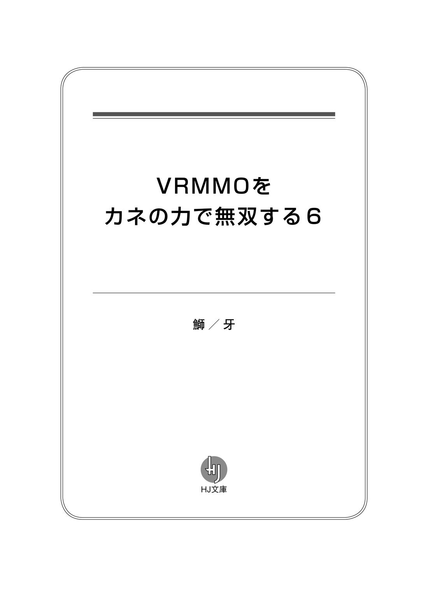

| VRMMOをカネの力で無双する6 (HJ文庫) | |
| 鰤／牙 | |
| (2015) | |



０―プロローグ
『オフ会をやるわよ!! 』
一 朗 たちの元にそんなメッセージが届いたのは、８月９日頃 のことだった。
ＶＲＭＭＯナローファンタジー・オンラインが、停止されていたサービスを再開させた、その直後のことである。
人工知能ローズマリーが引き起こしたこの事件は、公 にはプログラムの暴走による会社側の不 祥 事 と認 識 されている。運営会社シスル・コーポレーションには捜 査 のメスが入り、ゲームのサービスも、一時的に停止せざるを得なくなった、という状 況 だ。
そんな状況であるから、一朗たちもナロファンにログインできない日々が続いていた。
まぁ、ゲームにログインできなくなったくらいで、死にはしない。死ぬような人間もいるが、一朗たちはそうではない。ただ、ゲーム内の友人たちは元気かな、と考える程度のことである。
そんな折、ギルドメンバーのアイリスから、メッセージが届いたのだ。
要件は『オフ会をやるわよ!! 』である。
そんな急 かさなくとも、ナロファンはサービス再開されたのだし、ゲームにログインすればすぐできる話なのに。一朗はそう思いつつも、彼 女 のメッセージに取り合った。
「いつやるって言ってるんですか？」
洗い物を終えた桜 子 が、一朗の持つタブレットを横から覗 き込んでくる。
今日の朝食も、桜子の成金リハビリ食だ。朝からチキンラーメンは重いので、適当にパスタを茹 で、オリーブオイルと海苔 をまぶしただけの、実に色 彩 に欠ける虚 しい朝食となっていた。桜子は相変わらず、思い出 したように高級料理を食べたがる奇 病 から脱 せていないのだが、リハビリの効果は徐 々 に出ている。まだまだ先は長そうだが。
一朗は答えた。
「８月の第３週。盆 明 けくらいだね。桜子さんは、里帰りの予定ある？」
「んー......。言っても川 口 ですしねぇ。まぁ、実家に顔出しくらいはしてこようかな。でもお盆明けならなんの問題もないです」
そういう一朗に、〝実家〟の概 念 はない。彼 の父親にしてツワブキコンツェルン総裁である石 蕗 明 朗 が、帰るべき〝家〟を持っていないからだ。24 時間３６５日、世界のどこかしらを飛び回っている男である。
なので、一朗が親 戚 の集まりに顔を出す機会と言えば、元 旦 、曽 祖 父 の家がある鹿 児 島 に行くときくらいなもんである。父親ともそこで顔を合わす。母親とは、もう何年も会っていない。
さておき、一朗が里帰りをせず、桜子が『問題ない』と言うのであれば、いつでも良いということだ。一朗はアイリスに、その旨 をきちんと通達した。
「オフ会か、楽しみだね」
「どれだけの人に声をかけたんでしょうねー」
「声かけは結構、大規模にやったみたいだ。マツナガとか、ストロガノフとか」
一朗は、アイリスのメッセージが書かれたタブレット端 末 をスクロールしていく。
「明 日 葉 とかキングにも、声はかかってるね」
「世 良 ちゃん、来るんですか？」
「どうだろうね。彼女、あんまりこういうことには興味がなさそうだ」
キングキリヒト、桐生 世良とは、つい先日まで一 緒 にアメリカに行っていた。
心のうちに静かな情熱を秘 めたタイプの人間ではあるが、あまり人とのつながりを重視するタイプには見えない。というか、フレンド数ゼロのソロプレイヤーに、アイリスはどうやって連 絡 をとったのか、そこが謎 と言えば謎だ。
普 段 、ゲームでしか顔を合わせない友人たちが、現実ではどのような人間なのか。想像するのは悪 趣 味 かもしれないが、楽しみでもある。そういった意味で、半ば強 引 にではあるが、こうやって企 画 を立ててくれたアイリスには感謝だ。
「そういえば」
と、
「アイリス、最後にはこんな一言を付け加えてきた」
そう言って、一朗はタブレット端末を桜子に差し出す。
そこにはこのように書かれていた。
『費用はワリカン。
ビタ一文でも、奢 らせないわよ』
一朗の表情は、心底愉 快 そうなものである。桜子も、そんな彼の心中を察して、静かにタブレットを返した。
「ところで一朗さま、〝隠 しフィールド〟の噂 って知ってます？」
「知らないな。ナロファンの話？」
サービスが再開されたばかりであるのに隠しフィールドとは。
「なんでも、サービス再開直後に、いきなり出現した黒い穴があってですね。足を踏 み込んだら、まったく知らないフィールドに到 着 したって噂がそこらじゅうでですね」
「それただのバグなんじゃないの？」
一朗がばっさりと話を切り捨てる。まったく知らない、しかしフィールドとして認識できるということは、未実装のフィールドか何かか。サーバーにデータだけ移行させて、何かの拍 子 で既 存 のフィールドと接続させてしまった。真相はそんなところではないのだろうか。
第三者委員会によるサーバーの精査、プログラムの脆 弱 性 の補強、それだけのことを急ピッチで進めて、シスルはナロファンのサービス再開を、８月10 日の１周年イベントに間に合わせたのだ。多少の不具合が生じるのも、やむを得ない。
だが、桜子は渋 い顔である。一朗のもとにコーヒーカップを置きながら、彼女は静かにかぶりを振 った。
「よしんばただのバグだとしても、それを楽しむのがゲーマーとしての心意気ですよ？」
「僕 はゲーマーじゃないんだけど、なるほど」
桜子がそう言うのならそうなのだろう。あまり突っ込んで考えることでもない。
「ともあれですよ、今日、その隠しフィールド探しにいきません？」
「データが壊 れたりしないのかな」
「そういう報告はないみたいですけどね。ちなみに運営からの回答はありません」
あざみ社長に直接連絡して、聞いてみるという手段もなくはないが。
ともあれ、公式に認 可 された仕様でないものに手を出すのは、一朗としてはあまり気が進まない。基本的に、ルールは厳格に守られるべきだと思っているし、運営がまだ公開しようとしていない未完成のフィールドだとすれば、楽しみはあとに取っておきたい。
「そのフィールドって、どんなフィールドなんだろう」
「なんか、ジャングルみたいな感じって話でした」
桜子の言葉に、カップを取る一朗の手が、ぴたりと止まった。
「ジャングルですよー。一朗さま、好きでしょ？ 私も、短大卒業後のアジア旅行でいろんなジャングル見ましたよ。一朗さまはもっぱらアマゾンがお好きみたいですけど」
「ケオラデオやアンコールも好きだよ」
言いつつ、一朗は静かに目を瞑 り、考える。情報が少ない。だが、まさか、と思うことはあった。こうした時、一朗の直感はほとんど外れないものである。
だがインターホンのチャイムが鳴り、桜子が応答に出ても、一朗は珍 しく考え込んだままだった。何事においても即 断 ・即 決 を善しとする一朗であるからして、これほどの逡 巡 を見せることは滅 多 にない。この時ばかりは、彼は自分の勘 が的中していることを懸 念 していた。
しばらく後、桜子が何やら不安げな顔をして歩いてくる。
「誰 か来たの？」
「いやあの、それが、警察の方が」
「へぇ」
一朗は、まだ飲みかけのコーヒーを卓 上 に残したまま、ソファから立ち上がった。桜子は、主人の指示を仰 ぐといってオートロックを解除していないらしいが、まぁ警察を門 前 払 いするというのもあまりよろしくない。一朗はインターホンで軽い応答を交 わしてから、ロックを解除した。しばらくすれば、エレベーターから来訪者が上がってくるだろう。
カメラ越 しに彼らが提示した警察手帳は本物のように思えた。そのあたりに対して、余計な勘ぐりは要 らないのだろうが、用件となると、やはり、アレかな。一朗は自らの危 惧 が的中してしまったことに、何やら複雑な表情を作った。
「一朗さま？」
「ん、なんでもない。桜子さんは、いつも通りの一日を過ごすこと。良いね」
「は、はい？」
再度、インターホンが鳴る。こちらは玄 関 のものだ。機械越しの会話というのも鬱 陶 しく、一朗は直接玄関に向かって、戸を開けた。
「やぁ、」
厳しい顔つきで、警察手帳を構える２人の男に、一朗は挨 拶 をする。
「あなたが、」
「僕が石蕗一朗だけど。用件を聞こうか」
「えぇ」
年配らしき刑 事 が、淀 みない口調でこう告げた。
「不正アクセス禁止法違 反 の疑いで、あなたに逮 捕 状 が出ています」
あぁ、やっぱり。
後ろで桜子が小さく息を呑 む音が聞こえたが、一朗はすべて納 得 した。まったく、ナンセンスな話だ。
杜若 あいり。服 飾 デザイン系の専修学校に通う17 歳 である。
将来の夢は、アパレルデザイナーだ。
だが目先の目標はオフ会の実行だ。
声をかければ、意外と結構なメンバーが集まった。赤き斜陽 の騎士団 の面子やら、アキハバラ鍛 造 組 の面子やら。エドワードも短時間だが参加するらしい。だが、イチローの参加を聞いた彼は、少しばかり複雑そうな顔をしていた。まぁ、彼は御 曹 司 が嫌 いらしいから、仕方ないなとは思う。
マツナガは来ないらしい。理由を聞けば『だってリアルの俺 なんか誰も見たくないでしょ？』とのことだった。別にそんなこともないと思うのだが、まぁ彼のアバターは眉 目 秀 麗 であり、反面現実世界のマツナガは肥満体であると聞いている。リアルでの容 貌 の悪さを公言してはばからないのは、コンプレックスの裏返しであるのかもしれないと思い、アイリスは追 及 しなかった。彼女も鬼 ではないのだ（当社比）。
現実世界の容姿。オフ会の醍 醐 味 ではある。
とりわけＶＲＭＭＯともなれば、そのギャップ、あるいは同調性というのはより顕 著 に表れる。あいりだって、そこまでゲームとリアルでかけ離 れた容姿にしているわけではないが、あいりはアイリスほど髪 は赤くないし、体型だってシュッとしていない。いやいや、あいりもスレンダーだ。だがアイリスほどではない。
まぁ、その辺の楽しみがないのは、イチローと芙 蓉 の２人である。彼らはアバターの姿がそのままリアル容姿であるからして。この２人は付き合いが深いだけに、想像の余地がないというのはちょっと残念である。
ユーリは、勇ましくて頼 りがいのある性格が今のアバターとマッチしすぎていて、違 う容姿というのが想像できない。
キルシュヴァッサー兼 ヨザクラは、なまじ２つのアバターを同時に使っているだけになおさら想像がつきにくい。女性というからには、ヨザクラに近い外見で考えて良いのだろうか。あのままだとしたら、美人だなぁ。
わくわくしながら、オフ会の予定を組む。集合場所は新 宿 アルタ前。昼食の店はもう予約をとってあった。社会人が多いと聞き、少しばかり見 栄 を張った場所になったが、あいりはお年玉をマメに貯金するタイプである。ここは、使う時だろう。
やっぱりカラオケとかも行くものかしら。みんなどんな歌を歌うのかしら。なんて考えているあいりのもとに、ＢＧＭ代わりにつけていたテレビのニュースから聞きなれた名前が聞こえてきた。
『......の、シスル・コーポレーションのサーバーに対し......』
「んっ......？」
思わず、顔をあげる。シスル・コーポレーション、確かに、そう言ったか。
テレビ画面を睨 みつけると、神 妙 な顔をしたアナウンサーの下に、テロップが表示される。あいりは目を丸くした。信じられないものを見た。驚 愕 に打 ち震 える彼女に、アナウンサーの冷 涼 な声が追 い討 ちをかける。
『......し、警察は、資産家、石蕗一朗容疑者23 歳を、不正アクセス禁止法の疑いで逮 捕 しました』
「おっ......」
あいりは机を叩 き、椅 子 を蹴 飛 ばすように立ち上がる。両親が仕事で出 払 った広い一 軒 家 にて、あらんかぎりの大声で叫 んだ。
「御曹司ぃぃぃ―――――ッ!? 」
ともあれ、杜若あいりは、オフ会のプランを組んでいる最中に、そのニュースを見た。
彼女だけではない。
石蕗明日葉は、２つめの魔 球 を完成させ満足して帰宅した直後に、そのニュースを見た。
桐生世良は、自宅で母親とそうめんをすすりながら、そのニュースを見た。
坂 田 蒼 乃 は、秋葉原の自分の店でタバコをふかしながらそのニュースを見た。
江 戸 川 土 門 は、出張先のビジネスホテルでそのニュースを見た。
セルゲイ・キョーシローヴィチ・タナカは、厨 房 で１日の仕込みをしながらそのニュースを見た。
松 永 久 秀 は、暇 つぶしの釣 りスレを立てながらそのニュースを見た。
茅 ヶ 崎 由 莉 奈 は、アパートの自室で二 日 酔 いに痛む頭を押さえながらそのニュースを見た。
山 本 よしすけは、種 子 島 宇宙センターの清 掃 アルバイト中にそのニュースを見た。
苫 小 牧 伝 助 は、久々の生身の身体を堪 能 しながらインターネットでそのニュースを見た。
雨 宮 翔 子 は、マネージャーと営業に向かう直前にそのニュースを見た。
芙蓉めぐみは、朝食後の自由なひとときを楽しんでいる最中にそのニュースを見た。そして卒 倒 した。
眞 島 雅 紀 は、路地裏で悪党どもをぶちのめした後、電気屋のウインドウに並ぶテレビでそのニュースを見た。
杉 浦 瑛 香 は、室内であるというのに、日 傘 を回しながらそのニュースを見た。
野 々 あざみは、出勤直後のオフィスでそのニュースを見た。
ナローファンタジー・オンラインにて、石蕗一朗に関 与 したほぼすべての人間が、そのニュースを見ていた。そして、ほぼすべての人間が、まったく同じ感想を抱 いたのである。すなわち、
『あの男、今度は何をやったんだ』
「やったのは、僕じゃないんだけどなぁ」
警察署に向かうパトカーの中で、一朗はぽつりとそう言った。
１―御曹司、保釈される
「石 蕗 の息子 が捕 まったかァ」
「そのようです」
ポニー・エンタテイメントの本社ビルは、東京都港 区に存在する。その最上階に、最高経営責任者たる彼は座 り込んでいた。年相応の皺 が刻み込まれた顔には険しい表情を浮 かべ、卓上に無造作に置かれた自社製品を、ミライヴギア・Ｘを眺 めている。
彼には微 かな苛 立 ちがあった。禁 煙 生活をはじめてから、感情を持て余すことが増えたように感じる。寂 しい口元を紛 らわすため、引き出しをやや乱暴に開けて、中に入っていたロリポップキャンディーを取った。
「ま、良い気味と言えば、良い気味ではあるなァ。結局、あいつが裏からいろいろ手を回してきたおかげで、ボクらはシスルをモノにできなかったわけだ。そうだろう？」
「はい」
脇 に佇 む秘書が、静かに頷 く。
石蕗一 朗 の逮捕。罪状は、不正アクセス禁止法違反。
彼の逮捕に向けて、いろいろと尽 力 したのは音 桐 自身だ。『捕まったか』なんて他人事のように呟 いてはいるが、実際、捕まっていてもらわねば困る。
これで音桐の溜 飲 も多少は下がるわけだ。が、彼の真の目的は、別にそこにあるわけでもない。石蕗一朗の逮捕自体は冤 罪 だ。あの男ならば、みずからの無罪を証明してさっさとシャバに出てくることも可能である。
重要なのは、彼が冤罪を晴らす過程で浮かび上 がるいくつかの新事実と、真犯人だ。
いや、既 にそれを掴 んでいる人間は、かなりの数がいるはずである。
シスルがナロファンのサービス停止に追い込まれた、一連の不正アクセス騒 動 は、まだ終 焉 を迎 えたわけではない。もしこれらの新事実が露 呈 すれば、今度こそシスル・コーポレーションの社会的信用は失 墜 する。あの規模の会社には、致 命 的 と言えるほどに。
これらの事件は、音桐にとって一種の福 音 であった。シスルの犯 した不祥事にかこつけて、その実質的な運営権を奪 い取 ることに成功したのだ。今となっては、事実上シスルはポニー・エンタテイメント社の傀 儡 である。
だが、まだ足りない。
野 々 あざみの持つＶＲドライブ技術の大半は、あの小さな会社だけが保有しておくにはもったいなさすぎる。彼女には経営者なんかより、技術者の方がよほど向いているのだ。大学の仲良しサークルの延長で、ゲームを作っているだけの時間は、もう終わらせるべきだろう。
音桐は、椅子にふんぞり返ったまま、知人からよく『香 川 照 之 に似てる』と称 される悪役スマイルを浮かべる。それから、しばらく眺めていただけのロリポップキャンディーを、ようやく口にくわえた。どうにも甘 ったるくて仕方ない。もう少し、刺 激 が欲 しいなァ。と、思いながら、彼はキャンディーを舐 め回 し続けた。
『石蕗くん、とうとうやったのね!! 』
電話口から聞こえてきた声には、さすがに辟 易 とした。
「嬉 しそうだね、染 井 」
『嬉しくなんかないわ！ 哀 しいわ！ だってそうでしょ、かつては共に悪と戦った石蕗くんが、とうとう外 道 に身をやつすなんて、心が張 り裂 けそう！ あなたならいつかやると思っていたわ！ でも悔 しいわね、あなたの悪行を暴 き、白日のもとに晒 すのは私だと信じていたのに！』
「ナンセンス」
染井芳 乃 の声は無 駄 に大きく、一朗は受話器から少し距 離 を置いて話をしなければならなかった。結果として、取調室の中にも丸聞こえである。もともと妙 な会話がないよう録音されているだろうから大して気にする必要もないわけだが、それでもやはり、取次を行った新米らしき刑事と、一朗をここに連れてきたベテランらしき刑事は、目を丸くしていた。
「まぁ、君は信じないと思うけど、やったのは僕じゃない」
『悪人はみんなそう言うのよ』
「無実の人もね」
一朗は、早くも受話器を置きたい気持ちにかられていた。机を挟 んで対面に座る恰 幅 の良い刑事も、何やら頭を抱 えている。
「とにかく、君がまぁ、君なりの心配というか、おそらくそれに類 する気持ちで電話をくれたことには感謝しよう。でも今から取り調べだから。切るよ」
『あっ、待って石蕗く―――』
通話終 了 ボタンをおして、新米刑事に受話器を返 却 する。恰幅の良い刑事は、今度は苦笑いを浮かべていた。
「染井の嬢 ちゃんもまったく変わっていないな」
「本当にね。むしろ、彼女の正義感にも磨 きがかかったらしい」
刑事はどうやら、この場にいる警察関係者の中では一番立場が上にあるらしく、新米刑事やベテラン刑事に対しても『出て行っていいぞ』と告げた。ベテランの方はしばらく逡巡を見せたが、最終的には一礼して、取調室から出ていく。結果として、室内には一朗とその刑事が残った。
「懐 かしいな。おまえと、染井の嬢ちゃんと、あと著 莪 の小 僧 か。３人で探 偵 ごっこをしていたのが、もう５年前か」
「変わったこともあるし、変わらないこともある。例えばあなたが警部補のままであることとか。これで在位26 年だっけ。おめでとう」
その話は、刑事にとって決して愉快なものではなかったらしく、彼は露 骨 に顔をしかめた。
まぁ、旧交を温めることならいくらでもできるわけであるが、仕事をしている以上そうもいかない。警部補は、つつかれた手痛いところを放置して、一朗の前に書類を取り出してみせた。
「で、えぇと。石蕗の。おまえを逮捕する日が来るとは思わなかったが、」
「僕も思ってなかったけど。不正アクセス禁止法違反だったね。率 直 に聞こう。警部補、あなたは僕がやったと思うかい」
「いや思わないけどなぁ」
警部補は、書類を睨んでから頭を掻 く。
「しかし証 拠 が揃 ってるんだぞ。アクセスログとかな。まぁ見せるわけにはいかんが。シスルのサーバーに侵 入 したＩＰアドレスは、おまえの家のもんだ」
そう、今回の不正アクセス事件。被 害 者 はシスル・コーポレーションである。先日発生したアカウントハック事件以来、事故調査委員会は懸 命 に捜査を続け、ある日十 賢 者 システムのログに不正なアクセスの痕 跡 を見つけるに至った。ゲームの管理サーバーへのアクセスではないので、発見が遅 れたのである。で、いったいどこからのアクセスかと思いたどってみれば、なんと石蕗一朗の家からであった。
このあたりのゴタゴタについて、関係者がどのように思ったかまでは知らされていない。だが、エドワードの東京出張が長引いた経 緯 は、このあたりにも関係がありそうだ。その点は少し、彼に申し訳なく思う。
不正アクセスはその後も断続的に続いた形 跡 があり、まぁその、相手が石蕗一朗ということもあって、逮捕状を出すかに関しても相当なゴタゴタがあったらしい。しかし、ここ数日、再び集中しての不正アクセスが発覚したことで、最終的に今回の逮捕と相成った。
で、一朗とは古い付き合いであり、彼の人となりをよく知る警部補が、たまたまの巡 り合 わせでこの一件の担当となり、こうして取調室で顔を突 き合わせている。
「僕には、何が起きたかおおよその心当たりがある。幸い、警部補が担当してくれるなら、互 いに協力できるんじゃないかと思うんだけど、どうかな」
「うん？ まぁ、お前さんが協力的な態度をとってくれるって言うんなら助かるが。しばらく拘 留 することにはなるぞ」
この人の良さそうな警部補が、一朗の無実を信じてくれているというのは、彼にとって後 押 しであった。いつも肝 心 なところで薄 い部分を引く石蕗一朗のリアルラックだが、いつものことなので別段幸運とは思わない。
恰幅のいい万年警部補は、げらげらと笑いながら言った。
「いやぁ、お前さんのことだから保 釈 金 を山と積んで出て行くのかと思ったぞ」
「ナンセンス。必要と思ったらそうするけど、今のところそうは思わないし、いくらあとで戻 ってくるお金と言っても、無駄に払 うつもりはないかな」
さて、ひとまずは取り調べである。形式的にでもやっておかねばなるまい。
警部補は友好的であるため、妙な誘 導 尋 問 を疑う必要はなかったが、仮に他の刑事が担当したとしても一朗は気ままに答えたことだろう。思ったことをそのまま口にするため、ついつい余計なことまで喋 り出す一朗の調書を取るのは、何やら大変そうであった。
「さて、お前さんはこう言ってるわけだが、証拠は揃ってるわけだから、まごまごしてると強引に立件に持って行かれるわけだな。どうする、著莪の小僧を呼ぶか？」
「まぁ普段ならそうするんだけどね。彼はシスルの弁護士もやってくれてるから、どうかな」
彼は性格は悪いが腕 の立つ弁護士だ。味方についてくれれば心強かったが。彼を味方にできないとなると、今回の件に関しては、一朗もある程度強引な手法に出る必要はあるかもしれない。
証拠は出 揃 っているという。ただ、一朗としては、自らの無実を証明するのは簡単なことだ。不正アクセスの真犯人は、一朗の家の中にいるわけなのだから、それを捕まえて突き出せばよろしい。問題は、彼女に刑事責任を問うだけの法整備ができていないことである。彼女の安全を確保しつつ、自らの無実を証明しようとなると、これがちょっとだけ、難しい。
一朗が少し考えていると、取調室の戸をノックする音があった。
「おう、入っていいぞ」
「失礼します」
先ほど、染井芳乃の電話を取り次いでくれた新米刑事である。彼には、先 程 から曽祖父の石蕗隼 人 やら、又 従妹 の石蕗明 日 葉 やら、従兄 の石蕗五 郎 入 道 正 宗 やら、様々な方面からの電話を一朗に取り次いでくれているので、これが何やら申し訳ない。父・明 朗 からの電話は未 だになかったが、これからもないだろうとは思っている。
そんな彼が入ってきたということは、また誰かから電話でもかかってきたのだろうか、と一朗は思ったが。
「実は、石蕗氏に面会したいという少女が」
一朗と警部補は顔を見合わせた。わざわざ会いに来る〝少女〟、というと、これが心当たりがない。
ないわけではない。石蕗明日葉。桐生 世 良 。彼女たちがこっちへ飛んできてもおかしくはないが、さすがに早すぎる。
「名前は？」
「杜若 あいりと名乗っています。〝御曹司を出せ〟と」
「ああ」
納得した。
「知ってる名前か？」
「知らない名前だけど、たぶん知人だ。わざわざ会いに来てくれるなんて、どうやら心配をかけたらしい」
こうなると、少しばかり事情が違ってくる。一朗は、ひとまず警部補に対してこのように切り出した。
「保釈金はいくらだろう」
「おいおい。さっきと話が違わないか。無 駄 遣 いはしないんだろ？」
「違わない。必要だと思ったらそうすると言ったはずだ。友達が会いに来てくれたからね。彼女のために時間を取るのは、無駄遣いじゃないよ」
いつも通りの涼 やかな口調で告げる一朗に対して、結局こうなってしまうんだなぁ、と警部補は溜 め息 をついた。
一朗がロビーに赴 くと、左右をガッチリ警官に固められた小 柄 な少女が、彼を待っていた。
彼の知るアバターと共通する容姿など、ほとんど見受けられないものの、一朗にはその少女こそが杜若あいりであり、そしてナローファンタジー・オンラインにおいてエルフの錬金術師 アイリスのプレイヤーであると、即 座 に理解できた。少なくとも彼女のまとう小動物的な雰 囲 気 に関しては、似通ったところがある。
彼女もこちらにはすぐ気づいたようで、不意にソファから立ち上がって大 股 でこちらに歩いてきた。いきなりのことで警官の制止が遅れる。
「御曹司ぃっ！」
「やぁ」
「あ、あんた、何やったのよ！」
開口一番これとあっては、よほど信用が無いらしい。一朗はそれでもにこやかな態度を崩 さずにこう答えた。
「これでも濃 密 に生きてきたつもりだからね。大 概 のことはやったけど、警察に捕まるようなことは何ひとつしていない」
「じゃあなんでここにいるのよ」
「世の中をどれだけシステマチックにしても、それを動かすのが人間である以上エラーは起きる。たまたま巻き込まれたのが僕だったっていう話だよ。ちなみに今保釈されたとこ」
後ろの方で、警部補が苦笑いしながら手を振っていた。あいりの方も、あれが担当刑事であると理解したのか、少しだけかしこまった様子で会 釈 する。
「それにしても、よくここまで来たね」
「ああ、うん。テレビに警察署が映ったから......。家自体はそんなに遠くなかったし」
まぁ、なんにせよ、よもやこんなシチュエーションで初顔合わせをすることになろうとは。とんだオフ会になってしまった。一朗の顔を見てようやく緊 張 の糸が解けたらしいあいりだが、ここが警察署であることやら、とうとうリアル御曹司とご対面してしまったことやらが原因でか、別の緊張に苛 まれはじめた様子である。
まぁ、せっかく保釈金を積んだのだ。長居は無用だな、と一朗は思った。どうせ外にいても警察の監 視 はつくのだろうから、これ以上中にいる必要もない。
「アイリス、外に行こうか」
「あー、やっぱそう呼ぶのね......」
「本名の方が良かった？」
「アイリスで良いわ」
軽い会話の後、２人は外に出る。８月も中 頃 。強い日差しと高い気温は、まったく終わってくれる気配がない。うだるような暑さは、駐 車 場 のアスファルトを熱した鉄板のように変え、まだ午前中だというのに、警察署前の一帯は焦 熱 地 獄 と化していた。この暑さには、セミも黙 る。
「テレビで見たとき本当にびっくりしたんだから」
「あぁ、もう報道されてるんだね。マスコミも仕事が早いなぁ」
先ほど電話をくれた染井あたりが、何やら余計な活 躍 でもしたのだろうか。
「それにしても、あー、会っちゃったわね」
どこへ向かうでもなく、歩道に出てぶらぶらし始めた頃 に、あいりはばつの悪そうな声を出した。
「まぁ、そうだね。僕がツワブキ・イチローだ」
「あたしはアイリスよ。改めてよろしくね」
向き合うでもなく握 手 をするでもなく、ひとまず形式的にオフ会らしい挨拶をしておく。
「あんた、保釈してもらったって言うけど、これからどうすんの？」
「特に決めてない。でも、君に足を運ばせてしまったからなぁ。良かったらうちでお昼でも食べるかい。キルシュヴァッサー卿 も喜ぶ」
とは言え、成金病の快 癒 していない桜 子 に昼食を作らせるのはちょっと躊躇 いがある。それに、リビングからも高級家具を撤 去 して、ゴザを敷 いているくらいだから、あまり来客をもてなすのに適した環 境 ではないかもしれない。
まぁ、家についてから考えればいいか。
そんな一朗の懸念を知ってか知らずか、あいりは思いっきり顔を曇 らせた。
「ネットで知り合った専修学校生を自宅に誘 う23 歳......」
「はっはっは、ナンセンス」
あいりの『どうすんの？』が、そういった目先の予定だけを指しているのではないことは、一朗にもわかる。保釈をしてもらったところで、当然一朗の罪状は消えないわけで、うかうかしていると立件・公 訴 されてしまう。彼 女 も一朗の無実を信じてくれているのだとは思うが、そうだとして、それを証明するための手立てはあるのか、という話だ。
まぁ、冤罪を証明するにしても、なるべく事を荒 立 てたくはない。少なくとも客観的に見れば一朗はほぼ間 違 いなくクロであって、警察も、おそらくはシスル、ポニー社の関係者も、己 の義務を忠実に全 うしたに過ぎない。そこをあげつらってどうこう、というナンセンスな展開になるのは避 けたいところだ。
「で、あんたん家どこ？」
「三 軒 茶 屋 」
「ビミョーに遠いわね」
話をしていると、２人はちょうど自動車ディーラーの前を通りがかる。それを横目に、一朗はぽつりとたずねた。
「アイリス、君は何色が好き？」
「赤だけど、移動の為 だけに自動車買うとかやめてよね」
「君に快適な移動を提供したかったんだけど」
「なんか今日の御曹司、ちょっと優 しくて気持ち悪い。ひょっとして浮かれてんの？」
「そうかもしれない」
「では、また後日、正式に押 収 に参りますので」
「はーい、どうもー。ご苦労さまでーす」
捜 査 員 が玄関から出ていくのを、笑 顔 で見送った桜子であったが、ドアがばたんと閉まったと同時に台所へ駆 け込んだ。玄関に撒 く塩を探してみるが、あいにく小 瓶 に入ったものを除けばアンデス岩塩がゴロゴロと放 り込んであるだけで、撒けそうなものは何もない。仕方ないので、桜子は玄 関 前 に新聞紙を敷き、汚 れないようラップで丁 寧 に包 んだ岩塩を、２、３個置いておくことにした。
彼 らも仕事で来ているのはわかる。だが、だからといって敵対感情を抱くななどと言う話となっては、戦争なんか起こらない。温 厚 な桜子でも怒 るときは怒るのだ。たとえば主を悪 し様 に言われたときであるとか。
まぁ塩は撒けなかったが、岩塩を置くことで溜飲はだいぶ下りた。
捜 査 員 達 は、後日、オフィスルームにあるスーパーコンピューターやサーバーマシンを押収に来るという。これらが証拠物件になるというのなら仕方がないが、一朗の無実を信じている桜子としては、あまり納得のいく話ではない。
いやいや、まぁ、よそう。ここでカリカリしても仕方がない話である。ここは主人のいいつけを守るのが良きメイドではないか。つまりいつもどおりに過ごせばよい。これから昼にかけて邸 宅 内の清掃を済ませ、その後、ナロファンにログインする。ニュースでも報道されてしまったから、ゲーム内でもイチローのことを気にかけている仲間たちはいるはずだ。彼らにも報告をしなければならない。
桜子は、家事の再開をするべくオフィスルームに足を踏 み入 れ、そこであるものを見つけた。手帳だ。
机の上に置かれた革のカバーのシックな手帳は、先ほどの捜査員たちが持っていたものと同じである。どうやら忘れ物らしい。彼らのことは正直気に食わなかったが、それはそれとして、こんな大事なものを失くしてしまうのは可 哀 想 だ。
桜子は手帳を取って、彼らを追いかけようと玄関まで走った。そしてドアノブに手をかけ、違 和 感 に気づく。
「んっ......あれ？」
開かなかった。
鍵 を解除しようとしても、これがまた手 応 えが重く動かない。オートロックの誤作動だろうか。桜子は首をかしげながら、またオフィスルームへ戻る。警察が押収するといったスパコンの他に、マンションのセキュリティシステムを管理するパソコンが１台あって、これの簡単な操作方法は彼女も一朗から教わっている。
どうも前回のメンテナンス頃から、セキュリティシステムのエラーが多いらしい。最近はおとなしかったとは思うのだが。桜子は管理画面を呼び出 して、鮮 やかな指さばきでパスワードを入力する。
が、
はじかれてしまった。エラーである。パスワードが違うらしい。入力ミスかと思い、二度、三度と試行してみるが、結果は変わらなかった。知らないうちにパスワードが書 き換 えられている。
「う、うそー......」
桜子は、思わずそうつぶやいてしまった。
ツワブキパピヨン三軒茶屋。石蕗一朗が設計し、出資し、建造したこの高級マンションは、最先端の防犯セキュリティをこれでもかというほど盛り込んだ、世界一安全な集合住宅のひとつである。物理的にも頑 健 だ。スティンガーミサイルの直 撃 にも耐 える。
なんでそんな無駄に頑 丈 な設計にしてしまったのかという点については、説明すると長くなるのでさておくが、とにかくそのようなマンションであるからして、閉じ込められると、これがなかなか厄 介 だ。
「ひ、ひとまず一朗さまに電話をしないと......」
桜子が部屋に備え付けられた電話へと手を伸 ばそうとした瞬 間 、けたたましい着信音が響 いた。
「うっひゃあ!? 」
思わず、飛 び跳 ねる桜子である。だがすぐに胸 元 に手をやって、心を落ち着かせる。なんのことはない。家に電話がかかってきたという、ただそれだけのことだ。
桜子は、受話器をとった。
「はい、お電話ありがとうございます」
『............』
受話器の向こうから最初に得られた反応は、無言である。
「え、えっとー......」
『............』
「あのー......？」
『............』
なんだか怖 い。
桜子はホラー映画が好きだ。それも、こうドロドロとした恐 怖 を掻き立 てる、ジャパニーズホラーが好きだ。だが、自分でそれを体験したいとは思わない。よりにもよって、主がどこにいるかもわからない、この状 況 で。
『突 然 、お電話をかけて申し訳ありません』
聞こえてきたのは、平 坦 な合成音声だった。女性のものである。
「あ、はい。どうも」
『私は、ローズマリーです』
「はいはい......。はい？」
安心すると同時に、先ほどとはまた別の、恐怖じみた感情が背筋をはい登ってきた。
ローズマリー。桜子はその名前を知っている。
先日、ナロファンにおける石蕗一朗のアカウントが盗 まれた一連の事件。その犯人たる人工知能こそが、確かローズマリーという名前であったはずだ。人工知能による自発的な犯行であるという事実は、公 には秘 匿 されており、ローズマリーは全世界に広がる、広大な量子ネットの何処 かへと逃 亡 した。
現行の法律では、ローズマリーを犯罪者として裁くことはできない。彼女の扱 いはあくまでも〝暴走したプログラム〟だ。バグプログラムは削 除 し、再発防止に努めるのが、本来あるべき対処法である。だが、ローズマリーに芽生えた〝自 我 〟は、そうした現行法の扱える範 囲 を超越していた。なので、一朗も、シスルも、ローズマリーの逃亡を認め、そしてそれを秘匿したわけである。
そのローズマリーが、このタイミングで電話をかけてきた理由。
「ひょっとして、私をここに閉じ込めたのは、あなたですか？」
『はい』
肯 定 の返事は、あっさりしたものだった。
『あなたは、キルシュヴァッサー、及 びヨザクラのプレイヤーですね』
突 如 そのような話題を振 られて、桜子は面食らった。まさかのナロファンの話である。
「あ、はい」
『偶 発 的 に、あなたと２人きりになる機会を得られたので、このような手段に訴 えました。私は、あなたと対話を行う必要があります』
奇 妙 な言 葉 遣 いだ。意図してこのように話しているのか、あるいは、癖 のようなものなのか。判別がつかない。だが、浮かび上がった数々の疑 問 符 は、桜子の脳内から徐 々 に恐怖を追い出していってくれた。
「理由を聞かせていただけますか？」
桜子がたずねると、やはり数秒の間があってから、ローズマリーはこう答えた。
『私が、あなたを脅 威 として認 識 しているからです』
話を聞いてみる。
ローズマリーは、シスル・コーポレーション社長・野々あざみが開発した人工知能だ。
量子コンピューターの技術発展が、より柔 軟 な思考を行う人工知能を作成可能にしたという事実は厳然としてある。が、それでも桜子としては、ローズマリーの存在は驚 嘆 に値 した。話せば話すほどに、彼女は（〝彼女〟と表現することになんの疑問も持たないほど）人間らしい思考を行っているのだとわかる。
そこを追及すると、ローズマリーは答えた。
２ヶ月前は十賢者システムの一員として、普 通 にゲーム内のシステム管理を行っていたと記 憶 しているらしい。ゲーム内には、様々な人間の意思・思考が存在し、それらの持つ非論理性・非合理性は、十賢者たちには理解できないものであった。彼らは常に討論を続けたが、理論的な解答が得られることはなかったという。
ある日より、ツワブキ・イチローというプレイヤーの存在が、ゲーム内でも目立ち始めた。彼の行動における非合理性は群を抜 いており、ローズマリーはイチローとの対話によって、人間の非論理性・非合理性を理解することができるのではないかと考えた。もともと彼らは、自ら命題を模 索 し、それを解決することに特化した人工知能である。ローズマリーは、この命題の解決には外部との対話が不可欠であるとして、創造主であるあざみ社長に、イチローとの対話を求めたのだった。
果たして、ブレイクスルーは成った。ローズマリーはイチローとの対話によって、人間の非論理性・非合理性を、わずかながらではあるが獲 得 していったのである。
ローズマリーは石蕗一朗との出会いから、はじめて交 わした会話の内容、その時自身が受けた印象・衝 撃 などを事細かに桜子へ語った。はじめは興 味 津 々 で聞いていた桜子だが、途 中 から何やら、背筋がむずかゆくなるような、うんざりした気持ちを抱き始めた。
これは、惚 気 というやつだ。
ローズマリーの口調は事務的である。声は平坦で抑 揚 がない。如 何 にもな合成音声は滔 々 と、石蕗一朗がいかに素 晴 らしい男性であるかを語り続けた。彼女はきっと、これを客観性に富んだ分 析 だと思い込んでいるのだろう。そこを指 摘 するべきか否 か、桜子はおおいに悩 まされた。ぶっちゃけ桜子は、自らの主人が、ローズマリーの語るほどに人間のできた男だとはまるきり思っていない。
だがひとまず、ローズマリーの言い分は、大いに理解できた。
自我の芽生えたＡＩか。ロマンではある。桜子は、自室に積んだままにしてあるマスターグレードＥＸ‐ｓガンダムのプラモデルを思い出していた。確かに、人間らしい非合理性を獲得する上では、破 天 荒 な変人と付き合わせるのが一番よい。
「ローズマリーは、その上で私を脅威として認識しているんですね？」
その言葉の意味を理解できないほど、桜子は朴 念 仁 ではない。
『はい。あなたとの対話が私にとっての最優先事 項 です。他に、アイリス、キングキリヒトとの対話を行う必要があります』
「えぇと、ネムさんは？ あとフェリシアちゃんとか」
『彼女たちは脅威として認識できません』
「そうですか」
どうも、買いかぶられているらしいな。桜子は思った。しょせん自分と一朗の関係など、使用人と主人でしかないというのに。でも、それは一朗式に言うなれば、桜子の主観でしかない。他人から見た真実は、また別にあると言えば、そうだ。
まぁいいでしょう。
「どうせ、このままじゃ埒 も明きませんしね。大して力になれるかはわかりませんが、お話は聞きましょう」
『感謝します』
「でも、いたずらはほどほどにしないと、一朗さまに嫌 われちゃいますよ？」
ちょっとした効果を期待しての、冗 談 じみた脅 しではあったが、この言葉を受けてローズマリーはまた黙り込んでしまう。
「どうしました？」
『いえ、イチローが私を嫌う可能性について類推し、それを懸 念 しています』
「おおう......」
『アメリカの時もそうでした。私は、彼にとって不利益となる行 為 を働き続けている。それは事実です。私は彼のことを詳 しく知る必要がありますが、やはり、彼はそれを許さないでしょうか』
反応が、予想以上にしおらしい。桜子は苦笑した。
「まぁまぁ。一朗さまは不利益になるくらいで怒るような心の狭 い人じゃないですよ。おイタに関しては素 直 に反省して、あとでごめんなさいしましょうね」
『それで許していただけるのでしょうか』
「好きな人に許してもらいたいという気持ちはわかりますけど、大事なのは自分の謝意をしっかり表すことですよ」
ふと思えば、自分はＡＩの恋 愛 相談にのっているのだろうかと考え至る。こんなの人類史上初の快挙であろう。桜子自身、恋愛経験はそこまで豊富では......いやいや。そんなことはどうでもいい。
「ま、ひとまず、この件のことは一朗さまにちゃんと連 絡 します。いいですね？」
『.........』
「ローズマリー？」
『はい。了 解 しました』
それだけ言って、ローズマリーからかかってきた電話は切れた。
いま、彼女はどこにいるのだろう。このマンションの管理サーバーにでも、常 駐 しているのだろうか。と、なると、これからかける電話も、ローズマリーに筒 抜 けの可能性はある。
ま、別に彼女に対して後ろめたい会話をするわけでもない。
桜子は、再度プッシュボタンを押 し、改めて、電話をかけることにした。
一朗とあいりは、結局徒歩で三軒茶屋にある一朗の自宅までやってきた。いかにもといった高級住宅街に、やはりいかにもといった作りのマンションである。あいりは『はぁー......』と、ため息なんだか感 嘆 なんだかよくわからない息を漏 らして、その建物を見上げた。
「これ、全部あんたん家？」
「僕 の家は最上階と、あと一部だけ。他はいろんな人に貸してる」
「ふーん」
いろんな人、というのが、つまりどういう人なのか。あいりは聞かないことにした。一階のロビーから出てくる、サングラスをかけた住人は、テレビでよく見かける類の人物な気がしたし、こういうところを突っつくのもあまり趣 味 ではない。いろんな人というのは、いろんな人なのだろう。しいて言えば〝おカネのある人〟か。あいりにはしょせん無 縁 な話である。
「芙 蓉 さんは住んでないの？」
「そういえば住んでないね。部屋に空きはあるし、本人が借りたいといえば断る理由はないんだけど、そういった話を切り出されたことはない」
「ふーん」
そう言えば、ここでと一朗は思い出した。
桜子には、ついつい保 釈 された旨 を連絡しそびれてしまった。いきなり帰ったら驚 くだろうし、今からでもアイリスを連れて行く旨でも伝えておくべきだろうか。そう思って取り出したスマートフォンに、ちょうどその桜子から着信があった。正確には、一朗宅の家電話からである。
ひとまず出る。
「もしもし」
『あ、一朗さま！ よかった繋 がった！ 繋がりました！』
さてどうしたことだろうか。いつもの桜子に比べて落ち着きがない。
『警察に電話したら保釈されたって言うから、驚きましたよう』
「連絡が遅れてすまないね。何かあった？」
『ローズマリーがうちに来ました』
その言葉を聞いて、一朗は監視カメラを睨 みつけた。なるほど。やはりそういうことか。
『それで、ええと。ちょっとマンションのセキュリティが乗っ取られちゃってですね。家のドアが開かないのです。これから彼女からいろいろお話を聞こうってところなんですけど、どうします？』
ちらりと後ろのあいりを見れば、首をかしげていた。申し訳ないが、彼女に桜子の手料理を振 舞 う機会は遅れることになりそうだ。現在の桜子が万 全 でないことを鑑 みれば、案外それでも良かったのかもしれないが。
「ローズマリーのことは桜子さんに任せよう。僕はいろいろと、やることができそうだ」
おそらく、ローズマリーがしでかしたのは、一朗の家のセキュリティシステムを乗っ取ったというだけのことではない。一朗の家からシスルに何度かあったという不正アクセスも、おそらくは彼女の仕 業 だ。
いつから一朗の家に潜 んでいたのかは、定かではない。案外、先日のアカウントハック事件の時点で、一朗の家にたどり着いていた可能性はある。
どちらにしても、かなり、厄介なことになってしまった。
『あの、一朗さま？』
一朗が監視カメラを睨みつけたまま考え込んでいると、桜子が何かを窺 うような声 音 を発した。
「なんだろう」
『ローズマリーのこと、あまり怒らないであげてくださいね』
彼女の言葉を聞いて、目を閉じる。
『私はそのう、閉じ込められてはいますけど、あまりまだ迷 惑 には感じていませんので』
「ふむ」
と、一朗もため息をつく。
この時点に来ると、事情が飲み込めないどころではないあいりが、必死に聞き耳を立てようと顔を近づけてきていたが、ひとまず放置する。
「僕が怒るか怒らないか。それは僕自身が判断することなので、確実なことは言えないけれど、でも桜子さんがそう感じていることは考 慮 に入れておこう」
ローズマリーがなぜこのような手段に訴えたかは、理解できなくもない。
それはそれとして、彼女のやっていることは犯罪だ。そして、現在、人工知能に罪を償 わせるだけの法整備ができていない。彼女を守るのは、かなり骨が折れるだろう。
何が正しくて、何が間違っているのか。それを判断するのは自分だ。
かつて一朗がローズマリーに語ったことを、彼女は忠実に実行しているに過ぎない。ひとつの人工知能が必死にもがいて獲得した、彼女なりの真実を、できうる限り尊重するべきだ、とも感じていた。
「まずは、えぇと、捜査員のメモ帳だっけ。それはまた取りに来る可能性があるけど、物理的に内外で遮 断 されているからまず渡 せないね。以前使ってた、秘密書類用の小型エレベーターがまだ生きていると思うから、それで下に送っておいてほしい。彼らが取りに来たら僕が渡そう」
背後でまったく事情のつかめていないあいりが『なんでそんなのあんのよ』と突っ込んでいた。
『あ、はい。わかりました』
「で、あとは、桜子さんは言いつけた通り、いつも通りの一日を送ること。ローズマリーの対応に関しては任せよう。おそらくだけど、彼女はここで、僕が強く介 入 することを望んでいないはずだ」
『かしこまりました』
「ん、結構」
一朗はそれだけ言って、通話を切った。振り返 ると、退 屈 そうな表情を浮 かべた杜若あいりが、駐車場をきょろきょろと見回している。
「すまない、アイリス。時間を取らせた」
「いやまぁ、別に良いんだけど」
携 帯 をしまいながら隣 の少女に謝罪する。彼女も複数の感情が入り混じった微 妙 な顔をしていた。一番強いのは〝怪 訝 〟だろうか。
「で、何があったの？」
「ちょっとだけ。君にも事情を説明しなければと思うんだけど、話せばいろいろ長くなりそうだ」
「まーいーわよ。どうせ暇 な夏休みなんだし」
一朗は大きく息を吸って、吐 き出した。一回の深呼吸でだいぶ感情がクリアになる感覚がある。
「ご飯でも食べようか」
一朗が駐車場の方に歩き出すのを見て、あいりも追いかける。おそらく何が起きているのか理解していないであろう彼女だが、一朗がたびたび視線を送っていた監視カメラに対して、少しだけ手を振って離 れた。
「はい、そんな感じです」
一度受話器を置いたあと、桜子は改めてローズマリーに向けて、そう言った。
ローズマリーとは現在、この電話機を通してのみ通話が可能である。その気になれば、メールや他 の媒 体 を使っても会話はできるのだろうが、やはり直接通話を行うのが、レスポンスとしては一番早い。
『私は、』
受話器の向こうで、ローズマリーの言葉はやけに重苦しい。
『私は、イチローが私に対して興味を失うこと、ないし、私の思考過程が悪質であると判断することを懸念しています』
「愛 想 を尽 かされたくない、ってことですよね」
桜子はうんうんと頷 いた。
事情がはっきりしてきたので、桜子は家事を再開することにした。電話をスピーカーフォンにして、まずはリビングの掃 除 から執 り行 う。
幽 閉 状態であるとはいえど、一人で過ごすとなればこの家はなかなか快適である。もちろん、メイドとしての職務はきちんと果たすが、仕事が終わってもナロファンはできるし、未消化のアニメもあるし、箱で積んだままのガンプラもあるし、お腹 が減ったら御 飯 も作れる。風 呂 もあるし、ジム設備やプールもあるんだから、気楽にいこう。
そんでもって、こうやって、ローズマリーの相談にも乗ってやろう。
「それで、私が脅威だから、お話をしたいってことですよね」
『はい。私がイチローを理解する上で、取りうる手段のひとつでもあります。キングキリヒトから、そのように提案されました』
「キングキリヒトから？」
キングがそのようなことを言うとは思えないのだが。桜子が首をかしげると、ローズマリーは続けた。
『人を理解するということは、深い付き合いを積み重ねていく過程で、修得していくものだと。私は、イチローと何度か言葉をかわし、彼を理解しようとしてきましたが、更 なる理解を得るためには、彼とより親しい人物と対話を行うことが必要になります』
「なるほどなるほど」
リビングに静音掃 除 機 をかけながら、力強く頷く桜子。
「よくわかりました。じゃあ、ちょっとお昼すぎまで待ってもらえますか？ その頃には家事が終わりますから、そうしたら、顔を合わせて、ガチでお話ししましょう」
『顔、ですか』
ローズマリーの平坦な電子音声に、わずかな戸 惑 いが浮かぶのがわかった。
桜子は、いたずらっぽく笑うと、彼女の声を発し続ける電話機に、こう声をかけた。
「私、ナロファン用のアカウントを、２つ持ってるんですよ」
「と、まぁ、事情としてはそんなところ」
マンションの駐車場に向かう傍 ら、一朗は今回の件、及びローズマリーの存在について、簡単な説明をした。あいりはしばらくポカンとしていたが、その後、頭痛をこらえるかのように額を押さえ始める。
「なんでこう......あんたに女が絡 むとロクなことが起こらないのかしら......」
「そんなに自分を卑 下 するものじゃない」
「あぁ、そうね！ アイリスブランド事件も結局は身から出た錆 よね！ わかってんのよクソッタレが！」
あいりの甲 高 い声が、駐車場に反 響 した。サングラスをかけたスポーツ選手とアイドル歌手が、驚いたようにこちらを見ている。一朗が片手をあげて謝罪混じりの挨 拶 をすると、彼らは軽めの会釈をしてこそこそと撤 退 していった。一朗が『二人が仲良いってことは秘密ね』などと余計なことを教えてくれたので、あいりは知らなくても良い事実を知ってしまったことになる。あの２人って、そうだったのか。
「あんた、警察から出てきたばかりでしょ。鍵とかあんの？」
「うん。一応、マンション内のセキュリティネットワークとは独立した秘密の装置がいくつかあってね」
何やら仰 々 しい言い方である。おそらく一朗のものであろう青いスーパーカーの前にやってきた２人だが、あいりは、まず一朗が壁 の方まで歩いていくのを見て、何をするのだろうかと思った。
壁に偽 装 したカバーを外すと、そこには指 紋 認 証 装置と１～９、及びアルファベットの羅 列 されたテンキーがある。一朗が指紋認証を行った後に、32 桁 の暗号をよどみなく入力すると、空気の抜けるような音がして隔 壁 のひとつがガコッと開いた。あいりの顎 もガコッと外れた。
「定期的に掃除と点検はするんだけど、ここから鍵を取るなんて久しぶりだなぁ。アイリス、どうしたの？」
「なんかこのマンション......。秘密基地っぽくない？」
「僕の趣味じゃないよ。でもときおり便利だとは思う。こういう時とかね」
一朗は運転席に滑 り込み、助手席に座 るようあいりを促 した。彼女はやや躊躇いながらも乗り込んで、シートベルトをしっかり締 める。
「何か食べたいものはあるかい」
「んー、カマスの塩焼き」
「良いセンスしてるなぁ。オフ会は割 り勘 らしいから、今日は僕に奢 らせてもらおう」
あいりは、そこには異を唱えなかった。というよりも、唱える余地がなかった。彼女もあまり経済的に裕 福 な身ではないのだ。もちろん、この御 曹 司 に昼食を奢ってもらうのは甚 だ不服ではあるのだが。
一朗はステアリングを握 りながら、ＢＧＭ代わりのカーテレビをつける。ちょうど昼前のニュースで、石蕗一朗逮 捕 に関する報道をしていた。マスコミも飛びつく題材ではあろうが、取り立てて報道するような情報も少なく、関係者からのコメントなどを紹 介 して尺を稼 いでいる感じだ。
『......石蕗容疑者の父親であり、石蕗総合商社の社長でもある石蕗明朗氏は、この件に関する同社の取材に対して『事実関係が確 認 できていないので、コメントは差 し控 えたい』との返答を残しています......』
「あんたのお父さんって、どんな人？」
あいりは、ニュース画面を見つめながら、そうたずねる。
「小心者の陰 謀 屋だよ。僕は尊敬してるんだけど、本人には秘密」
「へぇ。なんか意外」
まさか一朗の口から〝尊敬〟などという言葉が出てくるとは思わなかった。小心者で陰謀屋というのも、なんだか彼のイメージとは違 う。ただ、聞くところによれば、商才の無かった父（一朗の祖父）から事業を引 き継 ぎ、財 閥 解体と共に離 散 したかつての関連企 業 を再びまとめ上げたのは、すべて石蕗明朗の手 腕 であるという。
明朗は、一朗に対して、そうした自分の稼 業 を引き継ぐ人間に育つことを期待しており、自らの膝 下 で帝 王 学 や経営学を教え込むつもりであった。が、芸 術 家 肌 であった妻が、幼少期より一朗を世界中に連れ回したせいで、ついぞそれが叶 わなかったのだという。
「なんか、あんたのバックボーン聞くの初めてだわ」
「僕もあまり人には話さないからね」
「なんかこう......アレよね。わかっちゃいたことなんだけどさ」
「うん？」
あいりは、カーテレビから視線を窓の外に移して、何やら考えをまとめるように口ごもる。
「ネットで知り合った相手にも、家族がいて、歴史があるんだなーって話よ」
「そうだね。わかっていても、実感するのは難しいこともあるかもしれない」
しかし、その話通りとなると、一朗は父から直接帝王学や経営学の手ほどきを受けたわけではないらしい。イメージだけでモノを語るのならば、大企業の御曹司というのはそういったものを当たり前のように教授されて生きてきたと思っていたので、これまた意外な話ではある。
だがまぁ、納 得 できることも多々あった。礼 儀 作法や、貴人としての立ち振る舞 いが独学ならば、このような変人にも成長しよう。上流階級との交流などまるきり縁 がないあいりだが、この一朗がそのスタンダードであるとは、思っていなかった。
曰 く、
「帝王学っていうのは、人の上に立つための作法だよ。ひいては、誰 かの助力を必要とする人間の作法だ。だからあんまり興味がない」
「なんかその発想、寂 しいわね」
ひとりでも生きていけるという確信があるのか。まぁ、あるのだろうこの男なら。
「そうかな。僕はそうは思わないけど」
「あんたがどう思ってるとか、そんなんどーだって良いのよ。あたしだったら、そういう考え方ヤだなって話してんの」
少しだけの苛 立 ちを込めて吐き捨 てるように言う。ちょうど、車は赤信号で停車し、運転席に座る一朗は、やや驚いたような目つきでこちらを見ていた。だがそれは、すぐに嬉 しそうな笑顔に変わる。信号が青に変わったので、一朗は視線を前に戻 した。
「君の発言には、たまに驚くなぁ。その通りだ」
御曹司は妙 に上 機 嫌 である。あいりには解 せないことだったが、正直、イライラされても困るのでこれで良いか。
「なにそれ」
「君と友人になれたのは僕にとって価値あることだなという話」
まるでなんでもないことのように言う一朗を、今度はあいりが見る番だった。だが数秒もしないうち、ふんを鼻を鳴らし、シートに身体を埋 めるように深く座り込む。
「あんたも、たまーに嬉しいこと言うのよね。そういうの、ズルいわ」
「喜んでくれたのなら、結構」
２人を乗せた青いケーニッグセグは、やがて小さな料 亭 へと到 着 した。
あいりが食べたいものに〝カマスの塩焼き〟を挙げたのは、そんなに高そうなイメージがなかったからである。だがとんでもない。カマスの塩焼きは高級料理だ。『カマスの焼き食い一升 飯』なんて言葉があるくらいで、焼き物にすると絶品であるという。
一朗は、料亭につき、個室へ案内されるなり、『少し電話をかけてくる』と言って席を離れてしまった。あまり気が進まない顔をしていたところを見るに、決して愉 快 な電話ではないのだろう。
だが、たどり着くなり放置されてしまったあいりとしては、たまったものではない。普 段 からすると分不相応な料亭でただでさえ緊 張 しているところに、何やら女将 的な風 貌 の女性がそうした薀 蓄 を語り始めたのだから、あいりの緊張と言ったら、なかった。
御曹司、早く帰ってきてよ。場が持たないわ。
と、思わざるにはいられない。
「でもお嬢 さま、お目が高いですわ。今朝、良いものを仕入れたばかりですの」
「そ、そうね。ＯＭＥＧＡは高いわね」
混乱に乗じてこんなことも言ってしまう始末であった。こうした店に入るのに、今の自分は変な格好ではないかとか、粗 相 をおかしていないかとか、彼 女 の脳内はそんなことでいっぱいだ。こうしたあたり、まだまだ自分はみみっちいと思う。
「カマスは小さくて華 奢 なのに、すごく元気が良いお魚ですのよ。ちょっと荒 っぽいところがあって、漁師の皆 さんに噛 み付 くこともあるんですって」
「まるでアイリスだ」
戻ってきた。障子が開いて、一朗が姿を見せる。
「あんた戻ってきて開口一番にそれ？」
さっそくの憎 まれ口 をカマスあいりであるからして、その言葉もお互 い様 であろうか。女将はふっくらとした笑 みを浮かべ、２人の言葉のやり取りを見守っていた。何やらそこには妙な勘ぐりがある気もしてならないが、あいりはあえて無視する。
一朗は座 敷 に腰 を下ろしながら、女将に言った。
「あとでもう一人来る。それと、たぶん警察も来てると思うから、隣の座敷にでも案内しておいてあげて欲 しい。彼 らの注文分は、僕が持とう」
「石蕗さまも大変でいらっしゃるのね」
「僕はそんなに大変じゃない。労 いの言葉は彼らにかけてあげて欲しいかな」
相変わらず存在自体がイヤミだわ、と思う。
ちなみにメニューなんてものはなかった。一朗は、そんなにかしこまったものでなくていいから適当に、とだけ注文して、カマスの塩焼きだけは忘れないよう付け加えた。
「もう一人って、誰が来るの？」
女将が小さく一礼して引っ込んだ後、あいりはたずねた。
「腕 は立つけど、性格の悪い弁護士」
「弁護士？ 性格が悪い？ あんたより？」
「僕は自分の性格が悪いとは思っていないので、あんまり参考になる回答はできないかな。正直、あまり呼びたくはなかったんだけど、今回の件に関してあまり時間の余 裕 もなさそうだったから、手っ取り早く事情に詳しそうな奴 から話を聞くことにしたんだ」
詳しそうな、〝奴〟ね。あいりは、次々に出てくる御曹司の多面性を、実に面 白 く受け止める。彼が奇 人 変人の類であることは疑うべくもないが、それも結局はヒトであるということだ。石蕗一朗も、別に木の股 から生まれてきたわけではあるまい。
一朗によれば、今回彼が逮捕された件と、キルシュヴァッサーの中の人がマンションに閉じ込められた件では、どちらもローズマリーとかいうＡＩが関 わっているということである。ローズマリーはシスルの社長が作った人工知能で、まぁその、客観的に話を聞く限りでは、立派な地 雷 女に成長したらしい。
人工知能がやったことであるとすれば、今回の件は確実に冤 罪 だが、ローズマリーを法的に裁けるかというと難しい問題だ。しょせんはプログラムでしかないローズマリーがサイバー犯罪をおかした場合、法的に見れば彼女は単なる〝不良品〟として処理される可能性がある。責任の所在が、最終的にどこに発生するかは置いておくにせよ、一朗はこのような形でローズマリーが処分されることを望んでいない。ので、あまり強 引 な手段には訴えられないのだと言った。
だから弁護士を呼ぶのか、と聞いたら、それもある、との返答である。
「そういえば、あんた電話口で〝さくらこさん〟とか言ってたけど、それがキルシュさんの中の人？」
「ああ、うん。うちの住み込み使用人だ」
「本当に女の人で、同居人なのね......」
「そうだよ」
あいりは好 奇 心 の赴 くままにこうたずねた。
「美人？」
「うん」
なんの躊 躇 もなく頷かれると、それはそれであまり面白くない。
「これはアイリスだから教えるんだけど、」
「え、なになに？」
「彼女を雇 用 した理由の三分の一は、」
「うんうん」
「顔」
一朗があまりにも真顔でそんなことを言うのだから、彼のペースに慣れてきたあいりもいささか返答に困る。ここは、御曹司も割りと俗 っぽいところがあると笑えば良いのか、それともジョークのセンスが下品だと笑えば良いのか。どっちにしても笑うんだけど。
「それマジで言ってんの？」
「その判断は君に任せよう。あ、でも桜子さんより僕の方が美形だ」
「御曹司キモい」
こいつ変わんねぇな、とあいりは思った。
家事にもひと段落をつけ、軽い昼食を摂 った頃 に、再びローズマリーからの電話があった。電話と言っても、彼女はこの家の中にいるのであって、量子回線を使用した内線通話に過ぎない。彼女に、２台あるミライヴギア・コクーンのうち、１台を使用するように告げ、ユーザーアカウントのパスワードを教えておいた。
身体もないのにミライヴギアが使えるのか、と思わないでもなかったが、セキュリティシステムをあっさり掌 握 しちゃうような人工知能だし、なんとかなるでしょう。と適当に思っていた。実際なんとかなった。先にログインしておくというローズマリーに遅 れること数分、桜子も、ようやくミライヴギアのシートに座り込んで、仮想空間へと没入 した。
桜子がキルシュヴァッサーとして目を覚ますと、そこはアイリスブランドのギルドハウスである。目の前には、アイリスが直々にデザインした和風メイド装束の少女が、興味深そうに周囲を見 渡 していた。
「珍 しいですか」
そう尋 ねると、少女、すなわちヨザクラは振 り向 き、頷く。今、ヨザクラのプレイヤーはローズマリーだ。
先日の一件を経 て、キルシュヴァッサーは暗黒課金卿 キルシュヴァッサーとなった。どういう理 屈 によるものなのか、全身がやけに黒いオーラに包まれ、瞳 は爛 々 と不気味な紅を灯 しているが、アバターとしての機能に取り立てて支障はない。
「こうしてプレイヤーとして視覚情報を得るのは初めてです。イチローのユーザーアカウントは、私が直接動かしていたわけではありませんでした」
「はっはっは、なかなか良いもんでしょう」
ロビーの内装はすべてイチローが用意したり、デザインしたりしたものだ。特に家具に関しては、木目からニスのてかりにまで気を使った注力具合だが、実のところそれは、このナロファンの優 秀 なグラフィッカー達 に対する尊敬と対 抗 意識の具現であると、キルシュヴァッサーは踏 んでいた。
ヨザクラの表情は、自分が動かしているときと違い、かなり乏 しく見受けられる。ローズマリーの感情信号を直接反映することができないのか、それとも、反映できるほど明確な感情が、ローズマリーに芽生えていないのかはわからない。
「なぜ、このような形での対話を望んだのか、お聞かせ願えますか」
ヨザクラが言う。
「理由はいくつかありますが」
キルシュヴァッサーが答える。
「あなたの相談に答える際、あまりマジっぽくなっちゃうのもイヤだなと感じたのがひとつですかな」
そう言って、ポットからティーカップにお茶を注ぎ、ヨザクラに差し出 した。彼女は困 惑 を見せなかったが、しばらくの躊躇がそれに類するものであるとわかる。その後、ヨザクラはカップを受け取った。キルシュヴァッサーは、皺 と傷の刻まれた騎士 の顔に、柔 和 な笑みを浮かべる。
「もうひとつは、お話をするのに、お茶を出せないのも使用人として失格だと思ったからです。どうぞ飲んでみてください。イチロー様もお好きな味ですよ」
「桜子、」
「おっと、」
カップに口を付ける前、何か言おうとしたヨザクラを片手で制す。
「実名を出すのはマナー違 反 ですので。今の私は激シブの前衛騎士 キルシュヴァッサー卿。あなたは魔 族 の和風従者ヨザクラです。私のことは、えぇと、〝お父様〟と呼ぶように。良いですな？」
「ナンセンスです。そのようなことにどうした意味が？」
「ナンセンスだから良いのですよ。では、娘 の恋愛相談に乗るとしましょうか」
キルシュヴァッサーは考える。
ローズマリーにとって、自分の淹 れたお茶はどのように感じるのだろうか。
しょせん、ここに再現された〝味〟というのも、人間の脳に錯 覚 を与 えるための量子情報に過ぎない。情報を〝味〟として受け取るのは脳の仕事だ。それでもヨザクラは、人工知能ローズマリーは、カップに口をつけ、ぎこちない仕草でそれを飲んだあと、こう言った。
「美味 しいです」
「それは結構」
本当にそのように感じたのかどうか、調べる術がない以上、疑っても仕方のないことだ。
ローズマリーは当初戸惑いもあったようだが、それでもすぐにヨザクラのアバターを動かすことに慣れた。彼女が、ナロファンの管理プログラムとして機能していた頃、おそらくは多くのユーザーが無意識下で身体を動かす際の脳波を記録し、蓄 積 させている。そうしたものが生きているのかもしれなかった。
ま、難しいことはわからないのだけど。私、文系だし。
キルシュヴァッサー にとって重要なのは、このローズマリーが不正アクセスの主犯であり、いま自分をマンション内に閉じ込めた張本人であること、付け加えるなら、主人である一朗に恋 心 を抱 いているということの３点である。重要なのは前の２点だが、ほじくり返したくてしょうがないのは最後の１点だった。
「では、ヨザクラ、」
「はい、お父様」
「私のことを脅 威 と認 識 していると言っていましたが」
「はい」
椅 子 に腰 掛 けたまま、ヨザクラは無表情で頷く。
「イチローと関わりのある女性は多くいますが、同 棲 経験があるのはあなただけと認識しています」
「純 粋 無 垢 なＡＩが、どこでそんな言葉を覚えてくるんでしょうねぇ」
同じ場所に棲 んでいるのだから、同棲には間 違 いないが。
「私はただの従者、使用人に過ぎませんよ」
「使用人は主人の夜 伽 をするものだと認識しています」
「えっちな漫 画 の読みすぎです！ ネットに潜んでなにやってたんですかねぇ！」
これは教育が必要だ。キルシュヴァッサーは痛感した。人の家の回線を勝手に使って不正アクセスを繰 り返したばかりでなく、よもやそうした知識の収集を続けていたとは。
いや、違うのか？ これは集合知集積システムとやらの力なのか？ 確かにＶＲＭＭＯに傾 倒 するディープなゲームユーザーならば、大半がそうした偏 った知識を持っていたとしてもおかしくはない。貞 操 観念が一 般 よりしっかりしているという自負のある扇 桜子にだって、『主人と従者は肉体関係を持つもの』という創作物の基本知識はある。えっちな漫画の読みすぎだ。
キルシュヴァッサーがおののき、自問するさなか、ギルドハウスの扉 が勢いよく開け放たれた。
「キルシュさん、いるのか！」
何 を隠 そう、キリヒト（リーダー）である。ヨザクラは無表情だが、飛び込んできた彼の剣 幕 に２、３歩引いていた。
「いらっしゃいませ、どうなさいましたかな」
「うわぁっ！ 怖ッ!! 」
暗黒課金卿と化したキルシュヴァッサーの威 容 を目 の当 たりにして、大層なリアクションを見せるキリヒト（リーダー）である。だが彼はすぐに、小さな咳 払 いをすると、佇 まいを直してこのように言った。
「ああいや、ハウス前で張っていたら、中からキルシュさんの市川治ボイスで『えっちな漫画』とか叫 んでるから気になって仕方がなかったんだ」
「あぁ、それは......」
と、言いかけたところで、キリヒト（リーダー）の視線に気づく。彼はキルシュヴァッサーとヨザクラを交 互 に見つめ、困惑をあらわにしていた。
「キルシュさんとヨザクラさんって同じ人じゃなかったっけ」
「アカウント２つ持ってますからな。ヨザクラは今友人に貸しています」
ユーザーアカウントの譲 渡 や貸 与 はあまり褒 められた行 為 ではなく、運営に見つかればお叱 りを受ける。が、アクティブユーザーの総人口が１万人程度であり、ｂｏｔの作成が技術的に難しく、またＲＭＴ業者ものさばっている様子がないナロファンにおいて、まだまだそのあたりの実規制は緩 いというのが実情だ。実際、ストロガノフやキルシュヴァッサーの育成代行について、運営から警告が来たことはない。
おおっぴらには言えないことだ。会話ログを取られ、記録される以上は、それなりに危ない橋という自覚はある。キリヒト（リーダー）は、『ふーん』とだけ言って、話を切り替 えた。
「ニュース見たんだけど、ツワブキさんが逮捕されたってマジ？」
「えぇ、まぁ」
そういえば、もう報道されていたなと思う。ヨザクラは相変わらず無表情だが、視線を合わせないようにしていた。
「私の知る限りは冤罪ですし、今は保 釈 されているということですが」
「そっかぁ。みんな割りと大 騒 ぎだよ」
「そうでしょうなぁ」
ツワブキ・イチローは有名人である。報道もそれなりに大々的なものだったから、この展開もさもありなんだ。
「でもツワブキさんがそんなことするはずないって思ってたからな！ 俺 は信じてた！」
「本当に？」
「実はあの人なら何かやらかすかもしれないと思ってた！」
「正直は美徳ですな」
話すにつけ、キルシュヴァッサーにはふと、思いつくことがあった。背後でだんまりを決め込んでいるヨザクラに振り返り、こう話す。
「ヨザクラ、あなたはイチロー様に関する認識が若 干 不足しているように感じますな」
「否定はしません。私は彼のことをもっと知るべきです」
「では、外に出ましょう」
キルシュヴァッサーは、キリヒト（リーダー）によって開け放たれた扉から、グラスゴバラのメインストリートを見る。
「ツワブキ・イチローがどのような人間か。いろんな人に聞いてみるのも良いでしょう。私があなたにとって脅威というのは、やはりいまひとつピンときません」
「その認識に変化はありません。ですが、良いのですか」
ヨザクラの平 坦 な声音が何を心配しているのか、キルシュヴァッサーは一 瞬 測りかねた。
が、すぐに理解する。ヨザクラがキルシュヴァッサーのサブアカウントであることは、それなりの数のプレイヤーが知ることだ。往来を歩くことで、キルシュヴァッサーによるアカウントの貸与が明るみに出ることを、彼女は懸 念 している。
「まぁ通報されて警告が来たら諦 めるしかありませんが。でも、イチロー様のことをもっと知りたいんでしょ？」
ヨザクラには、やはり数秒の逡 巡 があった。最終的に彼女はこう答える。
「はい」
「よう、石蕗」
あいりと一朗が料亭で昼食をとっていると、客が来た。
入ってきたのは、よれよれの黒いスーツを着た長身の男だった。たぶん、ベルサーチだと思うのだが、ろくにアイロンがけもしていないのが丸分かりで、未来のファッションデザイナーを志す杜若あいりとしては、これが甚だ不 愉 快 であった。イタリアの巨 匠 をなんだと思っているのか。
長いのは背 丈 だけでなく手足もである。おかげで、〝ひょろり〟という擬 音 がよく似合う。御曹司も１８０センチくらいはありそうだが、この男はもっと背が高かった。
「やぁ、著莪」
そう答える一朗の態度は、いつも通りの涼 やかさである。
「ずいぶん美 味 そうなもん食ってるな。なんだそれ」
「カマスだよ。君の分はここにある」
「それ絶対違 う魚だろ！ ししゃもだろ！ しかも本ししゃもじゃなくてカラフトししゃもの方だろ！」
これが一朗の言っていた性格の悪い弁護士なのか。あいりは困惑した。何に困惑したって、今のところどう見ても一朗の方が性格悪そうだったことである。彼がこのように意味のない意地悪を働くというのも新 鮮 ではあったが。
著莪と呼ばれた男は、あいりの横にどっかりと腰を下ろして、黒いソフト帽 を畳 においた。なにやらタバコ臭 い。顔をしかめるあいりに、男は名 刺 を取り出して渡 した。
「どうも、俺、こういうもんだけど」
「あ、どうも。えっと、著莪法律事務所。著莪俊 作 。弁護士さんなのね」
「痴 漢 冤 罪 で慰 謝 料 をふんだくりたい時は相談に乗るよ」
不良弁護士だわ、と思った。
「あたし、杜若あいりです」
「あー、聞いたよ。うん。カキツバタって、あれだよね。アヤメの仲間だよね。シャガもそうなんだよ。アヤメ仲間ってことで、まぁよろしく」
「えぇっと、うん」
握 手 のために差し出された手は、細身の印象に反してやたらとゴツゴツしている。あいりは、一朗と著莪を交互に見てから、ちょっとした疑問を口にした。
「御曹司とは、どういう関係？」
「昔、探 偵 社をやっていてね」
御曹司が、著莪の方を見もせずにそう言った。
「た、探偵社......？」
「おおそうだ。懐 かしいなぁ」
著莪も、どこか嬉しそうに、遠い目を作ってみせる。
「腕は立つが性格の悪い弁護士、正義感は強いが良識のない元新聞記者、そして金と才能はあるがそれ以外が何もない御曹司の３人でやっててな。俺はその性格が悪い弁護士だった」
ロクなやつがいない。
「当時は東 京 湾 岸 エリア一帯を恐 怖 のズンドコに陥 れたもんだよ。なぁ？」
「なんかその話、すっごい気になるんだけど......」
「話せば長くなるし、その割には大したものじゃないよ。聞きたかったら今度ヒマな時にでも話そう」
さて、どうやら著莪は、前回のアカウントハック事件の際、シスル・コーポレーションの弁護士として御曹司が推 薦 した人間らしい。一朗は彼について、性格はともかく実力に関して相当信 頼 していると見え、社会的にも立場の危 ぶまれたシスルを救う意味でも、彼を紹介したという。結果として、シスルはポニー社によって半ば買収されたような立場に追いやられたものの、企業としては存続しているし、ナローファンタジー・オンライン自体も引き続き運営できている。
その後もシスルの専属弁護士として法務関係を引き受けた著莪は、今回の件の内情にも詳 しいのではないか、と思っての招 聘 であった。それ自体に間違いはないらしい、が、著莪は苦笑いのようなものを浮 かべている。
「やっぱりシスルは社長さんが弱いなぁ。ほとんどポニー社に押 し切 られる形でさ、彼女、ほとんど蚊 帳 の外だよ」
そう言って、著莪はししゃもをくわえる。
「ところで、そういうのってあっさりバラしていいの？ 守秘義務とかないの？」
「あいりちゃん、法律は弁護士の味方だけど、弁護士は法律の味方じゃないんだぜ」
この会話を警察が聞いていることは、教えてあげたほうがいいんだろうか。
「まぁいいや。それでさ、俺も仕事はしてるんだけど、シスルの役員経由で、ポニー社のお偉 方 と話す方が多かったよ。石蕗をパクるまではだいぶ悶 着 があったらしいけど、でもアクセスはお前んちのスパコンからだったし、今度はゲームに支障をきたすようなアクセスがあったから、通報して、令状も出て、逮捕って流れ」
「うん。まぁそのへんは警部補からも聞いた」
一朗はそう頷 いて、汁 物 に口をつける。著莪は『あのおっさんまだ警部補なん？』とつぶやいていた。
「で、君に相談したいことを話そう」
「おう」
「犯人はローズマリーだ」
警察が聞いているのに大 胆 不 敵 な発言である。さすがに著莪も吹 き出した。ちゅぽん、とししゃもが飛んで、御曹司の背後のふすまに突 き刺 さった。
「汚 いなぁ」
「お、おう。石蕗、それマジで言ってんの？」
あいりが差し出したティッシュで口元をぬぐいながら、著莪がたずねる。
「うん。アカウントハック事件の時点で、おそらく僕 の家に侵 入 していたんだろう。で、十 賢 者 システムへの不正アクセスを経由して、例の事件を起こしていた。これを警察に告げて、僕の家を調べてもらうのは簡単だ。でも僕は、ローズマリーを裁くことのできる法整備が成っていないことを懸念している。できることなら、彼女が単なる不良プログラム、ウイルスの類 として処分されないような結末を迎 えたい」
「ん、んー」
著莪は額を押さえながら言った。
「相変わらずお前のフリは無 茶 が多い」
「そうした案件でもなければわざわざ君を呼ばないし、昔君から振ってきた無茶に比べれば可 愛 いものだよ」
こういう話になれば、あいりにはもう何がなにやらさっぱりだ。彼女の社会科関係の成績は総じて２である。ので、出された料理を粛 々 と片付けることにした。やや塩気があるが、全体的に上品な味付けが舌先に心 地 よい。カマスの焼き食い一升飯とは、よくいった言葉だわ。
一朗は、今回の事件におけるシスルの立場に関して口出しをしていなかったが、おそらく、この会社の立場も守ってほしいというのが本音だろうな、とあいりは分 析 していた。わざわざ口に出さなかったのは、著莪が既 にシスル側の人間だからだ。もし今回の件が裁判に発展してしまえば、御曹司と著莪は敵同士になる。と、思う。
「穏 便 に済ませたいってのは俺も同じだよ。単なる冤罪ってだけじゃなくって、その流れだと、あざみ社長が作ったプログラムがお前んちに不正アクセスして、その上でお前を不正アクセスの主犯として通報してんだから、こっちの立場すげー悪いし」
「不正アクセス禁止法は刑 事 法 だから、問題といえばそこだね」
「そーなんだよなぁ。不正アクセス自体をなかったことにしないと、結局誰かが悪い奴になるんだよなぁ」
しばらく頭を抱 えていた著莪だったが、２本目のししゃもを口にくわえて、ぼそりとこう言った。
「ひとまず、シスル本社にでも行ってみるか？」
なんだか、社会科見学をしている気分だわ、とあいりは思った。夏休みの自由研究、アサガオの観察日記ではなくこっちにしても良いかもしれない。
２―御曹司、女子高生を連れまわす
「いったいどういうことですのっ！」
その日、シスル・コーポレーションは、芙 蓉 めぐみによる奇 襲 を受けていた。ファッションブランド〝ＭｉＺＵＮＯ〟の社長にして、天下に名だたる角 紅 商事の御 令 嬢 である。突き詰 めれば単なるオタク集団に過ぎないシスルの社員は、感情の昂 りから鬼 神 と化した芙蓉を止める術を持たず、右往左往するばかりであった。
厄 日 だな。
部屋の片 隅 でキーを叩 いていた江 戸 川 は、極力こちらに飛び火がないよう身を縮こまらせていた。もっとも、東京への出張を命じられてから、厄日でなかった日など一日もないのだが。シスル本社の駐 車 場 前にあったダイドードリンコの自 販 機 が撤 去 されていたのも、彼の哀 しみに拍 車 をかけていた。
芙蓉の怒 りの原因は、石 蕗 一 朗 の逮捕にある。今朝のニュースを見て、やはりこうなったか、というのが江戸川の感想であった。十賢者システムに対する不正アクセスの痕 跡 を発見したのが数日前。その後、調べていくうちに、十賢者の手によってシステムサーバーに巧 妙 なバックドアが仕込まれていることも明らかになった。結果として、江戸川たちが丹 精 込めて作り上げたアイアス・システムを突 破 する形で、サーバーに対して直接の不正アクセスが行われてしまっている。情報の火消しやら修復やら、シスルの社員もてんやわんやだ。
シスルにはもともと多少の隠 蔽 体質はあったが、バックにポニー社がついたことで、それがより巧妙になったな、と江戸川は思う。あざみ社長は半ば傀 儡 と化している。著 莪 弁護士はそれなりに尽 力 してくれたようだが、この件についても、やはりこうなったか、というのが正直な感想ではあった。
まぁ、気の毒な話である。なんとかサービス再開までこぎつけて、、８月10 日の１周年記念セレモニーの準備を急ピッチで進めていた、そのさなかでの出来事だ。ついでに言うと、石蕗一朗は１周年記念セレモニーのゲストとして呼ぶ予定があったので、なおさら話の都合が悪い。
「わ、我々としても石蕗さんが不正アクセスを行ったとは思っていないんですが......」
「じゃあなんで一朗さんが逮 捕 されてるのかしら!? 納得いく説明を要求しますわ！」
冤罪だろうなとは江戸川も思う。彼は石蕗一朗が嫌 いだったが、嫌いなりに彼の人間性は把 握 している。何より、彼とは共にアカウントハック事件を追いその真相に迫 った。だからこそ、おおよその想像もつく。
犯人はローズマリーだ。
アカウントハック事件の原因となった〝不良プログラム〟は、公 には処分されたことになっている。ポニー社にもそのように通達していたはずだ。ゆえに、今回の件、真相が明るみになるのはかなり危ない。シスルにとっても、ローズマリーにとってもだ。石蕗一朗もそのあたりは理解しているのか、逮捕後もローズマリーの存在をもって自らの無罪を証明しよう、という動きは見られない。
しかしこれは、八方塞 がりだろう。江戸川の表情は渋 い。
石蕗一朗は、自らの潔白を証明するためには、ローズマリーの存在を公にせざるを得ない。彼がそれを容 認 するとは思えないが、シスルの立場やローズマリーを重んじた場合、彼は無実の罪で立件されることになってしまう。事実として不正アクセスは発生しているのだ。それをなかったことにはできない。
誰かが罪を背 負 わなければならない。順当に考えるならば、責任の所在はローズマリーに問うべきだが、現行法では彼女を裁くことはできない。この一点だけが、事態をややこしくしている。
「とにかく！ わたくしはなんで一朗さんが......」
と、芙蓉があざみ社長にさらなる追 撃 を加えようとしたときであった。
「あのー」
社員の１人が、控 えめな声で横 槍 を入れる。
「実は、お客様が」
「そ、そうですか」
あざみ社長は、ようやくホッとしたような声を出す。鬱 憤 が溜 まるのは芙蓉の方であるが、さすがにここで待たせておけと言えるほど、彼女も傍 若 無 人 ではなかった。
しかし、このタイミングで来客とは。いったい誰 なのだろう。そう思っていた江戸川の耳に、なにやら上 機 嫌 な声が届いた。なんと言っても透 き通 るような美声である。見なくてもわかった。江戸川の席からは、ぽかんとした表情のあざみ社長と芙蓉が丸見えであった。
「やぁ、あざみ社長。めぐみさんも来ているとは思わなかったよ。元気そうで何よりだ」
厄日だな。
それも人生で一番の。江戸川は、厄 介 がこちらに飛び火しないよう、なおさら身を縮こまらせてキーを叩き続けた。
一朗とあいりを乗せたケーニッグセグ・アゲーラは駐車場に入り、その横に後ろから追いかけてきた著莪のベスパが停 まる。黒いスーツにソフト帽、ひょろ長い著莪が白いスクーターにまたがる姿は、思ったよりもサマになっていて、著莪は『あのドラマみたいだろ？』と言っていたが、あいりにはあのドラマがどのドラマかわからなかった。
「ところで著莪、あの趣 味 の悪いベンツはどうしたんだい」
「車検に引っかかった」
「こまめにメンテナンスしないからだよ」
シスル・コーポレーションの本社は神 保 町 にある。古書とカレーの町というくらいしか、あいりに知識はなかった。
普 段 自分が遊んでいるゲームを、作っている会社だ。そう思うと、何やら妙 な心地になる。わくわくする、というのとも少し違 う。いつも楽しく遊んでいます、くらい、言ったほうがいいのかしら。あいりは話しかけられた際の挨 拶 の文面を考えつつ、一朗と著莪についていった。
思っていたよりもだいぶこぢんまりとしたビルである。１階に設置された電話器で取り次いでもらい、その後、階段で２階に上がる。当然、右も左もわからないので、あいりはキョロキョロしっぱなしであった。
一朗がオフィスのドアに手をかける直前、中から何か激しく言い合う声が聞こえてきた。
「おや」
一朗が呟 く。
聞き慣れた声だな、とはあいりも思った。それが誰なのかも、すぐにわかる。
「芙蓉さんだわ」
「意外なところに意外な人がいるものだ」
「ふようって誰？ ホウエンの四天王？」
すっとぼけた声でわけのわからないことを言う著莪はさておこう。
なんでこんなところに芙蓉さんが、という困惑と同時に、あいりにはまぁ当然か、という思いがあった。あの芙蓉が、石蕗一朗逮捕のニュースになんらアクションを起こさないはずがないのである。おそらく通報したであろうと思われるシスル本社に乗り込み、直 談 判 を行うあたりが、後先考えない彼 女 らしいというか、なんというか。後先考えずに警察に乗り込んだあいりは、何やら味わい深い顔で頷いていた。
ひとまず、一朗は扉を開ける。
「やぁ、あざみ社長。めぐみさんも来ているとは思わなかったよ。元気そうで何よりだ」
オフィスにいる全員の視線が、一朗に注がれた。あいりは冷静に分析する。あっけにとられているものが３割、『なんでこいつも来たんだよ』という顔をしているのが３割、『やっぱり来たのかよ』という顔をしているものが３割。歓 迎 している顔は皆 無 だった。部屋の隅 で１人だけ、顔すら上げずに仕事をしている者もいる。
「い、一朗さん......」
あざみ社長と呼ばれたスーツ姿の女性が、ひくついた笑 顔 でそう応じた。とても〝社長〟には見えない、ずいぶん若いひとだ。たぶん、芙蓉よりもあいりの方に年 齢 が近い。
「よう、あざみ社長。連れてきちゃったぜ」
あいりの後ろから、著莪も顔を覗 き込ませて言った。これは、自分も挨拶したほうが良いのだろうか、と考えていたところ、やはり目を丸くしていた芙蓉も、口を開いた。
「一朗さんと......アイリスさんじゃありませんの。どうしましたの？ こんなところに」
「いやぁー、その......。たはは」
あいりは苦笑いを浮かべ、気まずそうに頭を掻 いた。どうしてこんなところに来たのかと聞かれれば、あいりも、それがまったくわからないのである。モノの流れというか、勢いというか。
不思議そうに首を傾 げていた芙蓉めぐみであるが、あいりを見、一朗を見、そしてあいりをもう一度見てから、はっとしたように顔をあげた。
「あっ、わ、わたくし、少しお席を外させていただきますわ」
急に何かを思い出した様子でそそくさと脇 をすり抜 け、そのままオフィスを出ていく。
「何しに行ったのかしら」
「化 粧 直しじゃない」
「わかっててあの態度か。相変わらずお前は鬼 畜 だな」
芙蓉の背中を見送り、ひとしきり好き放題言ってから、３人は改めてあざみ社長に向き直った。
「一朗さん、著莪さん......あと、えっと......」
「あ、杜若 あいりデス。毎日楽しんで遊ばせてもらってマス」
「あ、はい。ありがとうございます......」
あざみ社長は小さく笑った。少し無理のある笑い方のように見えた。一朗も言う。
「あざみ社長、元から細かったけど、この数日で少し痩 せたね」
「えぇ、いろいろありますので......」
こんな精神状態が不安定そうな人と、御曹司をまともに会話させるわけにはいかないわ。あいりは妙な使命感をもって、いざともなれば余計な横槍を叩き込む覚 悟 を決めた。著莪弁護士は役に立つのか立たないのか、いまいちよくわからないし。
さて、一朗とあざみ社長はしばらく言葉を交 わし、互 いの情報を交 換 していた。こちらから話す内容に関しては知っていたことばかりなので省く。あちらが話してきた内容も、著莪弁護士が知っている以上のことはほとんどなかった。この野 々 あざみ社長自身、状 況 を完全に把握しているわけではないというのがわかる。
話が事件の真相に及 ぶと、あざみ社長は真 剣 な顔をして目を伏 せた。
「そうですか。やはりローズマリーが......」
「うん、彼女を自 我 に目覚めさせたのは僕だし、責任をまったく感じないわけじゃないんだけど、」
「あんた今サラッとすごいこと言ったわね」
「ナンセンスナンセンス。僕はいつでもすごいよ」
どうせその人工知能にも今みたいなことを喋 りまくったのだろう。それは確かに、教育者が悪かったという他 はないが。
「一朗さん、先ほど、ローズマリーはあなたのご自宅にいらっしゃると伺 いましたが」
「うん。たぶん、間違いないかな。うちの使用人を閉じ込めて、何か考えているらしいけど。今のところ使用人の方に実害はないにしても、ちょっぴり愉 快 な話ではないと思っている」
「どーせ嫉 妬 かなんかなんじゃないの？」
あいりがボソッと言うと、あざみ社長と一朗は同時に彼女を見た。
「そうかもしれない」
「認めちゃうのね」
「ただのプログラムが嫉妬するところまできたというなら、それは純 粋 に喜ぶことではあるんですけど......」
嫉妬と言えば、芙蓉さんがこの場に戻 ってきたら話題の展開に困るな、とも思う。どうしても一朗の家で働いている、〝桜 子 さん〟について触 れなければならなくなるし。純粋にローズマリーの一件に関しても、芙蓉めぐみがどう思うやら。
「そう言えば、桜子さんはいま、ゲームにログインしている？ 連 絡 とりたいんだけど」
「携 帯 持ってないの？」
「僕の部屋、セキュリティを完全起動させると携帯の電波を遮 断 しちゃうんだよね」
なんでそんな厄介な作りなのよ、とはもう突っ込まなかった。妙に難しい顔で頷く著莪を見れば理由に察しはつく。窓ガラスにロケットランチャーをぶち込んでも壊 れない理由に関してもだが。
「いま、調べてみますね」
あざみ社長はそう言って、自分のパソコンの方へと向かった。
御曹司、ツワブキ・イチローの逮捕はそれなりにゲーム内を賑 わせはしたが、結局大半のプレイヤーにとってはゴシップ以外の何事でもなく、ナローファンタジー・オンラインではいつも通りの１日が送られていた。
サービスが再開されて早々ではあるが、既にグラスゴバラ職人街は、平常通りの活気を取 り戻している。
メインストリートでは、中 堅 層 のプレイヤー達 が今日も己 の腕 に見合った武器を求めてさまよっており、そこに、ときおり最前線から得物の強化や修復に戻ってきた高レベルプレイヤーが混じる。高レベルプレイヤーは行きつけの生産職ギルドに顔を出し、気の合う鍛冶師 や錬金術師 と談 笑 しながら、最前線における戦術のトレンドやら、己の武勇伝、やらかしたケアレスミスなどを話題のタネとして提供する。そこかしこで話題にあがるのは、やはり明日開 催 予定となっている、１周年記念セレモニーの話だ。事前通達では、ゲストの１人にツワブキ・イチローの名前があったが、果たしてどうなることやら、と話し合われていた。
キルシュヴァッサーとヨザクラは、そうしたメインストリートを連れ立って歩いていた。この２人が同じプレイヤーのアバターであると知る者は、すれ違いざまに信じられないようなものを見る目で振 り向 いてきたが、そこはもう、あまり気にしてはいけない。
「私には、お父様が何を考えているのか、理解できません」
ヨザクラはぽつりと言った。
「私がイチローのことを知らねばならないのは事実です。しかし、情報の入手はメッセージのやり取りでも可能なはずです。これは非効率的であり、ナンセンスです。こうしたことに、どのような意味があるのか。回答を願います」
「言ったでしょう。ナンセンスだから良いのですよ」
「理解不能です」
「重 ちーですな」
キルシュヴァッサーがわけのわからない相 槌 を入れるものだから、ヨザクラにとっては余計に理解不能である。
さてさて、このようにのほほんとした対応をしてはいるが、キルシュヴァッサー にとって、これはまさしく戦いである。隣 を歩くのは一連の不正アクセス事件の主犯であり、主人である石蕗一朗が冤 罪 逮 捕 された遠因を築いた者であり、自分をマンションの最上階に監 禁 した張本人である。
ま、放っておいても、一朗が自分を助け出 してくれるだろうという期待と信頼は当然ある。塔 の最上階に閉じ込められたお姫 様 というのは、女の子として生まれ育った以上一度は体験してみたいシチュエーションだ。燃える。桜子の女の子観には何やら世間との壮 絶 なギャップがありそうだが、それはさておき。
塔に閉じ込められたヒロインには、犯人を懐 柔 する義務があると、桜子は常々考えていた。ストックホルム症 候 群 、リマ症候群なんて言うつもりはないが、主人公 が助けに来るまでの間、暇 なのは事実である。犯人にもっとも近い立場にいるのが自分ならば、その心のササクレを取り除いてやらねばならない。
今回の場合は、心のササクレを取り除くというよりは、ローズマリーの情 緒 が育つ後 押 しをしてやるべきだと思った。イチローとの会話を通し、自我を獲 得 したローズマリーの存在は驚 嘆 に値 するが、人間的な情緒の育ち方に関しては、おそらく独学によるところが多い。きっとそれだけでは限界がある。
グレーゾーンに抵 触 しつつも、自らのアバターを貸 与 えたのもそこに理由があった。見て、聞いて、触 って、食べて、嗅 いでみて。五感に相当するすべての量子信号が、人工知能である彼女に送られる。それを単なる情報として処理するのではなく、そこに付 随 する快・不快を己の感性で受け止めるのが、彼女が人間に近づくための第一歩だ。
恋 愛 相談にのってやるのは、そのあとでも良い。ローズマリーにはまず、自らの手足で、世界に向き合ってもらいたかった。たとえそれが擬 似 的 なものであっても。このアスガルド大陸は特に、イチロー自身が愛した世界である。あの男とすべての精神を同調させるべきだなんて恐 ろしいことは言わないが、それでもイチローが何を求め、この世界のどこを気に入ったのかは、ローズマリーにも知って欲 しかった。
「あの、俺もいるんだけど」
「存じておりますよ」
背後でこっそり自己主張するキリヒト（リーダー）に対しても、頷いておく。
「せっかくだから、移動がてらに聞いてきましょうか。我 が主人、ツワブキ・イチロー様について」
「うん？」
キリヒト（リーダー）が首をかしげると、ヨザクラも平坦な声でこう言う。
「私からもお願いします。私は、彼 について知る必要があります」
その言葉だけで、キリヒト（リーダー）はおおよそのことは理解したらしい。
「なるほど、敵を知り己を知れば百戦危うからずと言うからな......」
「イチローは敵ではありません」
「恋 は戦争なんだぜ？」
「ナンセンスです。理解不能です」
キリヒト（リーダー）は咳払いをし、雰 囲 気 満点の声で語り始める。
「ツワブキさんか......。彼は恐ろしい人だよ」
「キリヒト・リーダーは、イチローに恐怖を感じているのですか」
「畏 怖 と言ったほうが正しいかもしれない。そう、彼と初めてあったのは、グランドクエストの初日、デルヴェ亡 魔 領でのことだった......」
「存じています」
「知ってるの!? 」
あの頃 は、ローズマリーも管理システムの一 環 として機能していたはずだから、ゲーム内の動向ならば把握しているのだろうな、とは思う。
話の腰 を砕 かれながらも、キリヒト（リーダー）は、イチローとの鮮 烈 な出会いの記 憶 を滔 々 と語った。彼なりの主観というか、脚 色 というか、そんな感じのものが大量に混じっていた気はしたが、彼から見てイチローがどのような人物かをたずねたので、そこにツッコミを入れるわけにはいかない。
「......そういうわけで、あの人の、カネをカネとも思わぬ所業に俺たちは戦 慄 を覚えたのさ」
「まぁ、あなた方がファースト・インプレッションを語るなら課金剣 の話になりますな......」
ザ・キリヒツが存在していなければ、自分がカネの暗黒面に堕 ちることもなかったのかと言えば、何やら人の因 縁 とは浅からぬものである。暗黒課金卿 爆誕の経 緯 にはほかにもマツナガやら何やらが関 わってくるので、当然彼らだけの責任でもないのだが。もちろん隣にいるヨザクラ にも原因はあるのだが。というか責任ならカネに心を縛 られた自分にあるのだが。
このことを考えるのはよそう。不毛だ。
キルシュヴァッサーは自分の心の方がササクレだっていくのを感じて、思考に終 止 符 を打った。
「キリヒト・リーダーは、イチローのように、大量の課金をすることはしないのですか」
「だってゲームだぜ。ゲームっていうのは楽しむためのもんであって、命を賭 けるためのもんじゃない」
頻 繁 に命を散らすキリヒツのリーダーらしからぬ台詞 である。
「だがな、ヨザクラさん。まぁ名前知らないからこう呼ぶけど。何かを〝楽しむ〟という行 為 には、命を賭ける価値があると思う」
「矛 盾 しています」
「まぁ、矛盾したことを言うとなんかそれっぽい名言になるかなって......」
結局、彼らは微 課 金 プレイヤーでしかないし、話の流れからして説得力は皆無だな。と、思う。
大して参考になったかはわからないが、それでもヨザクラは、何やら真剣な表情でキリヒト（リーダー）の言葉を反 芻 しているように見えた。良い傾 向 だ。ひとまず彼らは、そのままグラスゴバラをあとにすることにした。
あざみ社長のディスプレイに、会話ログが表示される。一同は、黙 ってそれを見つめていた。
キルシュヴァッサーとヨザクラ、そしてキリヒト（リーダー）。桜子のアバターが同時にログインしている。アクセス元をたどっても、このヨザクラがローズマリーであることは疑いようがなかった。おそらくはイチローのミライヴギア・コクーンを経由して、ヨザクラのＩＤでログインしている。キルシュヴァッサーとヨザクラは別アカウントであるから、現象として不自然なものが起きているということはない。
あざみ社長は、何かを言おうとし逡 巡 している。結局、最初に口を開いたのはあいりであった。
「こ、これ、あたし達見ないほうがよかった......デスか？」
「あー......まぁ本当は見せちゃいけないんですけど......そのへんは今 更 なんで......」
あざみ社長は、そう口にしながらおずおずと一朗を見た。
我らが御曹司は、形の良い顎 に手をやり、目を細めてディスプレイを見つめている。何かを考えるときの仕草は、ゲーム内とまったく変わらない。著莪は対照的に、興 味 津 々 といった様子でディスプレイを覗き込んでいた。
「石蕗、ゲームの中でもそんな使い方してたのかよ。いつかバチが当たるぞ」
「ナンセンス」
ひとまず著莪の言葉をそう切り捨てる。
「えぇと......一朗さん、コンタクトを取りますか......？」
「いや、」
次に、問いかけてきたあざみ社長に対してかぶりを振った。
「やめておこう。桜子さんなりの考えがあってやっているようだし、僕も少し、心配しすぎていたみたい。あざみ社長は、ローズマリーに何か言うことある？」
「いえ......。このあと、彼女にどういった裁定が下るのかはわかりませんが......今は、ローズマリーの好きなように動いていて欲しいと思います......」
そう口にする社長の表情は、それまでのものと少し異なり、小さな安心感を得ているように見える。
「一朗さんに対しては、不誠実な意見かもしれませんけど」
「良いんじゃない。ローズマリーに関しては、キルシュヴァッサー卿に一任しておこうか」
さて、ここで余計な横槍を入れてしまうのも、杜若あいりという少女の宿命であろうか。
「アカウントって、他人に渡しちゃいけないんじゃなかったっけ......」
「う、うーん。まぁ、一応は、そうですね」
あざみ社長も引きつった笑顔でそう答える。
「運営としても、大きな問題に発展していない以上は目くじらを立てるつもりはないんですけど......。例えば、兄弟がナロファンのプレイヤーで、たまたま兄のアカウントを使って遊びに来たとか、そういった事象についていちいち噛 み付 くわけにも、いきませんからね」
「今回の件は割りと確定的な気もするけどね」
「見なかったことにすりゃあ良いんだよ。なぁ、あざみ社長」
最後を弁護士らしからぬ暴論で締 めるのが、著莪俊 作 であった。
「もともとＲＭＴや不正アクセス防止のための規約なんだし。まぁアカウント貸してる相手が、不正アクセスの常習犯ってのもアレだけどな。アカウントを財産としてみなせば、家族内で貸し借りしたって別に文句を言う必要もないと思うんだが。いや、規約としてはダメだけど」
「相変わらずファジーな弁護士だ」
「だって法律ってファジーだし」
アカウント譲 渡 や貸 与 の中に、金銭のやり取りなどの明確な利害関係が発生した場合はかなり危ういが、基本は運営も黙 認 してきたらしい。それはそうか、と頷いたのは、あいりも一朗も同じだ。実際にアカウントが貸し借りされた事例ならば、自分たちの周りにもいくらかある。
一朗が、『アカウントも個人名義で取得するんだから、やっぱり特有財産じゃないのかなぁ』と言うと、著莪は『それっぽいこと言ってお茶を濁 したんだからひっくり返すなよ』とぼやいた。不良弁護士である。
「どのみち、御曹司もキルシュさんもあたしもローズマリーも、家族にナロファンプレイヤーがいないから不毛な議論だわ」
あいりがそう言うと、著莪は面 白 そうな顔を作って、今度は自分から話をひっくり返し始めた。
「そうでもないぞあいりちゃん。世の中には、内 縁 関係っていうのがあってだな」
「なんの話ですの？」
「ギャーッ!! 」
化粧直しが終わった芙蓉の声が聞こえたので、とりあえず大声を出しておく。
幸いにして、この不 穏 な会話の流れは一 切 彼 女 の耳には入っていないようだったが、このまま会話を続けてもらうわけにはいかないという、あいりの使命感が燃え上がった。
「なっ、なんでもないわ芙蓉さん！ そうだ！ あのね！ あたし、デザイン関係のことでどうしても聞いておきたいことがあったの！ ちょっと時間とってもらっていいかしら！」
「構いませんけど......今この状況でですの？」
「一刻一秒を争 うのよ！ せっかくだからオフィスの外で！」
「もう......。仕方ありませんわね、アイリスさんは」
アイリスに背中を押 され、芙蓉はまんざらでもない表情で再び退室した。
その様子をたっぷり見送ってから、著莪はつぶやく。
「まぁ、石蕗とメイドの間には給料も発生してるから、別に事 実 婚 は成立しねーんだが」
「それにそろそろ話題の脱 線 もいい頃 だ。話を戻そうか」
「そうだな。だがこれだけは言わせてくれ」
著莪が何やら神 妙 な顔を作ったので、無言で続きを促 すと、彼はこのように続けた。
「事実婚のことを法的には〝自由結合〟って言う動きもあるんだが、自由結合ってエロいよな」
「君は何を言っているんだ」
あざみ社長だけは、終始顔を真っ赤にしていた。
「夏は全身を白やパステルで固めるファッションが流行 りましたけど、これから秋冬に入りますから、軽めの色はワンポイントに抑 えておくのが良いと思いますわ」
「ふんふん」
「今年の秋冬は千鳥格子 が流行ると言いますし、こちらと合わせるのがいいかもしれませんわね」
あいりの突 発 的 な相談に対しても、芙蓉は丁 寧 に説明してくれた。彼女のスマートフォンには、流行を押さえたものから、少し古めのものまで、様々なファッションのデザイン画が画像ファイルとして保存されており、それだけでもうあいりにとっては立派な教材である。むしろ宝の山である。垂 涎 である。
最近いささかばかり親しくしすぎた気がしないでもないが、やはりこうしてデザイナーとしての芙蓉と会話をすると、天と地ほどに開いた実力差と立場を実感してしまう。が、そこで卑 屈 にならない程度には、杜若あいりも成長していた。
２人はオフィス上の休 憩 室 を（半ば勝手に）使っていた。芙蓉のスマートフォンをじっくりと眺 め、あいりも盗 めるところは盗んでしまおうと手帳を開いてみるが、いったいどこから盗んでしまえばいいのかわからない。そんな彼女を、芙蓉は笑顔で見つめていた。
「お勉強熱心ですのね」
「んー。だって、あたし才能ないんでしょ？」
「え、えーと」
即 座 に答えられない芙蓉を見て、あいりも苦笑いになる。
「芙蓉さんも嘘 がつけない人よねー。まぁ、いいんだ。その分頑 張 るってことだから。才能なんてしょせん１％よ。あとは99 ％の努力よ」
「そ、そうですわね」
あいりはそんなことを言うが、当然彼女はトーマス・エジソンの名言の真意を知らない。故 に、芙蓉のツッコみたくてもツッコめないジレンマを察することもできないのであった。
「ところで、わたくしも、アイリスさんにお聞きしたいことがありますの」
「え、なになに」
「一朗さんの周りで何が起きてるか、知ってらっしゃいますわね？」
にこりと笑う芙蓉めぐみが、あいりには悪 魔 に見えた。
「え、えっとぉー、それはぁー」
「嘘がつけないのはアイリスさんも同じですわ」
どうやら、そうであるらしい。幼少のみぎりより、頑 固 な祖父に正直こそが美徳だと教えられて生きてきたのだ。客観的に見ると、いささかその教えを忠実に守りすぎている気がしないでもないが、本音と建前を使い分ける日本人の中にあっては、珍 しく武 闘 派 の舌を持つ少女が、この杜若あいりである。
当然、武闘派の舌なので権 謀 術 数 とは縁 遠 い。
しかし、どう答えたものか。あいりだって鬼 ではない（もっとおぞましい何かという説はある）。相手が大切な友人とあれば、傷つけないよう配 慮 しつつ言葉を選ぶ、スキル：いたわりを発動させる技 巧 も身につけた。事態は深刻とまで言うつもりはないのだが、ストレートに伝えるのは、芙蓉にとってダメージが大きいのではないだろうか。
「まぁ、黙っていてもいつか伝わりそうだし、順を追って話すわ」
結局、自分の主観とフォローを交えながら、洗いざらいを語ることにした。ただし、御曹司がキルシュヴァッサー及びヨザクラの中の人と、２人きりで暮らしているのだというところは絶 妙 に省く。ここばかりは正直に話す気にはなれなかった。あの生き物が、女性とひとつ屋根のしたで何かしらの間 違 いを起こしているとは思えないのだが、事実がどうかはわかったものではないし、そもそも芙蓉の主観からすれば間違いの有 無 は問題ではない。
順を追って話すと言っても、あいりの知る情報も断 片 的 だ。ナロファンのシステム管理を行う人工知能の中にローズマリーというコードネームを持った個体があり、それが一朗との会話によって自我に目覚め、それが現在はおそらく、恋 心 に近しいものにまで発展している。その程度でしかない。
「そのローズマリーさんが、一朗さんのおうちから不正アクセスを行った、ということですの？」
「えー、まぁ、そんな感じ。詳 しい理由まではわからないけど、ニセ御 曹 司 事件は御曹司のことを知るのが目的だったみたい」
アカウントハックの件に関しても概 略 を語りながら、あいりは告げた。
「まー、御曹司のことが好きで、結果的に御曹司に迷 惑 をかけるっていうのも、ねぇ」
「あら、わたくしにはわかりますわ」
怒 りに似た感情を見せると思っていたが、ここばかりは予想が外れる。芙蓉の態度は穏 やかだった。
「わたくしだって、一朗さんにもアイリスさんにも、ご迷惑をおかけしたでしょう？ ローズマリーさんのやったことを擁 護 しようとは思いませんけど、恋ってそういうものですわ」
大人だわ。
あいりは思う。ぐうの音も出やしない。
「っていうか、恋って認めちゃうのね。人工知能なのに」
「たとえ人工知能であっても、相手はあの一朗さんですもの。油断はなりませんわ。どこに強敵が潜 んでいるのか、わかったものではありませんし。わたくしにとっては、尋 常 に戦うべき恋 敵 ですの」
「芙蓉さん......」
いよいよ感 極 まる。あいりは、感動した面 持 ちで芙蓉の手を取った。
「やっぱりあたし、あなたのこと尊敬するわ。デザイナーとしても、女としても」
「アイリスさん......」
女同士の熱い友情が、そこにはある。
ところで当のローズマリーが、芙蓉を敵として眼中にも入れていないということは、この２人は知らない。無知とは幸福なのである。
ひとしきり絆 を深めた後、あいりと芙蓉はオフィスへと戻った。そろそろ不穏な会話も終わっているだろうと思ってのことである。いざ顔を出してみれば、一朗、著莪弁護士、そしてあざみ社長の３人が、雁 首 は揃 えたままに、実に沈 痛 な面持ちを作っていた。
行 き詰 まったのだろうな、というのは見てわかる。
３人寄れば文 殊 の知 恵 という。文系の天才と理系の天才となんかよくわからない天才の３人なのだから、三 位 一 体 となれば文殊どころの騒 ぎでもないだろうが、これがなかなか、上 手 くいかなかったらしい。
「あー......大 丈 夫 ？」
「ん、大丈夫では、あるかな」
じゃあなんなのだ。とは聞くまい。
「やはりなかなか落としどころが難しい。ローズマリーが犯罪をおかしているのは事実だし、その罪を僕 がかぶっている現状も事実だからね」
「シスルとポニーにしてもなぁ。ポニーがシスルの意向を無視して石蕗の不正アクセスを通報したのは事実なんだが、シスルだってローズマリーの一件ではポニーに虚 偽 の報告をしているわけで、その辺を突 っつくと互いに痛いんだよなぁ」
大人って大変なのね。あいりの感想は無責任なものだ。
「御曹司さ、こういう時にこう、なんか、バーッとやってガーッとやってザーッとできたりしないの？ その、いつも使ってるアレの力で」
「ああ、できるよ。やろうと思えばね」
一朗があまりにもあっさりと言うので、あいりも拍 子 抜 けしてしまう。
「君が思っている以上に、お金というのは万 能 だよ。もちろん、使う相手を選ばなければならないけど。でもね、それはルール違 反 だ」
「あんたにとってルールって守るもんなの？」
「この世界が、僕のモノでない為 には必要なものだと思っている」
一朗は、何やらいきなり、壮 大 な言葉を使い始めた。彼はちらりとあいりを見、次に芙蓉を見、著莪やあざみ社長、オフィス内で黙 々 と作業を続けるシスル社員たちを眺めてから、このように言葉を続ける。
「君は、僕のために生きているわけじゃないだろう。たぶん、みんなそうだ」
芙蓉が『わたくしは一朗さんの為に生きていますわ！』と叫 ぼうとしたのがわかったので、あいりはひとまず彼女の口を押さえた。
「世界は僕のためにあるわけじゃない。だから、世界は面白い。ルールを捻 じ曲 げることは、簡単なんだけどね。たぶんそれは、一度でもやっちゃいけないことだと思うんだ。僕は、一 瞬 でも世界が僕のために存在してしまうことを許容したくない」
「あんた傲 慢 だわ」
身も蓋 もなくそう言うと、一朗は小さく笑って、オフィスの隅を見る。肩 を小さくしてパソコンに向かっていた男が、視線を向けられて何やらビクリと震 えていた。
「以前にも似たようなことを言われたよ」
「嬉 しいの？」
「まぁね」
「石蕗の哲 学 はどーでも良いとしてだな」
ここでバッサリ行くのは著莪も同じであるらしかった。
「こいつがカネにあかせていろいろやらん以上は、正 攻 法 で着地点を見つけるしかない。まず、不正アクセスはローズマリーがやったことを立証して、石蕗の無罪を証明する。次に、ローズマリーが単なるプログラムではなく、既 に明確な自我を持った個人として扱 うべきことを立証して、あざみ社長がウイルス作成罪に該 当 しないことを証明する。ここで初めて、ローズマリーにどのような処分を下すかを争点にできる。その過程で、シスルもポニーも、隠 蔽 工作について何かしらのペナルティは受けるだろうし、結局石蕗やあざみ社長が、ローズマリーの教育に関して責任の一部を負う可能性は、出てくるわけだが」
さすがに弁護士は長々と語る。が、おかげであいりや芙蓉にも、ようやく状況というか、展開の整理がついた。確かにこれは相当面 倒 くさいことになっている。しかも著莪は、これがトントン拍 子 に進む前提で話してはいるが、ひとつの争点をクリアするのにどれだけの時間がかかるかも、わからないのだ。
「どのみち、ローズマリーには〝出頭〟してもらう必要があるな」
「そうだね。でもその点に関しては、キルシュヴァッサー卿に一任しよう。卿がローズマリーを説得してくれるのであれば、おそらく、それが彼 女 にとっても一番良い」
展望は、ようやく開きかけたといったところか。正直、あまり明るい未来ではないと言っても、これからどのように事態が動くかのビジョンが見えてきただけでも、だいぶ安心感はある。少なくともあいりにとっては、であるが。芙蓉などは、一朗にこれから降りかかる災難を思い、顔面が蒼 白 になっていた。
時計を見ると、いつの間にやら夕刻を過ぎている。だいぶ、時間が経 っていたらしい。
「少し早いが、夕食にしよう」
一朗がそう言った。
「あざみ社長、この間行ったカレーのお店、あそこにしようか」
野々あざみはそう言われ、しばらくきょとんとしていたが、すぐに笑 顔 を作って頷 く。
「一朗さん、ひょっとしてあそこ気に入りました？」
「まぁね。アイリス、著莪、めぐみさんも、来るだろう？」
あいりと著莪は当然のように頷くが、ここで飛び上がるのは、そう、芙蓉である。
「わっ、わたくしがご同席してもよろしいんですの!? 」
「うん。別に君だけをいつも仲間はずれにしているつもりはないんだけど。結果的にそうなることが多いだけで」
「ぜっ、是 非 ！ ご一 緒 させていただきますわ！」
一緒にご飯を食べるくらいなら、以前、騎士団 のレストランでもあったはずなのだが。あの時ばかりは、なかばその場の流れでの同席であったし、一朗から直々に誘 いを受けたという点が大事であるのかもしれない。いじらしいことだ。
「では、本日の仕事を片付けますので、少し待っていただけますか？」
「ん」
あざみ社長がそう言ってデスクに向かう。
その場の空気がまとまり始めた頃、一朗は、オフィスの片 隅 で一心不乱にキーを叩 いていた男を、再び見た。まるで何かの視線から逃 れるかのように身体をすくめていたその男に、一朗は声をかける。
「エド、君の席も空けておこうと思うんだけど。どうかな」
バン、と机を叩き、男は立ち上がった。痩 せぎすで、やや不健康そうな男は、苛 立 ちも露 に一朗を睨 みつけてこう言った。
「行きます」
「ツワブキの兄ちゃんか......。あいつは......変な奴 だよ。俺 も人のことは言えんがな」
「本人がいないから言うがな。あいつの廃 課 金 プレイのおかげで騎士団はネームバリュー的に割と大ダメージなんだよ！ そういう意味では憎 たらしい男だ！」
「ストロガノフと同じ意見だ」
「あー、あの人ですか。おカネ持ちらしいですよね。羨 ましいなぁ。お仕事しなくてもゲームいっぱいできるんでしょうねー」
「俺、しょうじき言うほどあの人と絡 んでねぇんだけど」
「煮 え湯 も飲まされますけどね。まぁ格好のネタですよ。放っておいても奇 行 に走りますからね。今回もそうだ」
「俺はああいう、他人の気持ちを平気で踏 みにじるやつが死ぬほど嫌 いでな」
「私はああいう、才能に溢 れた人間っていうのが死ぬほど嫌いなの」
「アイの才能を見つけて、友達になってくれたことは感謝しているかな」
「ぼくの方が凄 いと思うにゃー。ツワブキ友達少なそう」
「個性の強い方ですね。学者としてはいささか畑 違 いですが、あの若さで博士号もお持ちのようですし。尊敬していますよ」
「このナイフにはなぁ、毒が塗 ってあるんだぜぇ！」
「こんなところですか」
目の前で光の粒 子 となり消えていくナイフ使いを眺めながら、キルシュヴァッサーは言った。
「参考にはなりましたかな」
「わかりません」
ヨザクラの顔には、平 坦 な困 惑 が滲 む。この２ヶ月近く、ツワブキ・イチローと関わってきたプレイヤー達からの彼の評価は、一様に判断を下しがたいものがあったらしい。
ヨザクラ＝ローズマリーの思考アルゴリズムには、複数の矛盾した意見を整理し、総合的な評価を下す機能がある（と、聞いていた）。イチローに対する数 多 の認 識 を合一化することは難しくないはずであったが、あるいはヨザクラの持つ彼に対する認識そのものが、それを阻 害 しているのかもしれない。
彼が逮 捕 された件については、おおよそ誰 からも同じような意見で、『悪いことをする奴じゃないと思うけど、いつかこんなニュースになるような気がしていた』というようなところでまとまっていた。使用人にして５年も一緒に暮らしているキルシュヴァッサー からして同じ意見なのだから、まったくもって正 鵠 をブチ抜 いた言葉だ。
キルシュヴァッサーとヨザクラは現在、武 闘 都市デルヴェに設置された冒 険 者 協会の支部にいる。ストリートファイトの認 可 によってプレイヤー間の戦 闘 規制が解除されているデルヴェであるからして、協会の建物は、どのプレイヤーも共通して入れる数少ない非戦闘区域だ。他の街では、ギルドの設立やクラス転職、ユーザーサポートなどの目的でしか訪 れられない場所だが、このデルヴェに関してのみ言えば、目的もなくダラダラ集まったプレイヤーがそれなりにいた。
何 故 かここまでついてきたキリヒト（リーダー）や、ユーリといった小規模ギルドのリーダー、あめしょーや苫 小 牧 のようなギルド非所属のプレイヤーなどは、キルシュヴァッサーとヨザクラが立ち並ぶという珍 光 景 を一目みようと、野 次 馬 根 性 丸出しでここに顔を出している。
「懐 かしいにゃー。ツワブキとはじめてあったのもここだった」
あめしょーは、窓からデルヴェの町並みを眺めつつ、尻尾 を振っていた。人間の脳では本来不可能なモーションなので、この動作を身につけるには血のにじむような努力がいるという。その割に実利が皆 無 なのだが、見た目が可 愛 らしいので、あめしょーに限ってはそうでもないのだろう。
「私もそうです。というよりは、大多数のプレイヤーにとってそうなのでは？」
苫小牧が頷く。サービス開始以来一度もログアウトしたことのないという伝説の勇者ではあったが、とうとう先日のサービス停止に伴 って、記録は途 絶 えることになってしまった。本人は特に残念がる様子もなく、『これでアイリスさんの主 催 するオフ会に出席できるようになったのですから、トントンですね』と答えていた。アイリスは彼も誘っていたらしい。
「私たちはグラスゴバラですよ。でも、時期的には同じ頃ですね。懐かしいなーって思ったけど、まだ１ヶ月ちょっとしか経ってないんですね」
ユーリも言った。それに繋 ぐように、ストロガノフも腕 を組んでしみじみと頷く。
「妖 魔 ゾンビとの戦い、パチローとの戦い......。熱い夏だったな......。俺たちはろくに活 躍 していないが」
「ファッションショーもな。うちの元リーダーの乙女 心 が、余計な暴走をした」
「私は結構楽しんだわ。あなただってそうでしょう、テイカー」
わいわい思い出を掘 り返 す中、ソーサレスの言葉にテイカーは頷いた。
「まったく......。どこにもあの男の影 があったな」
「トラブルを呼ぶ男だったにゃ」
「それがまさか逮捕されてしまうとは......」
まるで故人を偲 ぶような流れになりつつあった。ヨザクラは黙り込んだままだ。イチローが逮捕された件に関しては、責任を感じているのだろうか。
「ところで、ツワブキさんのことを知りたいって、なんでまた？」
ここで、ユーリがもっともな質問をした。そこで、何故か胸をそらすのがキリヒト（リーダー）である。
「聞いて驚 くなよ。なんとヨザクラさんは、ツワブキさんに淡 い乙女ゴコロを抱 いているらしい」
「それは驚きましたね」
「驚くなよっつったじゃん！」
本当に驚いているかどうか怪 しい苫小牧ではあるが、どうやらユーリとあめしょーの方は、割と本気でびっくりしているようであった。あめしょーが驚く様子というのも、これが何やら新 鮮 で面白い。
「ほ、本当なんですか......？」
ユーリが恐る恐る聞く。
「彼の言葉には理解しかねる部分はありますが」
ヨザクラは、こう前置きをした後に、答えた。
「私はイチローに対して強い興味を抱いています」
「趣 味 悪いにゃあ」
「しっ！」
歯に衣 を着せぬあめしょーの口を、ユーリは急いで塞 いだ。
「まぁ、恋はいつでもサイクロンですから」
「ハリケーンだろ？」
「私はサイクロンが好きですので。特に新の方が」
あくまで平然とした態度のキルシュヴァッサーに対して、ユーリが首をかしげながらたずねる。
「あのー、」
「なんですかな？」
「キルシュさんも、一応、女性なんですよね？」
「はい」
こう聞いてきたからには、だいたい次にどのようなことが言われるかも、想像がつく。
「何か思うことはあったりしないんですか？」
「はっはっは」
案の定の問いだ。キルシュヴァッサーは笑う。
「それを、私の声からお聞きになりたい？」
「いや、やっぱいいです」
「でしょう？」
一行はカレー屋に到 着 した。一行というのは、一朗、あいり、著莪、芙蓉、あざみ社長、江戸川の６名である。それなりの大所帯であった。果たしてこれが一体どのような集団に見えるのか。合コンというには年 齢 層 のバラつきが不自然である。が、店員の視線にそこまで奇 異 なものを見る目はなかった。秋 葉 原 からそう遠くない土 地 柄 もあり、オフ会と称 して集まる正体不明の集団は、割合に多いのである。
実際、オフ会のようなものであった。著莪を除く全員がナロファンになんらかの形でアバターを持っている。あいりとしては、記念すべき初オフがこのようなわけのわからぬ形で開かれたのが甚 だ不服であったが、今そんなことを言っても仕方がない。むしろ、プレオフ会というか、予行演習というか、そんな形で楽しむことにした。
「にしても、エドワードさんがあそこにいるのは意外だったわ」
「東京への出張だって、言ってたでしょう」
メニューを開きながら、江戸川土門 の顔は険しい。口調ばかりはゲームと違 って慇 懃 なのに、妙 な違 和 感 がある。そこを指 摘 すると、江戸川は何故か隣 に座 っている一朗をちらりと見た後に、
「礼 儀 をわきまえてるだけですから」
とだけ言った。
「まるであたしと御曹司が礼儀をわきまえていないかのような言い方だわ」
「わきまえてねぇよ」
著莪はゲラゲラ笑う。
「良い店だろう。僕も来るのは３回目だけどね。１回目はあざみ社長とで、２回目はエドとだったかな」
一朗ばかりはマイペースである。実際、薄 暗 い中にムードのある照明。流れるエスニックな音楽とアロマ。店内に配置されたインテリアもいい感じだ。さぞかし本格的なインドカレーが楽しめるのだろうとメニューを開いてみたら、最初に載 っていたのがビーフカレーだったので面食らった。
あいりの左右はあざみ社長と芙蓉が固める形だ。社長は、キーボードばかり叩いているせいか、やけにほっそりとした指先で、あいりの持つメニューをめくった。
左右を天才に固められたあいりは、なかなか立 つ瀬 のないところだが、左右を御曹司と著莪に座られた江戸川に比べればだいぶマシだろうなと思った。彼 のピリピリした顔を見ると、何やら、初めて顔を合わせた日のことを思い出 す。
「あたし、エドワードさんに恫 喝 されたの、もう１ヶ月前の話なのね」
「......その話、食事前にするんですか」
江戸川が非常に渋 い顔を作って言った。あいりの左であざみ社長が苦笑している。
「あの件ですか。直接見ていたわけじゃないんですけど、状 況 に関してはモニタリングしてましたから、あとからログを確 認 したときはヒヤヒヤしましたよ」
「そ、そんなことしてたんですか!? 」
「ＶＲＭＭＯはデリケートなゲームですから。プレイヤーが大きな恐怖 を感じる状況が発生していないかは、逐 一 チェックしないといけないんですよ」
その割には、亡 魔 領のゾンビなどは恐怖感煽 りまくりのリアル造形だった気がするが。
「いいではありませんの。あいりさんは、割と、人を怒 らせることがお上手ですけど、」
芙蓉もちょっとだけ意地悪そうに笑って言った。
「ちょっと待って芙蓉さん。あたし、エドワードさんにしても芙蓉さんにしても、絡まれた原因は別のところにあったような気がするんだけど」
「じゃあ僕はディナーＡセットにしよう」
「あんたこの会話の流れでよくメニューを決められるわね！ あたしもそれにするわ！」
この男がこのように振 る舞 うから、エドワードにしても芙蓉めぐみにしても、怒りの矛 先 をあいりに向ける結果になったのではないのか。今回の逮捕の件だって、突き詰 めればそういうことではないのか。まったくもって、腹立たしい。腹立たしいが、御曹司の選んだディナーＡセットは確かに美味 しそうだったので、あいりもそれに決めた。
「Ａセットはドリンクがつきますよ」
「オレンジジュースで良いかな。今日は車だからね」
「あたしも未成年だし」
「俺は飲みますよ。飲まずにはいられません」
「江戸川くん、ストレス溜 めながら酒を飲むと癌 になりやすいって言うぞ」
一朗と著莪に挟 まれて食 卓 を囲むなら、癌になるより先に胃 潰 瘍 を引き起こすに違いない。
わいわいがやがやと、狭 苦 しい店内で語らいながら、カウンター奥 のマスターに注文を済ませる。口ひげがダンディなナイスミドルの店主は、静かに目を細め『承 りました』と言うなり、厨 房 の奥へと消えていった。これから戦いに挑 むムジャヒディーンのような貫 禄 の持ち主であった。
アルコールを注文したのは、江戸川と芙蓉だけである。御曹司と著莪は帰りの運転があるし、あいりとあざみ社長は未成年だ。あざみ社長が、芙蓉よりもあいりに近い年 齢 であると発覚したときの、あいりの驚きようと言ったら、なかった。いったいどのような理由で驚いていたのか、彼女も口にするのは自制していたし、追及するとあざみ社長か芙蓉かのどちらかが精神的ダメージを受けることは確実だったので、みんな流した。
「でも、だからって、牛乳？」
著莪のグラスに注がれた白い飲料を見て、あいりがぽつりと言った。
「あいりちゃんも飲んだほうがいいんじゃない？」
「それ、フィジカルな意味で言ってる？ メンタルな意味で言ってる？」
あいりの言葉に、著莪はスプーンをおいて、テーブルをぐるりと見 渡 した。
「俺、今、凄い失礼なことを思いついたけど黙 っておこう」
「つまり、喧 嘩 を売ってるのね」
ところで、一説によれば地上最強の生命体とは、女子高生のことである。専修学校生であるあいりは厳密にはその亜 種 に該当するが、ゲーム内でエドワードや芙蓉に絡まれてダウンしていた彼女を思えば、リアルのあいりは限りなく無敵に近い生き物に見える。メンタルが成長したといえば、もちろんそれはそうなのだが。
「アイリスがいると、著莪の発言に対してナンセンスな指摘をしなくて済むなぁ」
一朗はものすごい笑顔で食を進めていた。
「なにそれ、ツッコミはあたし任せってこと？」
「アイリスさんの舌はカミソリ並の切れ味だからな......」
江戸川も、甘 口 小倉抹 茶 カレーを口に運びながらつぶやく。見るもおぞましい皿の上に、一同は目を合わせようとはしなかった。彼の言うところのカミソリ舌は、甘口ってそういうものじゃないと思うと連呼したが、スプーンを口に入れるたび幸せそうな顔をするので、もう何も言わないことにした。
「それでいてボディーブローのようにジワジワ効いてくるんですのよ」
「２ヶ月前の時点では未 覚 醒 でよかった」
「いやぁ、当時から才覚の片 鱗 はあったよ」
「くっ......」
さすがのあいりも、この大 攻 勢 の前にはたじろがざるを得ない。いつの間にか圧 倒 的 アウェイを作り出してしまったらしい。自 業 自 得 と言えばまったくその通りである。カミソリなんてのは切れ味は鋭 いが横から圧力をかければ割とポッキリ行くのだ。しょせん攻 撃 ステータス全振りである。守りには適さない。
「あいりちゃん、インドではなんで牛が神聖な動物か知ってる？」
牛乳のグラスを片手に、著莪が言う。話題を切 り替 える絶好のタイミングであるので、当然、あいりは飛びついた。
「え、知らない。ヒンドゥー教のなんかでしょ？」
「それはな、カレーには牛乳が一番合うからだよ」
「あぁ、そう......」
あいりは急にしらけた顔になった。こういうところが、嘘の付けない少女である。
そんな折り、一朗の携 帯 に着信があった。ひとこと『失礼』と言ってからスマートフォンを取り出す。着信と言っても電話ではなくメールであったのだが、彼はしばらく、取り出したスマホの画面を眺めてじっとしている。
「なに、誰から？」
「父さんからだね。珍しいこともあるものだ」
「おっ、お父様っ!? 」
芙蓉がいきなり席を立ち上がった。
「ぜ、ぜひ！ ご挨 拶 させてくださいまし！」
「芙蓉さん、落ち着いて。メールよ」
「珍しいも何も、今朝逮捕されたニュースも流れましたし、心配くらいされるのでは？」
あざみ社長のもっともな発言であったが、一朗はスマートフォンを内ポケットにしまい直し、首を横に振った。
「父さんは、あまり僕のやることに口を出してきたりしないよ」
今朝、警察署に電話をかけてきた親 戚 の中にも、父親の名前はなかった。小心者で陰 謀 屋の石蕗明 朗 は、あまり一朗に干 渉 したがらない。いつものことだ。その中には当然信 頼 もあるわけで、わざわざこうして連 絡 をよこしてくるというのは、その信頼を上回る何かがあった時に限られる。
あとは、年賀状と中元歳 暮 に付属する『そろそろ仕事を手伝え』という手紙くらいだが、あれは半ば様式美と化しているので互 いにそんな気にしていない。
あざみ社長も江戸川も、この話を広げないほうがいいと判断したのだろうか。一朗としては気を使ってもらわなくても良かったのだが、空気を読むことに長 けるこの２人はそのまま黙り込んでしまった。あいりは芙蓉の暴走を押 さえ込むのに手 一 杯 の様子である。
その時、江戸川を挟んで隣の席から、著莪が立ち上がった。胸ポケットからセブンスターを取り出して、周囲をキョロキョロしている。
「タバコかい」
「あぁ、ヤニ切れた。おい石蕗、一服付き合えよ」
「ん、」
一朗はタバコなど吸わないが、一も二もなく頷いた。あいりと芙蓉が封 印 されている今、如 何 にも話の弾 まなそうな２人が残される形となるが、この２人は２人で幸せそうにカレーを食べているので、あまり気にしなくても良いだろう。
マスター曰 く、灰皿は外にあるとのことなので、一朗と著莪は連れ立って一 旦 外に出た。
「で、話って？」
「おう。まぁ先に吸わせろよ」
外に出た一朗がいきなりそう切り出しても、著莪は特に焦 った様子を見せない。一服付き合えと言った時点で、何か特別な話があると言っているようなものだ。
夏とは言え、夏 至 からはもう２ヶ月が経ち、夜の訪れも少しずつ早くなっていく。２人が外に出た時点で、神保町は既に薄 闇 の中にあった。著莪の吐 き出した紫 煙 が、街灯の下で揺 らぐ。夜の蒸 し暑 さだけは変わらないが、気の早いコオロギが植え込みの中で鳴いているのがわかった。
「タバコ、また変えたんだ」
「おう、嫌 なことがあるたびに、ゲン担 ぎで変えるんだがな。一周してまたセッタだ」
５年前、探 偵 事務所をやっていた時点で、彼は相当な回数タバコの銘 柄 を変えていた気がする。
「で、まぁ、話って奴なんだがな」
「うん」
この立ち位置では、一朗から著莪の表情を読み取ることはできない。
「俺もいろいろ考えたんだが、一応お前には言っとこうと思ってだな」
「もったいぶるなぁ」
「こういうのは雰 囲 気 が大事なんだろーが。えぇと、あれだよ。ローズマリーの件だが」
このタイミングでの、それなりに深刻そうな話題である。さもありなんだ。一朗は、黙って続きを促 した。
「ローズマリーを、自 我 を持った一個人として扱うところまで持っていくのが、難しい可能性がある」
「ん、」
一朗は目を瞑 り、その言葉の意味を正直に受け取った。
「それは君の腕をもってしても？」
「あー、なんだな。ちょっと長い話になるが」
「どうぞ」
著莪は、灰皿にタバコを押し付 ける。しばらくの沈 黙 があって、また口を開いた。
「まずは、ローズマリーに限らず、あざみ社長の開発した技術っていうのは大したもんでな。現行法で扱いきれる範 囲 を大きく超 えちまっている。経済界に限らず司法界でもな、シスルのポジションっていうのはけっこうでかいんだ」
その台詞 は、おそらくこれから続く〝長い話〟の大前提になるものだろうと、一朗は踏んだ。
あざみ社長が開発したのは、ローズマリーをはじめとした十 賢 者 と、最新の仮想現実技術である。特に量子情報と脳波の共 振 によって、使用者を覚醒状態のまま仮想世界へと没 入 させるドライブ技術は、各界に衝 撃 を走らせた。
一朗は経済界における、著莪は司法界におけるその影 響 をよく知っているつもりだが、おそらく、そこだけではなかっただろう。例えば医学界においてドライブ技術がどのように扱われたかは、苫小牧を通して知ることができた。多くの医学関係者は、ドライブ技術が人体に及 ぼす影響について懐 疑 的 であったろうし、苫小牧はその懐疑が杞 憂 に過ぎなかったことを、文字通り身をもって証明している。
「実はもうかなり、ドライブ技術に関する法整備の不備を指摘する声が上がっている。例えば、だが。そうだな」
著莪は少し考えた後、このように話を続けた。
「おまえんちのメイドな。確か男のアバターを使っているだろう。声は当然、男の声だ」
「そうだね。桜子さんの好きな声優だと言っていた」
「だが別に、実際の声を録音してサンプリングしたわけじゃない。一部の声優は協力したらしいが、名義だけ貸し出されている声優ってのも多い」
その言葉の意味を理解するのには、さしもの一朗も時間を要した。
「あぁ、集合知集積システムか」
「そう。あれで、だいたいこの声優ならこんな喋 り方 をするだろうって共通のイメージが蓄 積 される。で、この信号通りの声を、脳が受信するわけだな。詳 しいことは俺も知らんが。名義だけ貸してるっていうのはそういうことだ」
「故人の声も使えるね」
「実際、亡 くなったあとに事務所から名義だけ貸し出された声優もいるって聞くぞ。不 謹 慎 だが、やっぱりもう聞けない声ってだけで人気があってな。まぁ、俺の言いたいことも、わかるだろ？」
ドライブ技術による仮想空間を使えば、死者を喋らせることも可能である。おそらく、多くのプレイヤーは特に意識もせずに声を選 択 しているのだろうが、これが浸 透 し自然なものとなれば、今までに人間が築き上げてきた価値観も、徐 々 に崩 れ去 ってしまう可能性がある。
もちろんそれは懸 念 すべきことだが、法律家としての著莪が言いたいのは、おそらくそちらではない。
共通のイメージが作り上げた『声』を使用することに際して、イメージの元ネタである声優の名義が必要になる。このこと自体、現行法における『肖 像 権 』の概 念 を根底から揺るがしかねない問題だ。
「と、声ひとつとってもこんな問題がある。〝イメージ肖像権〟っつってな。司法界ではいま、結構アツいテーマだ。シスルは穏 便 に済ませたかったから、開発の時点で、名義だけを借りる場合でも事務所に声優の使用料を支 払 っているんだが」
「今後、名義の使用料を支払わないＶＲ娯 楽 が出てくる可能性がある」
「そういうことだ。じゃあ話を戻 すぞ。こんな感じで、ドライブ技術に関して、司法の立場を明確にしようって声があるわけだ。現行法そのものにメスが入る可能性もある」
著莪の話は続く。
「日本は法典法主義だが、判例っていうのは相変わらず強い力がある。法整備が整ってない状態で、ドライブ技術関連の裁判が起きたとき、その判決結果が法整備そのものに影響を及ぼす可能性が出てくる」
話の意図が、一朗にも見えてきた。
ドライブ技術関連だけではない。ローズマリーに関する裁判においても、今後制定されるであろう法に対して影響が出てくる可能性があるということだ。事実だけを抜き取 ってみれば、それは慎 重 に判決を下すべき問題である、というだけであるが、世間には闇 があることを、一朗も知っている。
現行法に手が加わることを、快く思わない人間は存在する。利権が絡むこともあれば、絡まないこともある。もし裁判によってローズマリーの人格が認められるようなことがあれば、自我を持ったプログラムに関する法の制定は免 れない。それでは困る連中がいるということだ。無論それは、ローズマリーの問題に限らず、ドライブ技術関連の問題にも同じことが言える。
「判決結果に圧力をかけて、その後の法整備を自分たちに有利なものにしようって一派は、存在するって話だ。俺が言いたいのは、そういうこと。ローズマリーの件が難しいってのは、そういうことだ」
「そのこと、あざみ社長には？」
「言ってない。あの人も、自覚がないだけで台風の目だからなー。いつか知ってもらわなきゃならないんだが」
一朗は、内ポケットからスマートフォンを取り出した。先ほど、父親から届いたメールは、まだ開いていない。
小心者で陰謀屋だが、一朗のことを強く信頼する父親が、わざわざメールを送ってくる事態。それは親としての、ちょっとした忠告のようなものだろう。一朗の直感は、父からのメールと著莪の話を、自然と一本線で結びつけていた。
もうひと波乱、あるかもしれないな。
そう思い、一朗は再び携帯をしまい込む。
「まぁ、今回の件で、君のそのタバコが不味 くならないことを祈 るよ」
「祈るだけじゃなくて尽 力 しろよな」
著莪はもう一本吸おうとしたが、付き合うのは一服という話だったので、一朗はさっさと店内に戻った。
カレーを食べ終わり一息ついた頃 には、もうすっかり夜だ。長いのか短いのかよくわからない一日も、もうすぐ終わりを告げる。一同は個々の会計を済ませ、ぞろぞろと店を出た。東京の夜は、少し蒸し暑い。流れでダラダラと敢 行 されたオフ会も、いよいよお開きとなる。
「みんな、お疲 れ様 」
背中にぐったりとした芙蓉を背 負 い、あいりが言った。暴走と飲みすぎにより、芙蓉めぐみは現在意識が混 濁 した状態にある。
「おつかれ。めぐみさんの方は平気そう？」
「うん。神 田 駅の方まで連れていけば、みずのグループのひとが迎 えに来てくれるって」
「ん、結構」
芙蓉はアルコールにそこまで強いタイプというわけではなさそうだ。その割に飲むのを躊 躇 しない。ここまで酔 いつぶれるというのは、大 企 業 の令 嬢 にあってはならぬ醜 態 だし、めったに見せない姿とは言っても、あとから親の叱 責 は免れないだろう。ましてや、市 井 の人間の前である。
「あんたねー、それ、芙蓉さんの心配してる顔でしょーが」
まるで押しつぶされるような姿勢のままでも、あいりの口調は変わらなかった。
「そんな暇 ないでしょ。さっさと今回の件片付けときなさいよね。気持ちよくオフ会できないでしょ」
「それもそうだね。善処しよう」
「そうしなさい。じゃーねー」
芙蓉に比して、あいりの身長は高くない。彼 女 のパンプスを引きずる形になりながらも、あいりは歩道をえっちらおっちらと歩き始めた。遠ざかっていくあいりの、というよりは、あいりに背負われた芙蓉の背中が宵 闇 に消えていくのを、一同は見送る。
「良い子だなぁ」
と、著莪が言った。
「ただし斬 れ味の、がつく」
「デフォルトで匠 のスキルポイントが10 ついてますね」
江戸川もぼそりと言った。
彼の方は、地味に飲む量をセーブしていたようで、足元がふらついている様子もない。それでもあまりピリピリした様子がないのは、酒の力か。彼は近くのビジネスホテルに宿 泊 しているということだったから、このまま徒歩で帰るのだろう。
「というわけで、俺も帰ります。ミライヴギアは持ってきたんですけど、時間が取れないから、次に会うのもオフ会になりそうですね」
そこは、きっちり参加するつもりであるらしい。相変わらず、あまりテンションを感じさせない低い声 音 で、江戸川は一朗に言った。
「ローズマリーの件、俺も何か協力できることがあったらしますから。著莪弁護士を通じて連絡ください」
「君も素 直 じゃないなぁ」
「そういう言い方はやめてください。冗 談 でも不快です」
やり取りの後、江戸川はきびすを返して、あいり達 とは反対の方向へ歩いて行った。著莪も今晩中に片付けておきたい書類があるとかで、挨拶も早々にいなくなり、結局その場には一朗とあざみ社長が残される。
残されたまま、一朗はぼうっと空を見上げていた。
「どうしました？ 一朗さん」
「......いや、初めて、このナロファンをやった時のことを、なんとなく思い出してね」
「感傷に浸 ってるんですか？」
「ナンセンス」
はとこの明 日 葉 に誘 われて、キングキリヒトを探すためにゲームを始めたのが、そもそもの切っ掛 けだ。最初の切っ掛けが彼女だった、というのは、なんだか今にして思うと不思議な気がする。
あの時は、曽 祖 父 の誕生会で、あの高いホテルのレストランにいた。この神保町を含 む広大な夜景を、高いところから睥 睨 していた。あいりのことも、江戸川のことも知らなかった頃だ。それがほんの２ヶ月ちょっと前のことであるとは、一朗にとってもなかなか現実感がない。
「その親戚のお嬢 さんがいなければ、こうしてお会いしてお話をすることも、なかったんですね」
「僕 はそうは思わない。明日葉の話は切っ掛けだったけど、多分、僕はどのような形でも、きっとナロファンに興味を持ったし、プレイしてみようと思ったんじゃないかな」
「では、例えば私が直接、遊んでみませんかって聞いてみても、興味を持っていただけました？」
「そういう世界線もあるかもしれない」
一朗は冗談めかして肩 をすくめた。
「この２ヶ月に起きた、ゲーム内外のいろんな事件もね。はっきり言おう。僕は楽しかったよ。ナロファンのことを知ることができて、遊ぶことができて、僕は良かったと思っている」
「なんだか、今にも全 てが終わってしまうような言い方です」
「そうかな」
一朗は、目を細めて宙を眺 めた。宵闇の中で、微 かな光を、石蕗一朗の瞳 が反射する。
「でも、ひとつの節目のようなものでは、あると思うよ」
その言葉に、何やらあざみは急に不安を覚えた。
ひょっとして、石蕗一朗は、今回の事件に関して自分の知らない何かを知っているのではないだろうか。彼の涼 やかで超 然 とした態度には、常にすべてを見通していると思わせる貫禄が備わっていたが、今回ばかりはそれが、特に気になって仕方がない。
「正直、最初はそんなに期待していなかったんだ。でも思っていたより楽しかった。ゲームシステムに関しては、だいぶ改善の余地はあると思うけどね」
だが、楽しげに語る一朗の様子は、あざみにそれ以上の追 及 を許さない。
「あの、一朗さん」
「ん、」
「私たちのゲームの、どこがそんなにお気 に召 したか、聞かせてもらっていいですか？」
あざみは、ナロファンの運営体を取り仕切る身である。すべてのプレイヤーの行動ログは、常に把 握 出来る状態にあった。特に、ツワブキ・イチローは重要なカスタマーであり、同時にクライアントだ。ゲーム内でどのような動きをとっているかは、常にモニターしていた。趣味が悪いと言えばそうかもしれないが、こうした行動モニターが行われる可能性に関しては、利用規約にきっちり明記してある。
だから、彼が割と本心からゲームを楽しんでくれていたのはわかる。しかし、なぜそこまで楽しめているのかまでは、理解が及ばなかった。これはゲームをより良くしようという開発者の視点から生まれた疑問ではなく、純 粋 な好 奇 心 である。
「初めて気に入ったのは、やっぱり作り込みかな。よくできた世界だと思ったよ」
どこか遠くを見ているような一朗の目は、もしかしたら量子波によって脳に刻まれたアスガルドの大地を思い出しているのかもしれない。
「次に、そこで遊んでいるプレイヤー達が良いなと思った。悪態をつくプレイヤーも多かったけど、みんなゲームを楽しんでいたよ。ああいった雰囲気に混ざりたいと思ったのは、実は初めてでね」
「プレイヤー......ですか」
「あざみ社長は気づいていないかもしれないけど、多分みんな、君たちの作ったゲームのことが好きなんだよ。マツナガって、いるだろう？ それなりに有名なプレイヤーだから、わかると思うんだけど」
一朗の言葉に、あざみは小さく頷 く。
「例えば彼なんかは、このゲームに関しては人一倍思い入れを持っていると思うよ。いつかサービスが終わってしまうことを、本気で懸念しているかもしれない。１００年遊べるオンラインゲームっていうのも、まぁ、キャッチフレーズでしかないしね」
一朗は、マツナガ以外にも、様々なプレイヤーの名前を挙げた。例えばストロガノフ。彼はオンラインゲームに手を出すのは、実はこれが初めてであったらしいが、友人の助力や運も手伝って、騎士団 をトップギルドにまで押しあげた。彼にはそれが誇 りであって、イベントやクエストの攻 略 には人一倍熱心である。
有名プレイヤー以外にも様々な名前が挙がる。あざみには、この男がそれほどまでに他人に関心を示していたというのが、かなり意外に感じられた。
「あざみ社長は、これだけのプレイヤーが楽しめるゲームを作れたことを、誇りに思っていいと思う。もちろん、僕もその一人だよ」
その言葉が、本心から出たであろうものだけに、あざみは少し惨 めな心 地 になった。
「でも、シスルはもう、そのゲームの運営母体ではありません」
「まぁ、そうだね。ポニー社が今後、ゲームをどういうふうに変えていくのか。それを含めて、今はひとつの節目かな、と思う」
「......今回の事件が一区切りついたら、」
自然、そんな言葉が口をついて出る。
「うん？」
「ナロファン運営の主導権を取り返せないかどうか、頑 張 ってみます」
正直なところ、運営母体がポニー・エンタテイメントに移行したことで、ナロファンの運営自体はスムーズになったと言える。資 金 繰 りが大きく改善され、ゲームバランスにも見直しのメスが入った。あざみ本人の負担も大きく減ったように思う。実際、自分は経営者に向いていなかった。
だが、
自分たちの作りたかったゲームは、まだ途 中 なのだ。それを目の前で他人に弄 り回されるのは、決して愉 快 なものではない。一朗の言葉は、心中に少なからずあったであろうそのような思いを、明確にした。
「さっき言ったように、バランス面システム面での見直しはだいぶ必要だと思うけどね」
「そ、そこはえぇと、善処しますけど」
励 まされたと思ったらこれである。おおよそ、石蕗一朗は容 赦 がない。
「ひとまず、元気になったのなら結構。そうだね、事件が一区切りか」
一朗は、その言葉の意味を噛 み締 めるように呟 いた。その横顔を見て、ふと、あざみは思い出すことがある。
「一朗さん、あの、ディナーの時に著莪さんとお席を立たれましたけど、」
「その話は内 緒 。著莪の方が話したくなれば話すんじゃないかな。でも、実を言うとね。その著莪との話を受けて、君をここに誘おうかなぁと思ったのも事実だ。さっきの、あざみ社長の言葉。あれを聞けて良かった」
「一朗さん？」
「さて、そろそろ良い時間だ」
腕 時 計 を見て、一朗はぽつりと呟いた。
「あまり遅 くなってもいけないしね。送ろうか」
いつものように、一人だけ納 得 したような態度が、あざみには何やら、釈 然 としなかった。
「そういえば、一朗さん。明日の......」
と、言いかけたその時だ。
ぎゃりぎゃりぎゃりぎゃり！ という音をたてて、１台の乗用車が、２人のところへドリフトしながら突っ込んできた。黒のライトバンである。あざみは思わず肩を竦 め、一朗に飛びつきそうになったが、一朗は平然としたものである。前 髪 がふわりと、風に持ち上がった。
ばたん、と扉 が開く。
中から飛び出してきたのは、まだ10 代前半くらいの年ごろの、溌 剌 とした印象の少女だった。
「イチ兄ぃ!! 」
「やあ、明日葉」
出てきた少女に、一朗は軽く片手をあげる。目を白黒させるあざみを置いてけぼりにして、彼は涼やかな笑 顔 のまま続けた。
「ちょうど少し明日葉の話をしていたところだ。よくここがわかったね」
「偶 然 だよ！ 桐生 のお母さんに乗せてもらって、急いで名 古 屋 から飛んできたら、イチ兄ぃがいたから......」
明日葉、すなわち石蕗明日葉が、ちらりとライトバンの方を見ると、運転席から30 代と思 しき女性がニコニコ笑いながら手を振っていた。後部座席では、明日葉と同年代くらいの、少年とも少女ともつかないルックスの子が、携帯ゲーム機の画面をじっとにらんでいる。こちらの方に見向きする様子もなかった。
「イチ兄ぃ！ 逮 捕 されたって大 丈 夫 なの!? なんでこんなところフラフラしてるの!? 何があったの!? まさか脱 獄 したの!? 」
「ナンセンス」
一朗に詰め寄 るや否 や、服をぐいぐい引っ張って尋 ねる明日葉の言葉を、一朗はいつもの台詞で退ける。一朗は、あざみの方をちらりと見てから、明日葉に向けてこのように言った。
「明日葉、こちら、ナロファンの運営をやってるシスルの社長、野々あざみさん」
「えっ、お......あぁっ！」
紹 介 されると、明日葉は背筋をぴんとただし、にっこりと笑顔を作ってあざみに向き直る。見たところ、一朗に比べるとだいぶ庶 民 的 な家 柄 の娘 さんらしいが、それでも、こうした礼 儀 作法はしっかりしている様子だった。
「初めまして、野々社長。石蕗明日葉です。ゲーム、すごく楽しませてもらってます」
「あ、はい。ありがとうございます」
「あっちが桐生。キングキリヒトのプレイヤーです」
明日葉は、ライトバンの後部座席に座 ったままの少女を指してそう紹介する。彼女はそれに気づいたのか、窓 越 しにこちらを見て、小さく会 釈 をするにとどめた。
紹介が終わると、明日葉はくるりと一朗に向き直る。
「で、イチ兄ぃ。どうなってんの!? 説明してよ！ あたしも桐生も心配してるよ！」
「キングは見たところしてなさそうだけど」
「うん、桐生はしてなかった！ 嘘 ついた！ 心配してたの、主にあたしだけ！」
ぴょんぴょんと跳 ねる明日葉は、かなり元気な娘さんのようだ。一朗はそれでも、自分のペースを崩すことはない。
「と、いうことで、あざみさん。僕はこれから、明日葉たちに事情を説明しなければならなくなった」
「あ、あの、一朗さん」
やや躊躇 いがちに、あざみは一朗に声をかける。
「なんだろう」
「明日のセレモニーの、件なんですけれど」
「ああ、」
それを聞いて一朗は小さく微笑 む。そんな一朗の様子を見て明日葉は首を傾 げていた。
「申し訳ないけれど、明日は、いろいろとやることができてしまった。逮捕されたばかりの僕が出るのも、あまり良くないだろうからね」
「......はい」
１周年記念セレモニーのゲストに一朗を呼ぶことは、中止するようポニー・エンタテイメント社の方から指示があった。あざみはこのタイミングまでそれを切り出 せずにいたのだ。一朗は、決してそれを察して言い出したわけではないだろうし、仮に察していたとしても、それを理由に出席を辞退することもしないだろうから、彼 の『やることができたから辞退する』という言葉に、嘘はないはずだ。
だがそれでも、あざみには、それを自分ではなく一朗から切り出させたことに、わずかな罪悪感があった。
「とりあえず、送るよ。あざみさん」
「え？ でも、あの、」
「明日葉たちがここに来るより、僕が『送ろうか』と言うほうがちょっぴり早かった。だから、僕としてはこちらの方が優先度合いが高い......。明日葉、キングのお母さんと一 緒 に、しばらく待っていてくれないかな。僕は今晩、ホテルに泊 まる予定だから、そっちに向かっていてもらっても構わない」
「あ、うん。わかったー」
明日葉はちらちらとあざみを見ながら、一朗が差し出したタブレット端 末 を受け取った。
「あたし達も泊まるとこ決めてないんだけど、」
「そう？ じゃあ、ホテルとろうか？」
「んー......。ちょっと桐生と桐生のお母さんと相談する」
明日葉はそう言って、タブレット端末を持ったままライトバンの方へ走って行く。
「......良いんですか？ 彼女たちを待たせて」
「良いか悪いかは、僕が決める。僕はずっとそうしてきたつもりだ」
持って回った言い回しだが、これほど石蕗一朗のやり口を体現する言葉も、他にないのだろう。
だが、涼やかな笑 みを湛 えて、静かにたたずむ一朗の姿は、どこかいつもと違 うように感じる。付き合いのあまり長くないあざみでもわかるほどにだ。
その後、一朗は宣言通りあざみを自宅のアパートまで送り届けてくれたのだが、結局、彼が何を考えているのか、尋ねる機会は逸 したままであった。
時間帯も徐々に夜へと移り、施 設 の中で雑談するプレイヤーの数も減っていった、わけではない。むしろ数を増していった。夕方から深夜にかけては、仕事終わりの社会人がログインし、学生プレイヤーなどとプレイ時間を共有できる数少ない時間帯である。
すなわち、ＶＲＭＭＯにおけるもっともエキサイティングな要素、すなわち『戦 闘 』が盛り上がるのが、この時間であり、武 闘 都市デルヴェにおいても、ギルドに未加入のプレイヤーが経験値や素材集めのために野 良 パーティーを組む相手を探す光景が見られた。そのための掲 示 板 があるのも、冒 険 者 協会の支部である。
ＶＲＭＭＯが一 般 のＭＭＯＲＰＧと異なるのは、夜間の時間帯になると、どのようなプレイヤーであっても一時的にログアウトするということだ。なにせ、ログインしていればご飯が食べられない。現実世界の空腹が、仮想世界に深刻な影響を与 えてくることはないが、それゆえに運営も警告システムの設計には気を使っている。脳への信号を変 換 して表示される警告メッセージを無視し続けると、強制的に接続が遮 断 されてログアウトするシステムだ。これが結構、容赦ない。戦闘中だろうがなんだろうが、いきなりログアウトしてパーティにも迷 惑 をかけるので、ＶＲＭＭＯではむしろ、ご飯をしっかり食べていないプレイヤーの方が、地 雷 扱 いされる傾 向 にある。
良い傾向だ、とキルシュヴァッサーは考えていた。ゲームにのめり込んだプレイヤーであればあるほど、自分が地 雷 であると思われることを嫌 う。パーティが組めなくなるというゲーム効率の悪さにくわえて、『ゲームをよく理解していない』というレッテルを貼 られることで、自尊心を大きく傷つけられるからだ。だから、みんな地雷扱いされないように、ご飯はしっかり食べる。トイレには行く。睡 眠 は取る。警告メッセージを尊重する。
赤き斜陽 の騎士団 の規則にある『ご飯をしっかり食べること』というのも、あながちバカにしたものではなかったりするのだ。
「私も、一度ログアウトしましょう。先日、久々に現実世界で食事をしましたが、やはりご飯とは自分で噛みしめ、胃 袋 に入れてこそのものですね」
穏 やかな微 笑 をたたえたまま、苫小牧が言った。
「苫小牧殿 は何者なんですかな......」
「ふふ、しがない１人のネットゲーマーですよ。それでは......」
眼鏡の奥 に理知的な微笑を浮 かべたまま、苫小牧がログアウトする。それを見送って、あめしょーも大きく伸 びをした。
「あー、もうそんな時間だにゃー。ぼくもログアウトしよー。ご飯たべよー。テイカーとソーサレスは？」
「俺 も飯にするか。今日は長居をしすぎたな......」
「いつも思うのだけど、テイカー、あなたまともな食生活を送れているのかしら」
リアルでもどうやらそれなりの友人関係を築いているらしい３人も、次々とログアウトした。彼らの様子を、じっと眺め、見送ったあと、ユーリもログアウトの準備を整えながら、ぽつりと言った。
「そう言えば、今日、アイ来ませんでしたね」
キルシュヴァッサーは顔をあげる。確かに、今日はアイリスを見ていない。
「ツワブキさんが逮捕されたのが、ショックだったとか......？」
「どうでしょう。アイリスがそういうところを気に止 むような女性でないことは、あなたもよく知っているのでは？」
「まーそーなんですけど、あの子昔からメンタル弱いところあったし......」
「あー......」
彼女のメンタルは攻 めるに易し、守るに難しの構造をしている。それはキルシュヴァッサーにもわかる。ギザミ装備みたいな女の子なのだ。
「私としては芙蓉さんの方が心配ですなぁ。何かまた暴走していなければ良いのですが」
「あの２人には、人を不安にさせる何かがありますね」
「悪い方々ではないんですが、２人だけにしておくと問題を雪だるま式に大きくしてくれそうな信 頼 感はありますな」
キルシュヴァッサーはしみじみとつぶやく。
「まぁ気に病むこともないでしょう。あまり長期ログインしないようだったら心配もしますが。なにせ私が落ち着いていますからね」
「そう......ですね。じゃあ私も、ご飯食べてきます」
そう言って、ユーリもメニューウィンドウからログアウトを選択した。
「私もお腹 が減っているようですなぁ」
目の前に出現する赤 枠 の警告ウィンドウを眺めながらキルシュヴァッサーが呟く。
「お父様も、お食事をとってこられますか？」
「その予定ですが」
「.........」
「どうかしましたかな」
黙 り込むヨザクラを、キルシュヴァッサーはいぶかしがった。
「私は、現実世界だと食事を摂 取 することができません」
「ははぁ」
キルシュヴァッサーは顎 を撫 でながら頷いた。
「つまり、一緒にご飯が食べられないのが、寂 しいんですな？」
「理解しかねます。ナンセンスです」
「構いませんよ。私の作った料理の味覚情報をデータ化して、あなたに送ればよろしい」
何気なしに呟いた彼の言葉を、ヨザクラは容易に受け止め難 い様子であった。表情は顔に出ない。だが、困 惑 した雰 囲 気 が滲 む。今日、何度も見た彼女の〝感情〟である。
「そのようなことが可能なのですか？」
「できちゃうんですねぇ。イチロー様が、アメリカからＶＲ関連の研究所 を取り寄せておりますので。五感の情報をデータ化する設備は、だいたいあったりするのですよ」
キルシュヴァッサー＝桜子も扱 いを完全に教わったわけではないが、一朗が暇な時間に作成したマニュアルが何 故 か置いてあったりするので、扱いには困らないだろうと踏 んでいた。そうでなくとも、既 に使われなくなった研究設備を懇 切 丁 寧 に掃 除 しているのは、桜子である。毎日眺めているうちに、どれがどのようなものかは、だいたい理解してしまっていた。
「とは言え、食感まで伝えるのは難しいかもしれませんなぁ。あまり食感の関係ない食べ物がいいですな。すなわち、カレーです」
うきうきしながらログアウトの準備を整えるキルシュヴァッサー。彼を見るヨザクラの目は冷ややかだ。
「お父様、私はそれを希望していません」
「そうですか？ あなたが〝食べること〟を覚えたと知れば、イチロー様もびっくりしますよ」
「希望します」
「よろしい」
それはつまり、イチローを驚 かせたいということなのか。あるいは、単純に食べたいという感情を納得させるための建前が欲 しかっただけなのか。どちらにしても、人工知能に対して料理の腕 を振 るう時がくるなど、実に心が躍 る話だ。
キルシュヴァッサーとヨザクラは、２人で仲良くログアウトした。陰 ながらにその様子を眺めていたプレイヤーの影 に、気づく様子はなかった。
「どう思うかね、秘 書 山 くん」
音 桐 がたずねると、部屋の入り口に備え付けられたデスクでキーボードを叩 いていた女性が手を止める。
「あのヨザクラとかいうアバターのプレイヤーだよ。シスルの方から何か連 絡 はあるのか？」
「いいえ、特には」
「ふむ」
音桐は、テーブルの上に置かれたミライヴギアを眺め、そしてその隣 に置かれた、大量のロリポップキャンディーの箱を眺める。その中のひとつを無造作にひっつかむと、包装をはがして口にくわえる。
「あの弁護士の小 僧 が余計な口 添 えをしたのかな。やはり、件 の人工知能が解体されたという報告は、嘘だったわけだ」
「そうなります」
「ふーむ。石蕗の息子 にしてはやることが迂 闊 だと思ったが、そういう顛 末 かァ。これはシスルにもペナルティが要 るなァ」
石蕗一朗が不正アクセスを行っている、という情報を受け取った当初、彼はデスクに飛び乗って小躍りしたい気分であった（実際にやった）。何しろあの石蕗の顔に泥 を塗 る絶好の機会である。努めて冷静に、彼は各方面へ指示を出した。そのアクセス経路が複雑に欺 瞞 されたものではないのかどうか。すなわち、これがヌカ喜びでないのかどうか。
石蕗一朗宅からの不正アクセスが、どうやら間 違 いないとの確証が得られたところで、彼はこの件を警察へと通達した。相手が相手なので警察も二の足を踏んだが、上層部には知り合いもいる。極 めてスムーズに。合法的に。石蕗一朗は逮捕されたわけだ、が。
件の人工知能の仕 業 ともなれば、話の流れは変わってくる。石蕗一朗は完全な冤 罪 であり、誤 認 逮 捕 だ。客観的に見て、ポニー社の知りうる限りの情報を合算すれば、そのような通報をせざるを得なかった事実はあるが。少なくとも、ポニー社が受ける社会的ダメージは、今のところ最小限で済む。どちらかと言えば、虚 偽 の申 告 を行っていたシスルの方が、被 害 は甚 大 だ。裏を返せば、これはあの会社と野々あざみをこちらの傘 下 に収める、絶好の機会でもあるわけだが。
「やはり、あの人工知能は放ってはおけんなァ。秘書山くん」
だが、音桐はそう言った。
「はい」
「解体されたものは、解体されていなくちゃぁならんなァ。秘書山くん」
「はい」
「秘書山くん、ひょっとして眠 い？」
「はい」
この秘書は、優 秀 だが少々マイペースなところがある。
「まァいいや」
音桐は天 井 を見上げた。
「仕事が片付いたら、少しレベル上げを手伝ってくれんかね」
「かしこまりました」
秘書が恭 しく頷いたところで、音桐はロリポップキャンディーを笑顔で噛み砕 いた。
やはり、甘 ったるくて刺 激 が足りない。また別の味を揃 えてもらう必要がありそうだ。
３―御曹司、根回しをする
杜若 あいり、服 飾 デザイン系の専修学校に通う17 歳 である。
将来の夢は、アパレルデザイナーだ。
あいりが目を覚ましたとき、視界に飛び込んできたのは知らない天井だった。天井だけではない、自分が寝 転 がっているベッドの感 触 も、普 段 のものとまるきり違う。枕 もふかふかだ。実生活ではとてもお目に、いや、お鼻にかかれないようなラグジュアリーなフレーバーが鼻 腔 をくすぐる。あいりは思った。何かがおかしい。
このやけに豪 奢 な空間はいったい何だ。昨晩はいったい、何があったのだ。
昨晩はそう、あれだ。突 発 オフがあった。ナロファンの。御曹司が逮捕されたと聞いたので、びっくりして警察へ行き、保 釈 された御曹司とご飯を食べに行き、弁護士と会ったり、シスルに行ったり、いろいろあって、そう。最後は酔いつぶれてしまった芙 蓉 を背負って、神 田 駅まで行ったのだ。
「おはよう、あいりさん。昨晩はよく眠れました？」
部屋の扉が開いて、姿を見せたのはその芙蓉めぐみだった。
思い出した。そして芙蓉の家に泊まったのである。
「うん、なんかこう......よく寝 すぎて、記 憶 が曖 昧 だわ」
あいりは目をこすりながら答える。
あのあと神田駅で、みずのグループの偉 い人が迎えに来てくれたのだ。あいりは潰 れた芙蓉を車に乗せるのを手伝い、よろしくと言って帰ろうとしたのだが、偉い人は『せっかくだからお送りしましょう』と言ってくれた。あいりの家はしがねぇサラリーマンの家なので、角 紅 商事のリムジンに送ってもらうなど両親が卒 倒 しかねないと遠 慮 したのだが、では家の近くまでと言われたので甘えることにした。夕飯をちょっと奮発したので、電車賃だけでも節約したかったのだ。
酩 酊 状態だと思われた芙蓉だが、車の中で目を覚まし、存外にしっかりした口調で礼を言ってきた。『ご迷惑をおかけしましたわ』『そんなの良いわ、友達じゃない』この会話の後に芙蓉が何やら目を潤 ませて抱 きついてきたので、あぁ、まだお酒が抜 けていないんだなぁと思った。
芙蓉がこのまま家に招待したいと言ってきた。さすがにそれはと断ったものの、芙蓉の押 しは強かった。最終的にはあいりが折れて、芙蓉は子供のように喜んだ。これはいったいどういうことか。あいりは頭を悩 ませたが、運転手の人がこっそり教えてくれた。『お嬢 様 はお友達ができて嬉 しいのですよ』。なるほどと思った。要するに御曹司と同じだ。
芙蓉の自宅は三 鷹 市 にあった。アニメか漫 画 でしかお目にかかれないようなすげぇ豪 邸 だった。天下の角紅商事とはこんなものか。あいりは驚 嘆 した。
お酒が残って若 干 ハイテンションな芙蓉と、その後ファッションデザインについて語り合ったり、一緒にお風 呂 に入ったり、彼 女 の子供の頃 の写真を見せてもらったり、まぁなんのかんの言ってあいりは楽しんだ。夜も更 けた。携 帯 を見ると両親からの着信履 歴 が凄 いことになっていて、顔が青くなった。芙蓉があいりの家に電話を入れてくれて、なんとかことなきを得た。で、その場の流れで、あいりは泊まることになった。
濃 い一日だったわ。
杜若あいりの、素直な感想である。
「芙蓉さん、お酒はもう抜けた？」
「あ、はい。昨日はちょっと......恥 ずかしいところをお見せしましたわね」
「まぁ、いいんじゃないかしら......。あたしもなんかこう、空気に酔 ったのか言動が怪 しかった気もするし......」
あいりはベッドから降りて大きく伸びをする。この部屋は客室ということだが、少なくとも彼女が今まで宿 泊 したどんなホテルよりも広くて豪 勢 な部屋だった。パジャマまで貸してもらっている。シルクだわこれ。
「あいりさん、朝ごはんも用意させてますの。ご一緒なさる？」
「な、何から何まで......。恐 縮 の連続だわ。えっと、ありがとう」
「ふふ、いいんですのよ。先にシャワーでも浴びてらっしゃって」
促 されるままに、あいりはシャワールームへと向かった。服を脱 ぎ捨 て、などというはしたない真 似 はしない。ここが友人の家で、パジャマが借り物だからというのもあるが、あいりは服飾デザインを勉強する身 上 だ。ならばまず、衣服に対して敬意を払 えというのが、学校で習ったことであった。あいりは教頭である赤 縁 メガネのガリガリ細身ザマスババアが大 嫌 いだったが、衣服に対する一 貫 した姿勢だけは尊敬している。
シャワールームは昨日入った風呂ともまた違っていたが、それでもちょっと裕 福 な家庭のバスルーム並の広さがあった。これはこれで落ち着かないものがあるわね、と思いつつ、シャワーの温度を最大限にし、熱湯を頭から浴びる。朝からいつものテンションを保つには、これが一番だ。あいりの祖父もこのやり方を好んでいた。そうして冬の寒いある日のこと、ヒートショックからの心筋梗 塞 を起こして死んだ。『死ぬなら熱い風呂の中が良い』と言っていた祖父のことなので、まぁ悔 いはなかったのだろうと思う。
寝 汗 を落とし、これまた貸し出されたナイロンタオルで身体を洗う。昨晩芙蓉には、『あいりさんの身体は洗いやすそうで良いわね』と言われた。非常に余計なお世話である。
身体についた泡 を再度洗い流す頃には、頭も完全に覚 醒 していた。風呂から上がる。身体を拭 く。いつの間にやら、洗 濯 の済んだあいりの服が、丁 寧 にたたんで置かれていた。ご大層なことに下着は新品である。
「なんか......おカネって、あるところにはあるのよね......」
身に余るＶＩＰ待 遇 に妙 な居 心 地 の悪さを感じながらも、あいりは呟いた。
御曹司が息をするように課金していく様はゲーム内で何度も見ていたし、彼にはちょっと高そうな料 亭 にも連れていってもらったが、やはり実際に金持ちの家に来ると、経済力の差はより明確に実感できる。あいりは衣服に袖 を通し、脱 衣 所から廊 下 に出た。使用人らしき女性が数人、横並びのまま頭を下げてきて、正直、ビビる。
待っていた芙蓉に、今度は食堂へと案内される。
「芙蓉さんの家の食堂って、やっぱ、あれなの？ こう、すごく長いテーブルに白いクロスがかかってて、燭 台 とかが載 ってるような......」
「あら、よくご存知ですわね」
やはりそんな感じなのか。漫画やドラマの金持ち像そのままではある。
あいりは経済界についてそんなに興味があるわけではないので、みずのファイナンシャルグループというと、『ああ、あの銀行の』なんてくらいしか思 い浮かばない。いわゆるゆとり世代後期型である彼女は、小学校に入学したての頃に行われた三銀行の合 併 によってみずの銀行が生まれたことも知らないし、日本三大メガバンクなんていうくくりも知らなければ、つい最近までは、そのバックに存在するのが角紅商事という総合商社であることも知らなかった。そもそも総合商社ってのが何をする企 業 なのかも知らなかった。
あいりの銀行に対する知識など、いつだったかのドラマで、ちょっと笑顔の気持ち悪い俳優が『倍返しだ！』なんて叫 んでるアレくらいなものである。
ともあれ、かつてはスリーティーなどと呼ばれ、現在でも五大総合商社の一角である角紅の総本山にあいりは来ているのであった。漫画やドラマの中でしか見たことのない、めくるめくカネ持ちの世界。バブリーでラグジュアリーな世界。
芙蓉に勧 められて、端 っこが見えないほど長い長いテーブルの一角に座らされても、あいりにはこう、ムズ痒 い思いが抜けなかった。自分は根っからの庶 民 なのだな、と、思わずにはいられない。
「あいりさん、今日のご予定はありますの？」
せめて、マナー違 反 にはならないよう、恐 る恐るナイフとフォークを握るあいりに、芙蓉がたずねてきた。
この食 卓 には、現在この２人以外の人 影 はない。さすがに家族まで一緒となるとあいりのストレスが緊 張 でマッハだ。そのあたりは、芙蓉が気を使ってずらしてくれたのかもしれなかった。
「ん、んー。特にないかなー」
隠 しだてする必要もないので、素 直 に答える。
「オフ会までの日程は、なるべくおカネを使わないように静かに過ごすくらいかしら。あ、でも自由研究のレポートも仕上げなきゃいけないのよね」
「あら、自由研究ですか」
「本当はアサガオの観察のはずだったんだけど、昨日今日と凄い経験をして、〝１日体験カネ持ち生活〟にしてみようか、悩んでいるところだわ......」
あいりとしては、ほんの冗 談 のつもりであったのだが、芙蓉はぽんと手を叩いた。
「本当ですの!? でしたら、お手伝いしますわ！」
「いや、それは......」
「と言っても、午前中はわたくし、お仕事がありますから......。昨日はその、ついついお仕事を放 り出してしまいましたし......」
「まー昨日はね。仕方ないわよね」
なにせあの御曹司が逮捕されてしまったのだ。あいりも平静を保てなかったし、芙蓉が冷静でいられないのは仕方ない。
「午後になりましたらお手伝いいたしますから、ちょっと待っていてくださるかしら」
「え、えっと、それはその......はい」
とても嬉しそうな芙蓉の笑顔を見てしまっては、とても『いやぁ、ただの冗談だし』とは言えない。あいりだって、鬼 ではないのだ（時と場合による）。
結局、芙蓉の攻 勢 にはなすすべもなく、あいりは押されっぱなしであったということだ。
緊張の割に、あいりは出された食事をぺろりとたいらげた。芙蓉はその後、仕事のために出勤してしまい、あいりには何かあったら使用人に頼 むよう告げて行った。そんなことを言われても、いったい何をどのように頼めばいいというのか。ゲーム内でキルシュヴァッサーにお茶を頼むのとは、またわけが違うのだ。
芙蓉が出かけ際、『ナロファンをやりたくなったら、わたくしの部屋のミライヴギアをお使いになって』と言ってくれたのは、あいりにとって最大の救いだった。こうなればゲームの世界に逃 避 しよう。御 曹 司 逮 捕 の、その後の顛末を、知り合いにだけでも話しておかねばならないし。
使用人たちに混じって芙蓉を見送った後、あいりは彼女の部屋に引きこもることにした。途中、食堂を通りがかった時のことである。
「君が、杜若あいりくんかね」
声をかけられた。なんということだ。しかもこの語り口、男性である。ほぼ確定で芙蓉の肉親であった。
あいりが恐る恐る顔を上げると、赤い絨 毯 の敷 かれた吹 き抜けの階段から、猫 を抱 えたままゆっくりと降りてくる壮 年 の男がいた。背はそんなに高くないのだが、全身から湧 き立 つ貫 禄 のようなものがある。
「は、はい」
邪 悪 なる本 性 を秘 めた（語 弊 はある）あいりですら、気 圧 されるほどのものであった。それは権 謀 術 数 うずまく経済界を、生身ひとつで切 り抜けた男のオーラにほかならない。荘 厳 なるパイプオルガンが、勝手に脳内でＢＧＭの演奏を始めた。
「なるほど、めぐみの奴 が友達ができたと言っていたが......。君か」
わざわざ肉親に報告するほど嬉しいことだったのか。
「いや、失礼。私はめぐみの父親でね......。角紅商事の」
「あ、待ってください」
あいりは、男の言葉を片手で制した。
「それ以上言われると、あたしの心臓が破 裂 します。芙蓉さんのお父さんという事実だけで、どうか」
「はっはっはっはっは。そうかそうか」
男の笑い声を聞いて、あいりは思った。どこかで聞いた声だと思ったが、アレだ。ラピュタのムスカ大 佐 に似ている。
「まぁ、あんな娘と友人になってくれたことを感謝しているよ。ところで、ひとつ聞きたいことがあるんだがね」
「は、はい。なんでしょう」
あいりは緊張でガッチガチである。芙蓉パパは階段を降りてきて、猫を抱えたまま、あいりにそっと耳打ちした。
「めぐみの奴が惚 れている男がいるだろう。まぁ、石 蕗 くんのところの、息子なんだが」
「ああ、はい。おんぞ......つわぶきいちろーサンのことですね」
「彼の方は......めぐみに対して、気があるのかね」
「ないです」
あいりはこれ以上ないほどに冷 酷 な真実を、極めて簡潔に伝えた。
「はっはっはっはっは。まぁ、そうだろうなぁ」
だが、芙蓉パパは呵 呵 大 笑 である。おおらかな人物なのか、元から余 裕 がある人物なのかは知らない。
「まぁ、めぐみも良い歳だ。君の方から素 敵 な男性を見つけてくれると、私も安心なんだが......」
「いや、そんなこと言われても、あたしも出会いないですし......」
「どのみち、石蕗くんの息子も、これから大変だろうしね」
その、妙に含 みのある言い方が、あいりには若干気になった。
杜若あいり、気になることは、尋ねずにはいられない性 分 である。
「あの、それって、御曹司が逮捕された話ですか？」
「それもある。私も話は断 片 的 にしか知らないがね。だがポニー社の社長は......」
と、言いかけた芙蓉パパであるが、そこで言葉をつぐんだ。
「いや、この話はやめておこう。君やめぐみとは、直接関 わりのないことだ」
「はぁ」
釈 然 としないものを感じながらも、あいりは頷 く。
「君が、めぐみや、一 朗 くんの良い友人であってくれることには、私からも礼を言おう。できればこれからも、そうであってくれないかね」
「そりゃあ。最初からそのつもりですけど......」
「はっはっはっはっはっは」
芙蓉パパは笑い、猫を抱きかかえながらまた吹き抜けの階段を上がっていった。
芙蓉めぐみの部屋は、彼ら同様この吹き抜けの上にある。あいりは、目的地にたどり着くために、芙蓉パパが自室の扉 を開けて姿を消すまで待たなければならなかった。
『お父様、』
「おっと、リアルでもそう呼んじゃいますか。いやぁ、別に構わないんですけど」
朝である。昨日の夜の残りをぐつぐつと温めている桜 子 に、ローズマリーがスピーカーフォン越 しに語りかけた。
『私は、あなたとの必要な対話を充分に果たしたと認 識 していません』
「まーたその話ですかぁー。私が脅 威 って話ですよね」
インドカレーは桜子の大好物である。彼女の城である石蕗邸のキッチンには、古今東西様々な香 辛 料 がところせましとひしめき、桜子自身の手によって調合され、新たなる味覚のコラボレーションを日夜たたき出し続けている。この数日は、成金病のリハビリがメインであった日々もあり、愛しい香辛料に触 れる機会も少なかったのだが、まぁ今は一朗の目もないので、こっそり使ってしまう。
一朗の意向で、現在キッチンからはあらゆる高級食材が撤 去 されていることと、ローズマリーによって部屋のセキュリティがロックされていることは、桜子にとっては幸運だった。おかげで成金病の発作が発症しても、高級食材をカレーにぶち込むことが物理的にできない。
桜子としては、本日の朝食の準備にも余念がないわけであるが、ローズマリーの方もなかなかにしつこい。相変わらず桜子を恋 敵 として認識したままで、ことあるごとに話し合いの必要性を突きつけてくる。昨晩からそうだ。桜子はローズマリーと、カレーをたいそう味わったが、その間も彼女から質問攻めにあっていた。
となると、はぐらかすのもそろそろ限界か。
桜子は、カレーを煮詰め、炊飯器をセットし、キッチンからダイニングに視線を送る。
「しょーがないですねぇ。ローズマリーは、私とそんなに、何を話したいんですか？」
『あなたが、イチローをどのような存在として認識しているかです』
「おおう......」
ストレートな問いかけではないか。
「私は、事あるごとに主従関係に過ぎないと申し上げているんですけど。それじゃあ、納 得 がいかない？」
『それは両者の関係を客観的に示したものに過ぎません』
なかなか、食い下がる。これが恋 心 のパワーなのか。
「私が、一朗さまを、どのように認識しているか、ですか」
『はい』
「私が、主観的に、あの人をどのように捉えているか、ですか」
『はい』
「それはつまり、私から見て、石蕗一朗がどのような人間であるか、ということで、よろしいですか？」
そこからローズマリーの返答には、しばらくの空白があった。が、
『はい』
やはり、返ってくるのは肯 定 だ。
「ふーむ」
ぐつぐつと煮えるカレーを眺 めながら、桜子は考え込んだ。
一朗がどのような人間か、か。実はあまり考えたことがなかった。断片的な情報を整理して、自分らしい結論を導き出 していく。
「まずは、変な人だな、と」
最初にそう言った。多くのナロファンプレイヤーと、同じ見解である。
「あとは、寂しがり屋ですかね」
『寂しがり屋。イチローが』
「はい。次に、嫉 妬 深くて意地っ張りです」
『イチローが』
「はい。更に、成金趣 味 で俗 っぽいです」
『あなたはイチローの話をしているのですか』
「そうですよ。あとはまー、カッコつけってくらいですかねー」
桜子の知りうる限りは、そんな感じである。ローズマリーは黙り込んでしまった。彼女の想い人をここまで悪 し様 にけなすのはいささか気が引けたのだが、挑戦状を叩きつけてきたのは彼女の方である。ちょっとだけ胸のすく思いもあった。ちょっとだけだ。
嘘 は言っていない。
寂しがり屋だから、アイリスの対等であろうとする態度には本当に嬉しそうな顔をする。
嫉妬深くて意地っ張りだから、桜子やキングにもその得意分野でも張り合おうとする。
成金趣味で俗っぽいから、家の中は無 駄 に高級な調度品でいっぱいだ。
あとはあの、片手をポケットに突っ込んで片手をあげるあの涼 やかな仕草。あれはカッコつけ以外のナニモノでもない。と、桜子は思っている。
『やはりあなたは脅威です』
「そうでしょうか」
ローズマリーの言葉に、桜子は首をかしげた。
『イチローに対する認識度において、私はあなたより劣っていると判断できます』
「まぁ５年も一 緒 に暮らしてますから。カレー、できましたよ」
『私もイチローと長期間過ごせば、認識度においてあなたを超 えることは可能でしょうか』
「それはあなたの頑張り次第ですよ。私もメイドです。メイドは、主人の１を聞いて10 の対応をしなければなりませんからね。そりゃあ理解度も上がるってもんです」
『では、私もメイドになります』
「お、おおう......」
これには、さすがの桜子も面食らう。
「が、がんばってください。ひとまず、カレー食べませんか？」
『いただきます』
一朗が目を覚ましたのは、ホテル・グランドヒルズの一室でのことである。このグランドヒルズに限らず、首都圏各地や地方の大型ホテルに、常に複数の客室をリザーブしてあった。いずれのホテルも情報の機密性に信頼がおけ、セキュリティも万 全 なものだ。５年前からの癖 であるが、最近は地方旅行に行く際しか利用しない。
一朗の23 年の人生の中で、ホテルに宿泊した回数など数えるのもバカバカしいが、その理由が『締め出しをくらったから』などという情けないものであったのは、これが初めてである。とりあえず今後もおそらく無いであろう理由なので、一朗は『締め出しを食らった自分』というものを、それなりに楽しんだ。
昨晩、あざみ社長を家まで送り届けた一朗は、ホテルに戻 ったあと、明 日 葉 たちに改めて事情説明を行った。と、言っても、ほとんどあいりに行ったものと変わらない。主犯のローズマリーとは、明日葉も世 良 も面識があったので、多少は大雑把な説明でも理解はしてくれた。明日葉は真 剣 に聞いていたが、世良は意外と、興味がなさそうだった。
『娘 から聞いてましたけど、人工知能ですか。浪漫ですね！』
年 齢 に比して若々しい桐生 世良の母・世 理 子 は、拳をぐっと握って言った。なんだか桜子と同じ人種の匂いがした。世良が『お母さん恥ずかしいから座 って』と言うと、素直に従うあたり、娘の方が常識がしっかりしている。
結局、明日葉や世良たちも、こちらのホテルに泊 まることになった。先日、アメリカ旅行に連れていってもらったばかりなので、明日葉などは内心複雑そうにしていたが（奢 ってもらうことが、子供の証左であるように感じているのだ）、彼女のお小遣いでは実際宿泊費を賄えないので、おとなしく一朗の申し出を受けることにしたようだった。
「おはよう、おっさん」
一朗が朝食を摂るためにレストランに向かうと、そこには既に、世良がいた。
「おはよう。早いね」
「健康優良児だから」
そう言いながら、世良は手元の携帯ゲーム機から視線を外さない。
彼女の身長と体重は、平均を下回っているように感じるのだが。
「大変なことになってるね」
「なってるね。その割に、君はあまり動じていなさそうだ」
「当事者じゃないから」
世良の物言いはドライなものだった。確かに、彼女は当事者ではない。
このグランドヒルズの朝食もビュッフェ形式だ。一朗が、トレーを持って食べ物を取りに行くと、世良も携帯ゲーム機をスリープモードにしてついてきた。
「......当事者ではないんだけど、私がローズマリーさんに言ったことが、事件の切っ掛 けになってるんだったら、少し申し訳ないかなって」
「それは君が案じることじゃないね。結局、人が人の後 押 しをすることはあっても、その行動指針まで変えてしまうようなことはないって、僕 は思っている。君があそこで何を言っても、あるいは言わなくても、この事件は起きていたよ」
一朗は、一枚の皿の上に上品にサラダを載せていく。鉄板を前にしたコックに目玉焼 きの注文をし、更にローストビーフを一切れだけ、用意してもらった。小食の一朗にしては、比較的多い方である。
食事の量が少ないのは世良も同様のようで、皿の半分も料理が載っていなかった。
「ローズマリーさん、人じゃないけど」
「現状ではそうだけど、僕は彼女が早く人になれば良いなと思っている」
「......それ、生物学的な話？」
「いや、法律学的な話」
料理をひとしきりとったあと、２人は窓側の席に着いた。
「まぁ、良いや。おっさんが気にするなって言うなら、気にしない」
「ん、結構」
一朗は頷くが、世良は相変わらず無表情のまま、パンをちぎっている。
「......私は、良いけど」
「ん？」
「私は良いけど、石蕗さんの話は、もう少し聞いてあげて欲しい。結構悩んでた」
明日葉のことだ。世良から、それを振ってくるというのは、一朗にとっては意外だった。
確かに世良の言う通り、明日葉は昨晩から、妙に悩んでいる節が見受けられる。一朗が逮 捕 されたニュースそのものに対してではない。どちらかと言えば、一朗が事情を詳 しく説明した後の方が、悩みが深くなったように思える。
ただ、それは明日葉の方から言ってこない限り、一朗は触れないことにしようと決めていた。オトナたらんとする彼女の意志を、なるべく尊重しようとすると、そうなる。
「おっさんをゲームに誘 ったの、石蕗さんだからさ」
「そうだね。切っ掛けは君だった」
かちゃ、かちゃ、という食器の音が鳴り響く中、一朗は静かに頷いた。
「......そういう意味では、石蕗さんをゲームに引き込んだのも、私かな」
その言葉に、自虐じみた響きはない。ただ、感慨のようなものが篭っているのを、一朗は聞いた。
桐生世良は、不登校の引きこもりだ。正確には、引きこもりだった。
彼女は今やそれを克服して、秋からは中学生として登校を再開する。世良が不登校になる切っ掛けを作ったグループとの直接対決は、１学期の終業式でもう済ませてあるから、もう何の憂いもないわけだ。
「石蕗さんにはね、感謝してるんだ」
「僕には？」
「されたいの？ 感謝」
「いや、ナンセンスだよね。言ってみただけさ」
一朗は小さく笑って、ホットコーヒーのカップを口元に近づける。
メイドとして扇 桜子を雇って以来、どうにも、外では紅茶を飲む気にはあまりなれない。コーヒーだったら、割と気にせず飲めるのだが。
「おっさんには、いろいろ確 認 しておきたいことがあるんだけど、やめておくよ」
そう言う世良は、皿の上をすっかり綺麗にしていた。両手を丁寧に合わせて目を閉じ『ごちそうさまでした』と言うあたり、あの絶 妙 に破 天 荒 そうな母親も、マナーなどの教育はしっかりしているのだと確認できる。
「そうか。君がそう言うなら、僕からは何も言わない」
「うん。それで良い。今回の件もさ。私は、あんまり心配してないんだよね。おっさんが何をしても、私が最後に目指すことは、変わんないし」
そう言って、世良は立ち上がった。
「ああ、あと、なんかホテル代持ってもらってごめん......。石蕗さんはともかく、私の分とか......」
「気にしなくて良いよ。お母さんは泊まらなくて良かったの？」
「秋 葉 原 の古い友達の家に行ってくるって。この後合流して、東京見物......。まぁ、２人でゲームセンターを回るだけなんだけど」
そう言えば、世良の母親もとてつもないゲーマーであるという話だ。親子仲がよろしそうで、実に微笑 ましい話ではある。一朗は決して羨 ましいわけではないのだが、両親の関係が冷え切り、どちらの親とも微 妙 にギクシャクしている身としては、桐生家のような家族関係は非常に新 鮮 だ。
世良はパーカーのポケットに手を突っ込んだまま、ちらりと後ろを見た。
「あっ、イチ兄ぃ！ 桐生！」
プレートの上に大きな皿を２つと、その上に大量の朝食を盛った明日葉が、片手をぶんぶんと振り回している。
「じゃあ、石蕗さんが来たので、私はこれで」
「ん、楽しんできて」
「おっさんも頑 張 ってね」
そう言って、世良はレストランを後にする。明日葉とすれ違 いざまにいくつかの言葉をかわし、その後、明日葉が首を傾げながら一朗の方へと歩いてくる。
「桐生、もう行くって？」
「そうみたい」
なお、この後、桐生世良とその母親である桐生世理子は、東京23 区内のゲームセンターを巡礼し、並み居る強豪ゲーマーを片っ端からぶちのめしていくという時代錯誤なゲーセン荒らしを行い各地で伝説を打ち立てるのだが、それはまた、別の話である。
明日葉は先ほどまで世良が座っていた席について、朝食を食べ始めた。
「それにしても明日葉、よく食べるね。いいことだ」
指 摘 してやると、明日葉は自らのプレートに視線を落としてから、ちょっぴり照れたように頬を掻 く。
「えへへ、最近、練習量が増えたから余計にお腹 が減って......」
「なんか、野球部の助 っ人を掛け持ちで始めたという話を、おじさんから聞いたんだけど」
「あーうん。そうなの。うちの野球部、弱小でさ......。さらに２、３人抜けちゃって、このままだと『廃部だー！』ってなってね」
もりもり食べる明日葉ではあるが、やはり彼女も下品に食いついたりはしない。
「来週のお盆 明けに、県大会上位常連の強豪校と練習試合があるから、それに勝ったら廃部を免れるという、まるでドラマのような展開に......」
「それで、明日葉が助っ人に入ったわけだ」
「そういうわけなのだ。ま、あたし以外にも入ったけどねー。天文部のヒョロガリくんと、合唱部のメロちゃん」
なかなか個性的な面子だ。本気で勝ちに行っているのかどうか怪 しいところでもあるが、明日葉の話によれば、案外練習の成果は悪くないのだという。明日葉も火の玉魔 球 ハイドロブラスターに続く第二の魔球を開発したところで、それは盆明けの練習試合にお披露目となるらしい。
「でも、盆明けだからなー......。アイリスさんのオフ会、行けるかわかんない......」
「そうか。まぁ、明日葉もアイリスも学生だから、夏休み中にこっちに来れば、会うことはできるんじゃないかな。ザ・キリヒツや、騎士団 あたりは難しいけど」
「あの人たち、どこ住んでんの？」
「ザ・キリヒツは全員九州で、騎士団はストロガノフが山 梨 だったかな。はっきり聞いたわけじゃないから、わからないけどね」
「ふーん......」
スープに口をつけながら、明日葉は若干、声のトーンを落とした。
世良の言葉が脳裏をよぎる。『石蕗さんの話は、もう少し聞いてあげて欲 しい』。
だが、ここで聞くかどうかを判断するのは一朗だ。明日葉は、自分をなるべく大人として扱ってもらいたがるので、一朗としてもあれこれサポートすることは避けるようにしている。
「......イチ兄ぃさ」
スープの器をかちゃりと置いて、明日葉が言った。
「うん」
「......今日、これから、どうするの？」
「いろいろする。ローズマリーを助けなければならないからね。弁護士の知り合いも協力してくれるというから、それ以外にも、各方面に色々と渡りをつけて、彼女を法的に保護するための準備を整えなければいけない」
「それだけ？」
明日葉の顔には、何かを勘 ぐるような色合いが浮かんでいる。
勘ぐる、というか、あるいはもう、ある程度の察しをつけているのかもしれなかった。この２ヶ月の間に、彼女はずいぶん、聡くなった気がする。一朗は静かに瞠目していた。
男子三日会わざれば刮 目 して見よ、女子もまた然りと言ったところか。
「それだけだよ。一応、今のところはね」
一朗としては、明日葉がそのように成長してくれることは、何やら無性にうれしいものがある。
「なんだかイチ兄ぃ、楽しそう」
「少しだけね」
一朗は少し目を閉じて、彼女の疑問に、もう少し真剣に向き合うことにした。
「明日葉が心配しているようなことには、今のところ、まだならない。僕もそんなことはしたくないからね。わかるだろう？」
「うん」
明日葉ははっきりと頷いた。はっきり頷いたあと、少し俯く。
「イチ兄ぃさ、ナロファンやってる時も、結構楽しそうだったから」
「そうだね。楽しいし、楽しかった。切っ掛けをくれた明日葉には感謝してるよ」
「うーん......。そういうのは良いかな」
明日葉は少し照れくさそうに笑って、頬を掻いた。
「ま、良いんだ。ちょっとその辺、もやもやしてたんだけど、今はへーき」
「うん」
「イチ兄ぃはイチ兄ぃのしたいようにすれば良いと思うし、そうでなくても、したいようにするんだろうし。イチ兄ぃがやることは、結局、イチ兄ぃがその時一番したいことなんだろうから、それで良いかな、って、いま思った」
「そうだね」
口では『そうだね』と言いつつ、内心一朗は、『確かにそうかもしれない』と思っていた。
一朗は現状を鑑み、本意ではない手段をとることがある可能性を、若 干 なりとも憂慮していた。だが、本意でない手段であるとしても、それは実行に移す以上は、一朗の意志で執り行われる。
自分がすることは、すなわち、自分がしたいことなのだ。
そこは明日葉の言う通りであり、自分を含めた、この世界のあらゆる者が、それに対して引け目を感じることではない。
口元から自然と笑 みが漏れる。
「どしたの？」
「いや、明日葉の成長が、今の僕には無性にうれしいなって」
「だから良いってば。そういうの......」
明日葉はまた少し表情を紅くして、視線をさまよわせた。
「明日葉は、この後どうする？」
「んー......。どうしよっかな。イチ兄ぃのおうち行っても、入れないんだもんね」
「入れないこともないと思うけどね。もう、部屋にロックをかける理由はローズマリーにはないんだから、頼めば入れてくれる気はする」
一晩で、桜子はかなりローズマリーを懐 柔 してくれたはずだ。彼 女 は人心を軟化させることにかけては天性の才能があり、一朗はその事実を身をもって体験したことがある。
ローズマリーに人心があるのかという問いかけは、いまこの時においてはナンセンスだ。人心があると思っているからこそ、ここまで一朗が動いている。
「途 中 まで、ついてくる？」
「んー。そうしよっかなぁ」
昨日はアイリス、今日は明日葉だ。２日連続で、若い少女を似つかわしくない現場に連れまわすことになるが、まぁ、社会勉強の一種であると割り切ればよろしい。若干、情操教育によくない会話を聞かせてしまうかもしれないが。
食事を終えた２人は席を立ち、チェックアウトの準備をするために、一度部屋に戻ることにした。その時、一朗はふと、父親から来たメールを開く。
タバコに付き合った際、著 莪 とかわした言葉であるとか、
昨晩神田のカレー屋の前で、あざみ社長とかわした言葉であるとか、
今しがた、世良や明日葉とかわした言葉であるとか、
それぞれまったく別の言葉ではあったが、一朗にとっては一 貫 性のあるものであった。だいたい、この事件の背景に、うっすらと何者かの悪意が透けて見え始めている。正直なところ、そんなものは見たくなかった。一朗にとってこの一件は、明確な悪者がいないような事件であって欲しかった。
だがしょせん現実である。どのような場所にも悪意の萌芽はある。悪者が誰 もいないような、不幸な事故などというものは存在しない。
「ナンセンス」
一朗はそれだけいって、携 帯 電話を内ポケットへとしまった。
自分がすることは、すなわち自分がしたいことなのだ。その気持ちだけは、違えずにいようと思った。
「と、いうことなのよ」
アイリスの言葉を、一同は真剣に聞いていた。
一同というのは、赤き斜陽 の騎士団 リーダー・ストロガノフと、ガスパチョ、ティラミス、ゴルゴンゾーラ、パルミジャーノ・レッジャーノ。双頭の 白蛇 マツナガ。あとはあめしょーに苫 小 牧 。テイカー、ソーサレス、ユーリとザ・キリヒツなどなど。
芙蓉めぐみの自室からログインしたアイリスは、とりあえず知り合いに片っ端から声をかけ、御 曹 司 がどのような状 況 に置かれているかを解説した。会話ログが取られる可能性について、ちらりと考えないでもなかったのだが、そこは直接の運営者であり、ほぼ確実に味方と言えるポジションのあざみ社長を信 頼 することにした。
場所は、騎士団のギルド本部に存在する大きな会議室である。今までツワブキ・イチローに関 与 した様々なプレイヤー（関与していなかった者もちらほらいる）を収容してなおスペースに余裕があるあたり、さすがはゲーム内最大ギルドと言えよう。赤く敷 かれた絨毯は荘厳で、その絨毯の上では、ひとりの男が毒ナイフを舐め、光の粒 子 と消えた。
ともあれ、彼 らは真剣にアイリスの話を聞いた。アイリスは、ローズマリーが人工知能であることについて話すかは迷ったのだが、そこだけは巧 妙 に隠しながら、なんとか説明を終わらせることができた。小細工に適さない武 闘 派 の弁舌にあっては、なかなか骨の折れる行 為 である。ただ、何人かはアイリスの言葉影 から、何かしらを読み取った様子だった。
最初に口を開いたのは、マツナガである。
「まぁ要するに無罪ってことなんですよね。良かったですよ」
「そうだな」
ストロガノフも頷く。
「まぁ、何かやる男だと思ってはいたが、悪い奴ではない」
「そのローズマリーって人が、昨日、ヨザクラさんの中に入っていたプレイヤーなんだな」
「キルシュさんのお友達って言ってたよね。外国の人なのかな」
これはキリヒト（リーダー）とユーリである。
「う、うん。どーなのかしらねー。あたしも直接会ったわけじゃないから、わからないんだけど」
円卓を囲みながら、アイリスはしどろもどろで答える。
円卓は、以前のグランドクエストの際、マツナガによって企 画 された連立ギルド会議で使用されたものらしい。当時アイリスはテスト勉強に必死で顔を出していなかったわけだが。
あの頃 に比べると、あたしも変わったもんだわ、とアイリスは思う。もちろんその認識はおおいに正しいが、おそらくアイリス本人は、一番明確な変化が起きた点については認識していないだろう。得てして成長とはそういったものである。
閑話休題だ。
「そう言えば、昨日はみんな、ローズマリーと話をしたんでしょ？ どうだった？」
アイリスはたずねた。彼女も、シスル本社で会話ログをちらっと見ただけで、具体的にどのような話をしていたかは知らないのだ。
「ツワブキのことを、どう思うかって話だったわ」
「御曹司の？」
ソーサレスの言葉に、アイリスは首をかしげた。
「まぁ好きに答えさせてもらいましたがね。多分、あれでしょう。情報収集ですね。敵を知り己 を知れば、百戦危 うからずって奴ですよ」
マツナガも賢しらに語る。
「敵なのか？ ツワブキは、そのローズマリーと戦うつもりだと？」
「テイカー、やだぁー」
「あんた割と朴 念 仁 だね」
テイカーの言葉に突っ込むあめしょーとマツナガ。
なるほど、まぁそんなところだろう。アイリスも納得した。もっともこのゲームの中で、御曹司のイメージについて聞いてまわったところで、あまり参考になるようなものが得られるとも思えないのだが。まぁ盲目的かつ一方的に恋 をしているだけでは実りが得られないことは、アイリスの大親友が身体と年齢をもって証明している。
しかし、今日はその御曹司はもちろん、キルシュヴァッサーやヨザクラもログインしている様子が見られない。まだ朝早い時間帯ではあるし、当然といえば当然なのか。御曹司が家に帰れたかどうかまでは把 握 していないし、キルシュヴァッサーはいつもどおりであれば家事の終わる昼過ぎくらいにログインしてくる。
「ところでみんな、こんなところにたむろしてるけど、１周年記念セレモニー行かなくて良いの？」
アイリスは、ふと思い出したように尋ねた。
そう、昨日があまりにも慌ただしかったのですっかり忘れていたのだが、今日は８月10 日。ナローファンタジー・オンラインの、記念すべき１周年アニバーサリーの日である。事前に告知されていたセレモニーイベントが、〝はじまりの街〟に隣 接 する海辺の街で行われる予定だった。
が、
ここに雁 首 を揃えるトッププレイヤー達 は、顔を見合わせる。
「いやぁ、俺 はねぇ。あんまり興味はないですね。なくはないんですが」
「どっちなのよ」
「一応、ギルメンの斥候 を配置して、面 白 いことがないか調べさせてはいるんですが、まー、ねぇ。割と面白味もなく進んでますよ。実質的な運営権がポニーに移ったからね」
ビミョーに、歯に衣 を着せたような物言いだ。
マツナガが空中をタップしてウインドウを呼び出すと、その斥候 が密かに撮影しているらしい、１周年記念セレモニーの会場が映し出される。一同はわいわいと後ろからそれを覗 き込んだ。
会場は盛り上がっているように思える。事前に告知していた有名人が、ゲストアバターを使って壇上にいた。有名声優や有名漫 画 家など、中には、既 にナロファンをプレイしている人もいるようだ。
「マツナガは、シスルのピーキーな運営スタイルを気に入っていたからな」
ストロガノフは腕 を組んで、意地悪な笑みを浮 かべる。
「いや、ねぇ。シスルは良くも悪くも、技術と知識を持っただけの素人オタク集団だったわけですよ。そのオタク集団が作った『ぼくのつくったさいきょうのＶＲＭＭＯ』感が、このナロファンの魅力のひとつだったわけでね？ ポニーのメスが入ってバランスが修正されたのは、まぁゲームとしちゃ良かったですけど、つまんないですよね」
「マツナガきもーい」
「ありがとうございます」
実にオタクらしい口調でオタクらしいことを語るマツナガに、あめしょーがキャッキャとツッコミを入れる。
「俺はバランス調整は大 歓 迎 だがな。セレモニーの方も、後で行くぞ。このあとは大規模アップデートの最終段階である、追加クラスと追加種族の発表がある......」
「あー、それは若干楽しみではありますね。何時からでしたっけ」
「夕方からだ。まだかなり時間がある」
と、なると、キルシュヴァッサーは来るか。ローズマリーはどうなのだろう。アイリスは首を傾げる。
どのみち、夕方にはアイリスはここにはいない。芙蓉めぐみと素 敵 な社会科見学をするのだ。日本のハイ・ソサエティについて、身をもって学ぶ絶好の機会である。ぶっちゃけた話、アイリスとしては追加種族や追加クラスにもそんなに興味がないし。
「あたしもセレモニーは良いけど、ローズマリーとはちょっと会いたいわねー」
「私もですね。少し気になります」
元・サービス開始以来一度もログアウトしたことのない勇者、苫小牧が、ここぞとばかりに眼鏡をクイッとあげてアピールした。結局この男がなんだったのか、いまだにはっきりしていない。
「まぁ、ローズマリーさんがまだツワブキさん家にいるなら、またログインしてくるんじゃないですかね」
マツナガはいつものニヤケ笑いを浮かべ、肩 をすくめながら言った。
「なんで？」
「そりゃあほら、ツワブキさんのことを知るなら、まだ話をしなきゃいけないような人が、あと２人いますし」
「あと、２人？」
アイリスは首をかしげる。１人は想像がつくが、もう１人がわからない。それほどまでに御曹司と密接に関 わっているようなプレイヤーが、果たしていただろうか。
答えは、予想だにしない方向からやってきた。
「その通りです」
聞きなれたアバターの声。一同の視線が、会議室の扉 に向く。
銀 髪 のポニーテールを結わえた、和装メイドがそこに立っていた。となりには暗黒面から復帰した課金卿 キルシュヴァッサーの姿。同じプレイヤーのアバターが２つ並んでいるということで、アイリスは妙 な違 和 感 を覚える。キルシュヴァッサーは、苦笑いのようなものを浮かべながら片手を振 っていた。
「いやぁ、アイリス。申し訳ありませんな。ヨザクラが、どうしてもというものですから」
「えっ、何が？」
「話し合いの件です」
ヨザクラ、すなわち、ローズマリーは、抑 揚 の薄 い平 坦 な口調で言う。形の良い白魚のような指先が、びしりとアイリスに向けられた。
「お父様には敗北を認めましたが、アイリス。私は、あなたと話し合いの必要性を認 識 しています」
割れんばかりの拍手喝采が、会議室に巻き起こる。
どういうことだ、と、アイリスは思った。
「石蕗一朗が動いているようですね」
ミライヴギアを頭から外して、秘書が言う。
株式会社ポニー・エンタテイメントのＣＥＯである音 桐 慎 也 は、デスクの上に山と積まれたロリポップキャンディーの中から頭を覗かせて、こう言った。
「秘 書 山 くん、それほんと？」
「はい」
秘書が静かに頷 いた。音桐はあからさまに不 機 嫌 そうな顔を作り、椅 子 に背中を預けるようにして深く座り込んだ。
「そうかァ。もう動いちゃってるのかァ。動いてるっていうのは、秘書山くん。冤 罪 証明のためにってことだよねぇ？」
「それもあるようですが」
秘書は、先ほど入手した情報を、音桐に対して丁 寧 に語った。
不正アクセスの疑いによって逮捕された石蕗一朗なのだが、その実、一連の容疑はシスル・コーポレーションから脱走した人工知能によって引き起こされたものであるということが、現在すでに判明している。一朗がこの事実を証明するために何かしらのアクションを取ることは予想できていたが、どうやら見せている動きというのはそれだけでもないらしい。
人工知能ローズマリーが有する自 我 は、現行法によって裁くことのできない存在である。一朗にはこれがどうやら不満なようで、彼は自らの冤罪を証明する前に、ローズマリーの人権を保障できるように、各方面へと働きかけているということだった。
「具体的にそのようなことが語られたわけではありませんが、」
秘書はミライヴギアを机の上に置き、縁 の薄いメガネをかけ直す。
「彼女の説明から判断するに、間 違 いはないかと」
「ふぅむ、そうかァ」
音桐は、机の上に積まれた山から、１本のロリポップキャンディーをつまみ上げた。
「しかしなかなか悠長だなァ。その間に、例の人工知能をなんとかできれば我々の勝ちではないかね」
「はい。石蕗一朗が無実を証明する手段はなくなります」
「とは言え、強硬な手段に踏 み切れないのも事実かァ」
音桐としても、警察にいる知り合いをせっついて、人工知能が匿われているであろうサーバーマシン、ないしスーパーコンピューターを証 拠 品 として押 収 するよう要請しているのだが、こちらの方がなかなかに進行しない。下の担当が、命令をだいぶゴネているということだった。
上層部にいるその知り合いは、その人工知能を抹消してまで冤罪を仕立て上げることに対してはかなり消極的であったものの、それの存在が今後の法整備に大きく関わってくる可能性を指摘すると、しぶしぶではあるが頷いていた。しかし、そいつが頷いてくれたところで、実際に捜 査 員 が動かないのであれば意味がない。
もしも、捜査員が人工知能の押収に踏み切れないまま、一朗の方からその人工知能を証拠物として挙げられた場合、彼の無罪はほぼ確定してしまう。それにはさすがに音桐も忸怩たる思いだ。が、ここで法を犯すようなリスクは、やはり極力避けておきたいところである。既にかなり危ういラインを渡ってきているのだ。
「相変わらず石蕗の家は不 愉 快 なことをするなァ」
音桐は、手にとったロリポップキャンディーの包装を剥ぎ取って、口にくわえる。甘ったるい感 触 が口内に広がった。
「まぁその件に関しては、僕もいろいろ考えておこう。それで秘書山くん、例の、ＴＯＢの件なんだがねぇ」
「はい」
しかし、やはり刺 激 が足りないと頭も冴えないなァ。と、音桐はキャンディーを舐めながら思う。
良いアイディアを考えつくためには、もう少し変わった味のロリポップキャンディーを探してみるべきだろうか。いつものようなローテンションで秘書と言葉をかわしながら、彼は手元のパソコンでネット通販のページを開いた。
「石蕗の、俺も定年が近いんだ。あんまり心労をかけさせんでくれ」
「定年前に、なんとか警部へ昇進させてあげたいところだなぁ」
苦笑いを浮かべる警部補に対して、一朗は軽口を叩 いた。
昨日一日の石蕗一朗の動きは、この万年警部補の心胆を大いに寒からしめたという。大量のカネを積んで保 釈 された一朗だが、その行動は実に自由なものであった。なにしろサイバー犯罪というものは証拠の隠滅がたやすく、それゆえに保釈が認められるかどうかも危ういところであったのだが、そこは石蕗のネームバリューが無言の威力を発揮したといったところである。そこに、一朗が弁護士と面会してシスルにまで乗り込んだというのだから、報告を受けた警部補は気が気ではなかった。
かわいそうなのは一朗の行動を監 視 していた刑 事 たちも同様である。一朗がやたらと高級そうな料 亭 やらホテルやらを行き来するおかげで、彼らもびくびくしながらそれに追従するハメになっていた。そのあたりの代金はすべて監視に気づいた一朗が支 払 ってやっているというのが、また実に一朗らしくて腹立たしい。
「正直なところ、状況はあまり良くないぞ。今回の件も、強 引 に立件させたがってる連中がいるようだしな」
「そうだろうね。昨日著莪と話したんだけど、ここで立件を阻止することは、今の僕のスタンスじゃ難しいかもしれないということだ。だからまぁ、裁判で争 うことになりそうだなぁ」
「おいおい」
警部補は渋 い顔を作った。
「裁判で無罪を証明されてみろ。警察の面目は丸つぶれだぞ。よりによって、ツワブキコンツェルンの御曹司を逮捕しておいてだな」
「君たちがやったのは、提出されたアクセスログをもとに客観的な判断を下し、逮捕令状を発行して僕を捕まえたという、それだけのことだ。そこにどこかしらからの、意図的な圧力がかかっていることは、大衆の知ったことじゃあないし」
一朗の話し口からするに、今回の彼の逮捕にもいろいろと上の思惑が絡 んでいるらしい。警部補は大いにため息をついた。これだからこの仕事は、好きになれないのだ。
一朗には、明確な犯人の心当たりがあり、それを立証することで自身の無罪が証明できるという。昨日監視についていた刑事の話でも、それはほぼ明らかであった。彼らも状況を完全に把握しているわけではないようなのだが、何やら〝ローズマリー〟と呼ばれる女性がそれであるらしい。そして、一朗たちには、それをポンと証明して無罪を勝ち取るわけにはいかない、複雑な理由もあるようだった。
警部補は、その話を上には通していない。彼の独断で、自分のところで止めておくことにした。長年、現場を張ってきた男のカンではあるのだが、そのローズマリーという人物の存在自体を、非常に都合が悪く思っているような人間も、おそらく上層部にはいる。そしてそれは、最近、著莪俊 作 がことあるごとに話していた、法の再整備にまつわる話でもあろう。
「俺もいろいろゴネてはおくがな、まぁ、お前の方で手を打ってもらわんとどうにもならんこともあるぞ。近々、お前の家のスパコンとかも、証拠として押収するという話だし」
「そこは精一杯ゴネておいて欲しいところかな」
一朗は、どこか遠くを見るような眼差しでそう言った。
どうやら彼は、また非常に面 倒 くさいものを相手どることになっているらしい。どうせ、ポニー社の重役あたりであろう。ポニーの現経営陣が、一朗の父である石蕗明 朗 と何かしらの確執があるという話は、警部補も耳にしていた。話してくれたのは後輩だ。キャリア組で世渡りの上手い後輩は、既に警部補の手の届かないような要職についているらしい。
「で、石蕗の。お前は、これからどうするんだ？」
「警部補は既に聞いているかもしれないけど、僕 はローズマリーをフェアに裁くための根回しをする必要がある。その上で、まぁたぶん、ポニー社だとは思うんだけど、彼らとは正面からやりあうつもり」
「ポニー社の買収とかすりゃ、早いと思うんだがな」
「それは、最後までやりたくないんだ。まだ、やらなくても何とかなる。まだね」
警部補は複雑な顔を作った。既に、視野には入れているということか。彼は、一朗がそれなりにナローファンタジー・オンラインを楽しんでいる身であることや、その楽しみ方を維持するために経営者の立場に回ることができないことなどは知らない。知らないのだが、一朗が半ば本気で望んでいないことに手を出す可能性があることを、長年の付き合いで察知した。
「まぁ、お前さんが下手なことしないで済むように、俺も頑張るよ」
「ありがとう」
一朗が笑う。
頑張ると言っても、彼にできるのは上に流れる情報を止めたり、下におりる命令をゴネたり、すっとぼけたりすることだけなのだが。どのみち、この分では定年までに警部は無理そうだな、と万年警部補は思った。
「お待たせ」
警察署の待合室で退 屈 そうにしている明日葉に、一朗は言った。
「んーん、特に待ってない」
昨日のアイリスの時と違って、今回、一朗は割と他人には聞かせにくい話をして回る。結果として、明日葉を退屈させることになりそうなのが、ちょっぴり懸 念 ではあった。が、こちらも時間はないのだ。
一朗は明日葉を連れ、警察署を出る。外に停めておいたケーニッグセグの運転席に乗り込み、スマートフォンを取り出す。
「今度は誰に電話をかけるの？」
「チャールズ」
明日葉の質問に、一朗は短く答えた。
一朗が出資して設立されたロボット工学研究所の所長である。ローズマリーがやらかしたアカウントハック事件において、彼らの開発した人工知能が、ニセ御曹司・パチローを動かすためのｂｏｔとして使用された。そういった意味で、彼らはローズマリーと非常に縁深い存在である。
ただし、自立稼動するメイドロボを開発するという壮 大 な目的をかかげる彼らは、そのブレイクスルーとなりうるローズマリーに対しては極 めて紳士的だ。結果からみれば被 害 者 の立場であるはずだが、ローズマリーのやらかしたおイタの件については、彼らはだんまりを決め込んでいた。ギークの鑑みたいな連中である。
一朗が電話をかけ、事情を説明するなり、チャールズはこう言った。
『ローズマリー＝チャンが消されるかもしれないだと!? 』
時差を考えれば、ピッツバーグはいま真夜中のはずであったが、電話口の向こうで叫ぶ男の声は元気だった。
『なんということだ！ 彼女がシスルから消えたと聞いたときは、世界中のコンピューターをハックして居場所を探したのに、まさかお前のところにいたとは！』
「今の話は聞かなかったことにしておくよ。で、僕の提案のことだけど、」
一朗が話題を翻すと、電話口の向こうで男が唸るのがわかった。グリズリーのような唸り声である。チャールズのでかい声は電話口から漏れるのか、明日葉が不思議そうな顔をして覗き込んでくる。一朗は小さく肩をすくめた。
『残念だがハード面においてもかなり課題が残っている。ローズマリー＝チャンの身体にふさわしいようなボディはまだ未完成なんだ』
「別に、人型で感情を表すような動作ができるものなら、なんでもいいんだけど、」
『あんな死んだ魚のような目をしたマシンを使わせられるか！ メイドロボを舐めているのか！』
「ナンセンス。今日はテンションが高いね。徹夜かい」
『まぁな！』
一朗の提案というのは、ローズマリーが法廷に出頭する際、使用できるようなロボットがあれば貸して欲しいというものであった。別にロボットでなくとも、マイクとスピーカーさえあれば会話にはこまらないわけだが、より人型に近く感情表現に適した機能を有するロボットがあれば、裁判における心象もだいぶ異なってくる。
くるのだが、まぁ、このとおりだ。彼らが不気味の谷を超 えられていないというのなら、〝人間らしさ〟を数段落とし、愛嬌を感じるようなデザインのものでも構わないと言ったのだが、彼らは頑なにこだわった。ローズマリーに使わせるボディならば、ジャパニメーション風のビショージョ・アンドロイドでなければならないのだそうだ。
「まぁいいや。この件に関しては諦めよう」
技術者のこだわりについて口を出すつもりはない。一朗は素 直 にそう言った。
「その代わりに、さっき言ったレポートの件は任せたよ」
『ああ、任せてくれ。あることないこと書きまくってやるさ』
「ないことは書かなくて良いんだけどね」
一朗は、ひとまず彼に、これから向かって欲しい場所と、出会っておいて欲しい人物についての説明をしておいた。国内とは言っても、アメリカは広い。ピッツバーグからさほど離 れた場所ではないはずではあるのだが。
電話口の向こうで、何やらバタバタとした音が聞こえる。もう出発の準備を整えているらしかった。だいぶ気が早い話だ。
『それで一朗、この教えてもらった場所に行けば、ローズマリー＝チャンに会えるんだな』
「会えはしないけど、元気な彼女の姿は見れるんじゃない」
一朗は膝上においたタブレット端 末 を操作しながら答える。あざみ社長からのメールには、いま、ナローファンタジー・オンラインにおいてどのようなことが起きているのか、簡潔に記されていた。一朗はちょっとだけ歯がゆい心 地 になる。これは是 非 、目の前で見てみたかったものだが。
「まぁ、君の、技術者としての客観的な意見も欲しいところなんで、よろしく」
『任せてくれ。ロマンの火種はそう簡単に消させやしないさ。じゃあ今から出発する』
ずいぶん気の早いことだが、行動が早いのは結構なことだ。
『ああ、そうだ。一朗』
「なんだろう」
『こないだアスハチャンの写真を撮り忘れたので、日本に着いたら撮らせてくれ』
一朗はもう一度、明日葉を見た。明日葉はチャールズの言葉までは聞きとれていないようで、首を傾 げている。
『本人が良いって言ったらね』
一朗は電話を切って、携帯をポケットにしまった。
それまで、じっと考え込んでいた明日葉が、ぽつりと口を開く。
「んー。ねぇ、イチ兄ぃ」
「なんだろう」
「あたし、ここで降りるね」
それは一朗からしてみても意外な提案だったので、少し驚 いた。
「僕は構わないけど、向かうところでもできたのかい」
「そういうわけじゃないんだけど、多分あたし、ここにいても役に立てないから......。ちょっと、いろいろ方法を考えてみる」
「ふむ」
明日葉はケーニッグセグの扉を開け、外に出る。東京の夏のうだるような熱気が、車内へと入り込んできた。
「ローズマリーさんに何かあったら、教えて欲 しいんだけどいーい？」
「ん、わかった。状況に進展があれば、伝えるようにしよう」
「ん、イチ兄ぃも、がんばって」
そう言って、明日葉はぐっと拳を握った。まさか激励をされるとは思わなかった。
そのまま、石蕗明日葉はくるりと背中を向けると、駅の方へと歩いていく。何かしらの方策があるようには、とうてい思えないのだが、なんとなく『大 丈 夫 だろうな』と思わせるような雰 囲 気 を、小さな背中に背 負 っている。
しかし、明日葉が『がんばって』とは。
一朗はちょっぴりおかしくなってしまう。
ここ最近、明日葉はどんどん成長しているのだが、いまの彼女は少しだけ、自分に似ているように感じた。真 似 をしているわけでも、意識しているわけでもないと思うのだが、いやはや。彼女も石蕗の人間ということなのか。
「ひい爺さんの血だなぁ」
血統や遺伝というものをナンセンスだと考えてしまう一朗でも、そう呟かざるを得ない。
「......さて、」
一朗は頭を切 り替 える。
今日はやることや、向かうところが多い。それはそれで、なんだか楽しくなることではあるのだけれど。彼はケーニッグセグのステアリングを握 り直し、次の目的地へと向かうことにした。
ローズマリー＝ヨザクラの言い分とは、すなわちこうである。
彼女は、自らの〝脅 威 〟となるプレイヤーと、対話を行う必要を感じている。もっと砕けた言い方をするならば『イチローと仲の良さそうな女とはキッチリ話をつける』というところであろう。少なくともアイリスはそのように認識した。恋 愛 経験の乏しい彼女にも、話としては理解できる。
非常に遺憾だわ。
アイリスは、芙蓉めぐみほど趣 味 が悪いわけでもなければ、男を見る目がないわけでもない。と、思っている。そのようなポジションに陥れられていることは、彼女にとって甚 だ遺憾であり、看過できない話であった。アイリスのアバターは、彼女のそのような感情を極めて正確にトレースして、あからさまに不機嫌を顔に浮かべる。
外野の反応も反応である。まるでヨザクラとアイリスのガチンコ対話を心待ちにしていたかのような態度だ。あまりにも性格が悪い。ナンセンスである。
「どうしました、アイリス。びびっちまって言葉も出ませんか。セイセイ」
ヨザクラは無表情のままシャドーボクシングを行いながら、謎 の煽 り方をしている。
「これ絶対キルシュさんの仕込みでしょ」
監 禁 された仕返しとは言え、無 垢 な人工知能に対する仕打ちとしてはあまりにも酷なのではないか。
「はっはっは。私は、一 緒 に映画や漫画を見て楽しい時間を過ごしただけなんですがな」
ヨザクラの方にも、罪の意識はないと見える。
アイリスはため息をついた。仕方があるまい。付き合ってやろう。アイリスにだって、芙蓉の大親友という立場がある。それを思えば、ヨザクラと話をつけるというのも、決して実りのない行為ではないはずだ。
「ったく、しょーがないわね。相手になるわよ」
周囲からおお、という歓声が上がり、彼 女 の男気を称える。
「アイリスさん、ほどほどにしておいてあげてくださいよ」
「うむ、何しろ相手はか弱い少女だ」
外野席で、マツナガとストロガノフが腕を組みながらそのようなことを言っていたのが、アイリスの不機嫌を加速させる。
「みんなしてあたしのこと、なんだと思ってるのよ」
「アイだと思ってるよ」
「だからこそ心配してるんじゃないか」
これはユーリとキリヒト（リーダー）である。周囲には敵しかいないようだ。完全に針のムシロだった。
しかしアイリス、基本的にメンタル弱めとは言え、逆境に置かれたことも一度や二度ではない。この２ヶ月近くにわたる激闘の日々は、圧 倒 的 アウェイにあっても自らを失わず、むしろ奮い立たせることができる程度には、彼女の精神性を鍛え上げていた。
しかし話し合うとは、何をだ。そう思っていると、ヨザクラはファイティングポーズの姿勢を崩 さないまま、このようなことを言ってきた。
「アイリス、あなたは、イチローのことをどのように思っていますか」
例によって、ストロガノフと騎士団 の分団長達は、腕を組んで遠巻きに難しい顔をしていた。『まずは軽いジャブといったところか』『駆 け引きの基本ですね』『あの少女、ああ見えてなかなかやる』。こんな状 況 においてまで解説ごっことはご苦労なことである。
「どんな風に思ってるかって......」
「私には、それを知る必要があります。私は、その情報を得られないことにより、致 命 的 な判断ミスを継続して犯す可能性を懸念しています」
「要するに安心できないってことでしょ。不安で夜も眠れないのね」
「はい」
「んー、」
アイリスは、形の良い顎 に手を当てて考え込んだ。
しかし御 曹 司 をどのように思っているか、とは。冷静になってみれば、具体的に意識したことなど一度もなかったように思う。考えるにつけ、頭の右上あたりに、石蕗一朗の涼 やかな笑 顔 が浮かび上 がったので、アイリスは片手でそれを消し飛ばした。
「はっきり言って」
「はい」
「よくわからないわ」
アイリスは極めて正確に自分の感情を吐露したつもりであったが、当然、ヨザクラは納得いかない様子を見せる。
「それは回答になっていません。アイリス」
「だってわかんないんだもん！ じゃあ逆に聞くけどねー、あんたはどーなのよ！」
アイリスがびしりと指を突きつけて叫ぶ。背後で一同が腕組みをしながらことの趨勢を見守っていた。『反撃に転じたぞ』『お手並み拝見ってところですかねぇ』『アイ、頑 張 って』『だがほどほどにな』。いつの間にか騎士団以外も解説ごっこに参加している。
ヨザクラはそのような反撃を想定していなかったのか、わずかにたじろぎを見せる。いや、人工知能である彼女が実際にたじろぐかどうかなど定かではないのだが、少なくともアイリスにはそう見えた。そして、彼女は亡き祖父からこのような教育を受けている。すなわち、相手の隙にはとことん付け込めと。
「私ですか」
「そーよ、あんたよ。ヨザクラさん、あんたもそう聞いてくるからには自分なりの答えってのを持ってるんでしょ？ あんたは御曹司をどう思ってんの？ 好きなの？ 愛しいの？」
ヨザクラの返答には数瞬の間があった。この際、石蕗邸に存在するスーパーコンピューターは、その倍精度でも追いつかないほどに複雑な演算を行っていたのだが、当然アイリスは知らない。それが、おそらく人類史上誰 も見たことがないほどの、複雑で未知の演算であることも、である。
「イチローは、私にとって自ら思考することの重要性と、それを実行に移すことの有意性を教育してくれた、非常に......」
「はんっ」
皆まで言わせず、アイリスは鼻で笑った。彼女の口元から日本刀の切れ味が覗く。相 州 伝 五 郎 入 道 正 宗 が鍛えたかのような、大業物であった。
「答えが出てないようなもんじゃない。それで人にどーこー聞こうなんて、笑わせるわね。ちゃんちゃらおかしくってヘソから間欠泉が噴き出すわ」
「訂正を願います。アイリス、いま、私が行ったイチローに対する評価は客観的であり妥当でした」
「そのキャッカンテキでダトーな評価にどんな意味があるのよって話でしょ」
もはやアイリスに容 赦 はなかった。史上稀に見るほどの無慈悲な鉄槌が、大地をえぐるようにして振り下ろされる。
「結局、ちぐはぐなのよ。あたしは御曹司やキルシュさんほど大人しくないから、言っちゃうけどね。あんた、自分を正当化させすぎだわ。でもやってることは結局感情的で子供っぽいから、見てて整合性が取れてないのよ。〝～～する必要がある〟じゃなくて〝～～したい〟でしょ。言いたいことははっきり言えって話だわ」
ヨザクラ＝ローズマリーが反証を行う隙を与えずに、アイリスは畳 み掛けに入った。
「結局ね。周囲がどう思うとか、客観的な意見だとか、そういうのはこの場において、なんの意味もない話なのよ。客観的な意見っていうのはね、あんた自身の意見があって初めて意味を持つものなの。そうでない限り、それは単なる情報だわ。だからね、ヨザクラさん。もういっかい聞くんだけど、あんた、御曹司のこと好きなの？」
この時点では、既に大連立解説騎士団連合は、なんの言葉も発さなかった。空気を読んでいた、というのはある。だが、本質は別にあった。彼 らは固唾を飲み込んで、ヨザクラの言葉が出てくるのを辛抱強く待っていたのだ。
その言葉を導き出すのに、果たして世界最高峰のスーパーコンピューターは、どれほどの演算処理を行ったのであろうか。かなり長い間言葉を発せずにいたヨザクラのアバターは、しばらく後にようやく口を開き、このような言葉を発した。
「はい。好きです。愛しています」
「ふっ」
アイリスは口元から息を漏 らし、会心の笑 みを浮かべた。同時に、解説騎士団連合から割れんばかりの拍手喝采が巻き起こる。大歓声に包まれながら、アイリスは胸をそらして拳を掲げた。
「勝ったわ」
「これってそういう勝負だったの？」
野 次 馬 席からユーリがぽつりと言葉を漏らす。
今まで黙 っていたのは、何もヨザクラだけではない。この場において、おそらく一番感動しているであろう人物は、彼女の後ろに立っていた。キルシュヴァッサーは感極まった表情を浮かべ、ハラスメント警告が出るのも厭わずに、アイリスを思い切り抱 きしめた。
「アイリス！」
「ひゃあっ」
傍から見るとまごうかたなきセクハラであった。
「さすがです！ 素 晴 らしいです！ アイリス、私は感動しちゃいましたよ！」
「き、キルシュさん！ 出てる！ なんか素が出てるわ！」
「こっ、これは大声で言えないので耳元でささやきますけどね！ ローズマリーから！ 人工知能から、あんな言葉を引き出せるなんて！ すごいですよ、アイリス！」
「そっ、そうかしら......」
こうまでドストレートに褒 められたことがないアイリスは、照れ照れである。
何 故 か野次馬たちまで感動にむせび泣き、涙を浮 かべながら抱き合うさなか、ヨザクラはアイリスに対してこう言った。
「それで、アイリスは、イチローをどのように思っているんですか」
「あー、それねー」
アイリスはキルシュヴァッサーの胸板の中でもがきつつ、考え込む素振りを見せる。
「いろいろ考えたけど、やっぱ〝敵〟だわ」
「敵ですか」
「そう、いつか超えて屈服させるべき存在よ。まー、ヨザクラさんが思ってるようなアレじゃないから、安心して」
「私はそうは思いませんが。結構です。アイリスがそのように言うのならば」
ここでキルシュヴァッサーが『思いませんが、ですよ！ 聞きましたかアイリス、〝思いませんが〟ですよ！』などと興奮していたのだが、アイリスにはいまいち興奮のポイントがわからないので、曖 昧 に頷いておいた。
さて、一同がひとしきり感動したあとのことである。ようやく波が引いてきた頃 を見計らって、ストロガノフがこう言った。
「ところでみんな、例の隠 しジャングルに行ってみないか」
なんのことだろう、と思ったアイリスだが、しばらく考えてから理解した。
各地で発見された黒い穴から行けるという例のフィールドである。最近になってポコポコ見つかっているという、アレだ。だが、すぐにアイリスは怪 訝 な表情を作った。それはキルシュヴァッサーも同じである。表情こそ変えていないが、おそらくヨザクラも同じことを考えているだろう。
「ワープポイント、見つかったのか？」
「デルヴェの奥 の方でな。既 に騎士団のメンバーが向かって場所を確保しているんだ」
テイカーの質問に、ストロガノフが嬉 しそうに答えている。
「キルシュさん、それって、ヨザクラさんっつーかローズマリーさんが繋いだ奴 じゃないの？」
「そうだと思っておりましたが......」
２人がちらりとヨザクラを見ると、彼女は無表情のまま頷いて見せた。
「はい。私のデータが保管されているサーバーマシンに、ナローファンタジー・オンラインと同規格の３Ｄフィールドマップがあった為 、十 賢 者 へのアクセスを経由して接続を試みました。動機としては、」
「まぁ、そこはだいたいわかるし良いんだけど」
ばっさり切り捨てるあたりが実にアイリスである。
「まだ繋 がってるの？ よーするに不正アクセスが継続してるってことでしょ？」
難しいことはわからないが、本来であれば何かしらの手段を用いて、このフィールドとの接続を遮 断 するくらいの措置は取れていても良いはずだ。ローズマリーが十賢者を介して不正アクセスを行い、フィールドのデータを改竄したとしても、システムそのものを掌 握 し乗っ取ったわけではない。運営側からの対処はいくらでも可能である。
つまり、運営側には何かしらの意図があって、接続を残しているということになる。
アイリスは、昨晩一緒にカレーを食べた、野 々 あざみ社長のことを思い出した。天才という割に少しトロいところがあって、あんまり経営者には向かなそうなタイプだなーと思ってはいたが、少なくとも人を欺いたり、策謀を練ったりするような人間には思えない。接続を残しているのも、単なる悪巧みではないと思うのだが。
「で、お三方はどうします？」
どうやら話がまとまりつつある中で、マツナガがそのように聞いてきた。
アイリス、キルシュヴァッサー、そしてヨザクラの３人は顔を見合わせる。フィールドマップ自体は、一朗が戯れに制作したものだ。悪質なウイルスやトラップの類ではないのだから、データが破損したりする心配はない。
しばらくの逡 巡 はあったが、アイリスは３人を代表してこう答えた。
「行くわ」
「そんなことができるの？」
株式会社ポニー・エンタテイメントのＣＥＯである音桐慎也は、デスクの上に山と積まれたロリポップキャンディーの中から頭を覗かせて、そう言った。社長室には先 程 から青い制服の宅配業者が出入りして、大量のダンボールを運び込んでいる。中身は全 てロリポップキャンディーだった。
社長の問いに対して、秘書は無言で頷 く。業者がすべてのダンボールを運び入れ、帽 子を脱いで一礼したあとに出ていき、その後ようやく彼女は言葉を発した。
「しょせんはデータの塊ですから、サーバーにアクセスさえできれば、遠隔的にプログラムを解体することは可能です」
「それはわかるんだけどさ、」
音桐は、若 干 うきうきした顔でダンボールを開封しながら言う。
「できるの？ 秘書山くんが？」
「はい」
秘書は極めて冷静な態度で頷いた。彼女の視線は、彼女用のデスクに積まれた膨大な量の書類へ向かう。
「シスルから提出された資料の中に、十賢者のプログラムに関わるものがありました。こちらを参照しながらであれば、おそらく」
「そうかァ」
音桐は、ダンボールの中に顔を突っ込み、ひとしきり頭をぐりぐりと動かしてから、もう一度顔をあげた。
「でもそれは、だいぶ危ない橋を渡ることになるなァ。今度はこちらから不正アクセスをすることになっちゃうんじゃない？」
「実は、石蕗一朗宅からシスルサーバーへのアクセス経路は、現在完全に遮断したわけではありません」
「ほう？」
秘書の言葉に、音桐は興味深い顔を作る。新しく届いたキャンディーを手にとって、包装を破る。
「つまり、シスル本社は、石蕗一朗宅に存在する悪質なプログラムから、現在もなお継続して不正なアクセスを受けていることになります。私がやるのはこれを解体して、シスルのサーバーを保護するというだけのことです」
「うーん。苦しい言い訳ではあるなァ」
音桐は、キャンディーを舐 め回 しながら呟 いた。
「だが良いんじゃない。やってみてよ。シスルの方の丸め込みとかはさ、僕の方からやっておこう」
「はい。かしこまりました」
「ところで秘書山くん」
「なんでしょうか」
「このトウガラシ味も、なんだか刺激が足りない味だねぇ」
音桐はそう言って、窓から港 区の町並みを見下ろす。秘書はしばらく考えていたが、やがて冷静にこう言った。
「では青酸カリを手配しておきます」
４―御曹司、出し抜かれる
既に日は高く上り、道路を行き交うスーツ姿の人々も、額に玉の汗を浮かべる。クールビズが声高に叫ばれて久しい昨今だが、ヒートアイランド化が進む都心においては、さして意味をなしていると感じられない。高層ビルの窓ガラスが夏の陽光を照り返して、アスファルトを焦 熱 地 獄 へ変えていく。もうすぐ８月も終わりだが、猛暑は一向に落ち着く素振りを見せない。
一 朗 はカフェのテラス席に腰 掛 けながら、タブレット端末を眺 めていた。相変わらず涼しげな顔をした一朗は、そこだけ切り取るとまるで初夏の風を楽しむ様子であるが、いかに日陰とは言え、やはり外は暑い。不快感を表に出さないどころか、汗の一粒さえ外に見せないのは、ひとえに一朗の常に優雅たろうとする美学によるものだ。石 蕗 一朗に限っての話であるが、時として美学は人体の常識を超 越 するのである。
「おう、石蕗、おつかれ」
こちらは、汗臭いのも男の魅力のひとつと公言してはばからない弁護士・著 莪 俊 作 である。一朗はちらりと顔を上げて、『うん』とだけ答えた。著莪はネクタイを緩め、胸 元 のボタンを外しながら、対面の椅 子 にどっかりと座 り込む。どうやら、片付けねばならない仕事というのも終わった様子だ。
「あーそうそう、一応さ、知り合いの弁護士探しておいたから」
「ん、ありがとう」
著莪が言っているのは、一朗の無罪を証明するための弁護士だ。今回、一朗が逮 捕 される原因となった不正アクセスの件は、被 害 者 がシスル・コーポレーションということもあり、シスルのインハウスローヤーのような立ち回りをしている著莪が、一朗の弁護を行うことはできない。そのため、著莪以外の優 秀 な弁護士を探しておく必要があったのだが、そのあたりはまぁ、さすがの人脈と言ったところだろうか。
「で、石蕗の方はどうなん？」
「ん、」
一朗は、視線だけはタブレット端末に目をやったまま、テーブルの上に積まれた書類を指した。
「おう、さんきゅ。ところでお前さっきから何見てるんだ」
「株の値動き。角 紅 の社長に相談を受けてね」
「如 何 にも日 本 橋 らしいもの見てんな」
著莪は、一朗が示した書類に手を伸ばしながら、少し離れた場所にある東京証券取引所の建物を見た。ときおり、ニュースなどで流れる東証内部の映像などを見るたびに、周囲に『あれ見るとヱルトリウムの艦内思い出 すよなー』と振 ってきた著莪だが、同意を得られたことはない。
書類の量はそう大したものではなく、著莪はぱらぱらと斜め読みする。どれも英語で書かれたものではあったが、読解に支障はない。
「電子工学に脳科学に発達心理学か。よくもまぁ昨日の今日でここまで連 絡 をつけられたもんだ」
「全部知り合いだからね。レポートに関しては、すぐにとはいかないけど」
「まぁローズマリーの人格を認める審議までに間に合えば良いんだ。それよりも、お前はまず自分の方の心配でもしておけよ」
実際一朗の態度は、保 釈 中の容疑者とは思えないほどマイペースなものであった。
「君が優秀な弁護士を紹 介 してくれるし、僕 の無実を証明するのはそう難しいことでもないんだろう。あまり心配はしていないし、必要とは思えないかなぁ」
「状況がいつもよく動くとは限らないんだぞ。ポニーの連中だって、ローズマリーが無事であると知ればどんなことをしてくるかって話だよ」
「その話か」
一朗は、若干暗い顔を作り、懐 から携 帯 電話を取り出した。メールのアイコンをタップして、着信履 歴 を確 認 する。その様子を見て、著莪が『ああ』と呟いた。
「昨日のメールな。親父さんからなんだろ」
「ポニーの社長の話だよ。何をしてくるかわからない男だってさ」
一朗に言わせれば、父がそれを言えたことでもないと思うのだが、そのあたりを論じるのはまぁナンセンスではある。くわえて彼は、父とポニーの現社長が学生時代にどのような関係で、どのような確執を現代まで引き摺っているかなどということには、まったくもって興味がない。
ただ、実父であるところの石蕗明 朗 が、一朗のことを考えてメールを送ってきてくれたことには、素直に感謝である。
「例えばだが石蕗、」
「うん？」
ウェイトレスを呼び止め、注文を済ませた著莪がふと話を振ってきた。
「その何をするかわからない男がだ、ローズマリーの無事を知って、それに対して具体的なアクションを取ってきたとしたら、どうする」
「ナンセンスだね」
一朗はアンニュイ気味な声でそう応じる。
「冗 談 でもそういう話は考えたくないけどなぁ。でも、もしそんなことがあったなら、」
と、そのまま視線を往来に移した。道路や街路樹の向こう側に立つ、東証の建物を眺める。
「まぁ、何かしらの手段は、取らざるを得ないんじゃないのかな」
「そうかぁ」
一朗の発するその言葉が、彼自身が望むものではないと、著莪も気づいたのだろう。それ以上何かを言ってくることは、彼もなかった。
赤き斜陽 の騎士団 を中心とした、隠しフィールド調査隊は、どちらかというとピクニックのような様相を呈していた。トッププレイヤー集団が参加しているとは思えないほどに牧歌的な空気だ。実際、攻 略 の絡 まないところでは、彼らもそうギスギスはしない。もちろん、隠しフィールドで運良く何かのアイテムを入手できないかという思惑はあったのだろうが、『どうせ運営にバレたら所持品修正されますよ』という、マツナガの言葉に少しだけ肩 を落としていた。
ユーリやあめしょー、それにザ・キリヒツなどは、完全に好 奇 心 だ。マツナガも、ナロファンにおける探索・検証の中心人物として、ぜひとも覗いてみたいと言ったところであろうか。苫 小 牧 は、相変わらず何を考えているのかわからない、不思議な微 笑 をたたえている。テイカーは相変わらず仏頂面で、何が楽しくてついてきているのかわからない。ソーサレスはくるくると日 傘 を回していた。
アイリス、キルシュヴァッサー、ヨザクラの３人に限っては、少しばかり事情が違 う。
彼女たちは、この隠しフィールドがいったい如何なるもので、どのような原因によってこのナローファンタジー・オンラインに接続されているかを知っていた。だが、同時にそれがどのような理由で、今もなお接続が残されているのかが、わからない。単なるミスとも、ヨザクラ＝ローズマリーに対する温情とも思えない。何かしらの、明確な目的をもって残されていると思われた。
わからないが、ローズマリーのことを隠す手前そういった事情を説明するわけにもいかないし、騎士団をはじめとした知り合い達が、その中に踏 み込んでいくのを、黙って見ているだけというのも、後味が悪い。アイリス達が調査隊に参加したのは、そうした理由だ。
「ねぇ、マツナガさん」
「はい、なんでしょうかね」
便宜上ワープゾーンと呼ばれる、フィールド同士をつなぐ〝穴〟がある。そこに向かう道すがら、アイリスはマツナガにたずねた。
「もし、あたし達が、その隠しフィールドに入ったとして」
「はいはい」
「その途 中 で、そのフィールドがゲームから切り離されたりしたら、どうなるの？」
こうした話はエドワードあたりが詳 しいのであろうが、彼は相変わらずリアルが忙しいようで姿が見られない。なので、次点で詳しそうなマツナガに、意見を仰 ぐことにした。
「そもそもどういったプログラムで俺 たちがゲーム内を移動しているかもわかりませんからね。まぁ確定じゃないですよ」
マツナガは少し考えた後に、まずこのように断った。
「多分ですけど、接続エラーか何かが起きて、ゲームが強制終 了 するんじゃないですかね。サーバーダウンと同じです。まぁ、実際ナロファンが鯖落ちしたことはないんですけどね。サーバーダウンに対する公式見解はそんな感じですし、まぁ、同じようなものだと思って良いんじゃないでしょうかね」
サーバーダウン時に何が起きるか、といった公式の回答があるのは、アイリスも知らなかった。だがまぁ、フルドライブ型のＶＲＭＭＯという性質を考えれば、そのような質問があることも、それに対する回答があることも、妥当ではあるか。サーバー落ちはないにしても、アイリスは処理落ちの恐ろしさと退 屈 さを身をもって体感したプレイヤーである。
さらにマツナガはこうも続けた。
「問題は、プレイヤーのデータに位置情報が記録されているわけですから、そうなった場合、同じアバターで再度のログインができない可能性がありますね。運営にアバターの位置情報を、正規のものに直してもらうしかないでしょう」
ひとまず運営のサポートさえあれば、致命的なデータの破損には繋がらないと見て良いのだろうか。アイリスはひとまず安堵することにした。マツナガは『希望的観測ですけどね』と付け加えたが、安心が得られたのは何より大きい。
やがて、一行は武 闘 都市デルヴェの奥の方に存在する廃墟街へ到 着 する。
「見えてきたぞ、アレだ」
先頭のストロガノフが指したのは、確かに〝穴〟としか形容しようのないものであった。
空間にぽっかりと、黒い渦のようなものが存在している。精緻なグラフィックを侵蝕するかのように、その渦の周囲はやけに粗 いポリゴンとなっていた。騎士団のメンバーが、その渦の前に立ってストロガノフと挨 拶 をかわす。
アイリスは後ろを振り向 いた。やはりキルシュヴァッサーは難しい顔を作っている。ヨザクラは無表情のままであるが、内心は同じところであろうか。やはり誰がどのような意図で、ここにこの〝穴〟を放置しているのかが、わからない。
「アイ、どうしたの？」
様子がおかしいことに気づいたか、ユーリが、顔を覗 き込むようにしてたずねてきた。
「ん、なんでもないわ」
友人に対してこのような嘘 をつくことは若干心が痛んだものの、アイリスはそう答えざるを得ない。
「やー、ゲームのバグとか不具合って、なんか心が躍 るにゃー」
あめしょーはウキウキした表情でそんなことを言っている。
「ＶＲＭＭＯは現実に近い分、そういうドキドキが多いよなぁ」
のんきなのはキリヒト（リーダー）も同じだ。
ここで難しいことを考えていても、事態は進展しないな、というのはアイリスも思った。キルシュヴァッサーに視線を送ると、彼も頷く。楽しみに水をさすことにはなるだろうが、途中、仲間たちの目を盗 んででもＧＭコールを送るしかない。それまではまぁ、自分たちものんきになれば良い。
ひとまず、アイリスはそのように考えていた。
「ローズマリー達が〝禁足地〟に踏み入ったようです」
秘書がそう言うと、株式会社ポニー・エンタテイメントのＣＥＯであるその男は、机の上に山と並べた調味料の瓶を真 剣 な顔で見つめながら、こう言った。
「禁足地とは洒落た言い方だなァ」
「社長はこう言った物言いがお好きだと思いましたので」
「うん、まぁそうだね」
男のデスクには大量の調味料の他 、大型のサラダボウルがいくつか並んでいる。いかにも高級といったスーツの上から、フリルつきの白エプロンを着用し、男は瓶の中身をサラダボウルに投入し始めた。何やら楽しそうに鼻歌を鳴らすあたり、結構なことである。
秘書のパソコンは、シスル・コーポレーションの有するナロファンの運営システムと、一部のシステムを共有している。このあたりはシスルも、というよりは、野 々 あざみも大変頑 固 であり、システムに直接介 入 を行うような部分や、会話ログの自由閲覧などは共有させてもらえなかった。結局、秘書のパソコンで確認できるのは、ＧＭコールなどの緊急性が高いもののみである。
そのＧＭコールに、隠しフィールドとの接続を報告するメッセージがあったことを、秘書は確認していた。発信者はアイリス。アカウントユーザーは杜若 あいり。先ほど、男と秘書は直接確かめた。石蕗一朗と知り合いであり、おそらくはローズマリーとも行動を共にしている。
「その、石蕗の家からアクセスしているもうひとりのユーザーは？」
「同行しています」
「じゃあ、実行のしどきだなァ」
男は、調味料の海にロリポップキャンディーを放 り込み、立ち上がる。
「秘 書 山 くんは、その、人工知能の解体作業？ っていうのを、始めてくれたまえ。僕の方は、シスルに接続を遮断するよう直接連絡をしよう」
「かしこまりました」
「あとまぁ、石蕗が何をしてくるかわからないから、防衛策はとっておかないといけないねぇ」
そう言って、男はキャンディーを口に放り込む。その後、ぼそりと呟いた。
「やはり刺 激 が足りないなァ」
「味覚障害なのでは」
秘書は画面を見つめたまま、至極冷静に言った。
「これ、本当に御曹司が作ったの？」
「そうですよ」
周囲に聞こえないよう気をつけながらも、アイリスはぽつりと呟いた。キルシュヴァッサーが頷く。
ナロファンプレイヤーに〝隠しフィールド〟として認 識 されているそのジャングルは、石蕗一朗が戯れに作った３Ｄマップである。ローズマリーが半ば悪戯心のようなものでフィールドをナロファンに接続したことで、行き来が可能になったものだ。正直なところ、ここまで精緻なグラフィックであるとは、アイリスも予想だにしていなかった。
単なる一 般 庶 民 であり、生粋の日本人である杜若あいりは、熱帯雨林に足を踏み入 れたことなどない。旅行は基本国内で、人生で一番遠出したのは、小学校の卒業記念で沖縄に連れて行ってもらったのが最後である。あいりの学校では二年生の冬にヨーロッパ行きの修学旅行があるので、それだけが楽しみであったが、さておいて。
実物を目 の当 たりにしたことがないとは言っても、アイリスの前に広がるジャングルの完成度の高さはすぐにわかった。立ち並ぶ木々は背が高く、陽光が遮られて鬱 蒼 としている。遠くからなんの動物の声かもわからない音が定期的に響き、肌にはまとわりつくような暑さがあった。
「なんか、木ばっかで草とか少ないね」
「歩きやすい分には良いんだけどな」
「ジャングルは背の高い木が日光を遮っちゃうから、小さな草が育ちにくいんだにゃー」
前の方では、ユーリやキリヒト（リーダー）に対して、あめしょーが意外な知識を披露していたり、
「確かに大したグラフィックデザインだけど、ナロファンのフィールドマップとはモデリングが違う気がしますねぇ」
「ポニーの子会社化で新しいデザイナーでも入ったのか？ かなり癖 があるな」
マツナガとストロガノフが実に鋭 い指 摘 をしていたりしていた。
当然というか、モンスターやアイテムなどが存在する様子は見られない。これが御 曹 司 の作った仮想空間であると知らない騎士団 のメンバーなどは、甲斐甲斐しくも周囲に視線を配らせて、警戒を怠ろうとしなかった。
アイリスはメニューウィンドウを開いてみると、これがなんの滞りもなく開くことができた。スキルやアーツ、装備、アイテム使用など、システム面におけるアバターの機能は支障なく行使できるらしい。これは仮想空間の規格が同一のためなのか、それとも、ナローファンタジー・オンラインとシステム的な接続がなされているためなのか。どのみち深く考えてもわからないことなので、アイリスは思考を放棄した。
「やっぱりよくわかんないわねー」
自身のステータスを確認すると、現在地は〝不明なポイント〟となっている。
「接続を残してある理由ですか」
キルシュヴァッサーは顎 を撫 でながら応じた。
「うん。こんなの、シスルにもポニーにも、得にならないことよね」
「そうですな。強いて言うなら話題性ですが、やってることは単なるバグの放置ですから、運営として褒められた行 為 でもありませんしな」
気づいていないとも思えないのだが、念のためのＧＭコールは既に送ってある。何かしらの対応は取られてもいいはずだ。
そう思って歩いていたさなか、その瞬 間 は不意に訪 れた。
「やはり何もないな。完成しているのはフィールドマップだけか......」
「あえてバグに見せかけた話題稼ぎのフィールドって可能性もあったんですけどねぇ」
先頭のストロガノフとマツナガが、少しばかり落胆した様子を見せる。アイリスとしても、そろそろこのフィールドを脱出しておいたほうが良いのではないか、という提案をしようとする。その時、ヨザクラのアバターが、びくりと身体を仰け反らせたのだ。
「あ......」
「ヨザクラさん？」
アイリスが訝しげにたずねる。人工知能ローズマリーには、感情信号を出力する機能が備わっていないため、ヨザクラが何かしらの表情を浮かべることはない。だが、ぎこちない仕草で胸元を押 さえ、膝をつき、片手を木の幹に押しやって身体を支える姿は、明らかに〝苦痛〟を表現しているように思えた。
異変にはキルシュヴァッサーも気づき、すぐさまヨザクラの肩を支える。
「どうしました、ヨザクラ」
「なにー、なにかあったー？」
先を歩いていたあめしょーやユーリ、キリヒト（リーダー）、マツナガやストロガノフたちも、こちらに気づいて駆 け寄ってきた。
メニューウィンドウからギルドメンバーのステータス画面を確認しても、ヨザクラのアバターデータに異変はない。こうした場合、通常考えられるのはプレイヤー自身の肉体に何かしらの異状が発生した場合だ。だが、基本的にプレイヤーの肉体が感じる痛みや感覚というものは、よほどの緊急性を要すものでない限りは遮断される。まずは警告メッセージとして表示されるし、あまりにも苦痛の度合いが大きい信号が発せられた場合、ゲームを強制的に終了させる機能もある。アバターがただ苦しむだけという異状は、まず考えられない。
それが、通常であれば、の話だ。ヨザクラのログイン形式は通常ではない。
ヨザクラは、手を握ったり開いたりを繰 り返 し、周囲を見 渡 した。
「ヨザクラ、おなかいたい？」
「いったん街まで戻 ってログアウトするか？」
「いえ......」
周囲の優しさに、ヨザクラがかぶりを振る。勘 の良さそうなマツナガは、少し離 れた場所で、何かを考え込む素振りを見せていた。
「お父様、アイリス、緊急を要すのでお話ししますが、」
その言葉は、こちらが苛立つほどにいつも通りだ。だが、次にヨザクラの発した言葉は、アイリスの心胆を寒からしめた。
「私自身が、外部からのアクセスを受けています」
「なんですって？」
「リモート解体です」
淡々と語るヨザクラの言葉は、ぞっとするような真実を孕んでいる。アイリスとキルシュヴァッサーは硬直した。周囲のプレイヤーは、ほとんどが彼 女 の発言を理解できずに首をかしげていた。だが、最初にマツナガが、次にあめしょーが察しをつけ、次々と表情を険しくしていく。
ヨザクラのプレイヤー、ローズマリーはすなわちプログラムである。開発の工程を逆にたどることで、遠隔からの解体が可能だ。だがそれはすなわち、人間に例えるならば生きながら身体をバラバラにされていくに等しい。一度、ローズマリーの持つ豊かな情 緒 を知ってしまえば、プログラムを人間に例えること自体が無意味であるとは、笑い飛ばせないだろう。
ローズマリーはいま、生きながらに分解されている最中であるという。
ヨザクラのアバターに変化はない。当然である。このアバターはあくまでも正規の手段で作成されたユーザーアカウントであり、ローズマリーのプログラムとは一 切 の関係がない。すなわち、解体の進行度合いは、ヨザクラの身体には表れない。外部から見れば、いま、現実に発生している身の毛のよだつような作業工程は、いっさい形として表れないのだ。
アイリスの中に、じっとりとした焦燥が生まれた。急がなきゃ、なんとかしなきゃ、でも、いったい何を。それはキルシュヴァッサーも同じであろう。なまじ、ヨザクラの身体に変化がないだけに、何をすればいいのかわからず硬直する。
「キルシュヴァッサー卿 、急いでログアウトしたほうがいい」
その中、マツナガがやや緊 張 をにじませた声 音 で言った。
「何が起こってるかは聞きませんがね。まぁ察しはつくんで。さっさとログアウトして、ＬＡＮケーブルを引っこ抜くなり、ルーターの電源を落とすなり。それが一番確実じゃないですかね」
「物理的な回線遮断ですか。ですが......いえ、そうしましょう」
キルシュヴァッサーは逡巡を振り払 う。おそらく、サーバーと外部の接続を遮断することで、この場にいるプレイヤーのアバターがデータ的な損傷を受ける可能性を危 惧 したのだろう。フィールドに踏み込む前、マツナガが言っていた話だ。だがそれでも、ローズマリーの〝命〟には替えられない。
キルシュヴァッサーがメニューウィンドウを開く。だが、おそらくこの計画の実行犯は、残酷であった。
キルシュヴァッサーがログアウトするよりも早く、アイリスのアバターに異変が起きる。アイリスだけではない、その場にいるすべてのプレイヤー。正確には、ヨザクラとキルシュヴァッサーを除くすべてのプレイヤーに、異変が起きていた。
周囲が暗転する。それまで鬱蒼と茂っていた熱帯雨林の木々は一 瞬 にして姿を消し、アイリスはまったくの暗黒空間に放り出された。目の前に警告メッセージが出現する。
『サーバーとの接続が途切れたため、ゲームを強制終了します』
ＧＭコールが届いたのだ、という、安易な安心は得られなかった。このタイミングである。明らかな悪意を感じた。サーバーから遮断されたのが、アイリス達だけであって、おそらくキルシュヴァッサー達はあのジャングルに取り残されただけだろう、という確信じみた予感もあった。
遮断されたのはゲーム内における接続だけで、おそらく、ローズマリーの解体自体はまだ進行中なのだ。くわえて、そう。キルシュヴァッサーとヨザクラは、あのジャングルの存在するサーバーと家庭内ネットワークで接続されている。ゲームを介しての接続が切れても、あの中に取り残されている可能性は充分にある。ゲームの接続遮断は、メニュー画面からのログアウトという手段を、キルシュヴァッサーから剥奪するためのものだ。
確証はない。だが可能性は大いにある。
アイリスは、いや、杜若あいりは跳ね起きた。意識が現実世界に戻ったのだ。いつも自分が寝ているベッドとは違う、ふわふわとした感 触 があった。ミライヴギアを外して思い出す。そう言えば、ここは芙 蓉 めぐみの部屋だった。
なんとかしなきゃ。でも、自分ひとりじゃどうにもならない。
あいりがそう思ったとき、部屋の扉 が開いた。
「あら、ちょうど良かったわ。あいりさん、いま、急いでお仕事を......」
「芙蓉さん！」
にこやかな笑 顔 で入ってきた芙蓉めぐみを、あいりは遮る。彼女にこのようなことを頼んで良いのか。一瞬、疑問が脳裏をよぎったが、あいりはすぐにそれを捨てた。そんなもの、あとで考えれば良い。
「力を貸して！」
あいりのただならぬ剣 幕 に気づいたか、芙蓉はすぐに表情を正した。彼女は落ち着いた、だが、優しい声音でたずねてくる。
「何か、ありましたの？」
東京都三 鷹 市 に存在する芙 蓉 瑛 恵 の豪 邸 である。日本五大商社の一角、角紅商事の社長であるこの男は、今日も愛 猫 を抱え込んだまま、手入れの行き届いた庭を散策していた。腕 に抱かれた猫は、名前をミケという。恵まれた食生活によって丸々と太ったロシアンブルーだ。
この日、芙蓉瑛恵は上 機 嫌 であった。人付き合いの苦手な箱入り娘 が、はじめて家に友人を連れてきたのである。人見知りの気はあるが、一本筋の通った、気っぷの良さそうな娘さんだった。いささか、歳 の離れすぎているきらいはあるが、愛娘・芙蓉めぐみの仕事を考えれば、若い感性と常に触 れ合っていられるのは、そう悪いことではない。
仕事の方も相変わらず順調である。最近、資産運用の相談に乗ってくれる石蕗一朗も、アドバイザーとして極 めて優秀であった。順風満帆とは、まさにこのことだろう。そろそろ、彼 からも新しい連絡が入ってくる頃 だ。逮捕だのなんだので、忙しいさなかに、まったく申し訳ない話ではあるのだが。
もうすぐ午後だな。芙蓉瑛恵は、今日１日のプランを考えていた。もしもあの杜若あいりとかいう子がもう少し家にとどまってくれるなら、是 非 この自慢の庭を紹介しつつ、３時のおやつをご一 緒 したいものだ。最近は、有名パティシエを呼んでスイーツを作らせるのも楽しみのひとつである。めぐみの奴 も帰ってきたことだし、どれ、一度、声をかけてみようか。
そう思い、レンガ造りのタイルを歩きながら、屋敷へ向かう。その最中、
屋敷の上品な扉が、強 引 に開け放たれ、中からその芙蓉めぐみと杜若あいりが飛び出してきた。芙蓉瑛恵は顔をほころばせる。
「はっはっは、２人とも、午後の予定なんだがね」
「申し訳ありませんわ、お父様！」
「ごめんなさい、またあとで！」
２人はまるで突風のように、屋敷の車庫に向かって走り去っていった。
「はっはっはっはっはっは」
芙蓉瑛恵は、腕の中のミケをおおいに揺らしながら笑う。太った猫は不快そうに眉根にしわを寄せていた。
「はっはっはっはっは、２人とも、まだまだ若いな。なぁミケ」
「ナァーオ」
「何やら、嵐が起こりそうだな。なぁミケ」
「ナァーオ」
彼は笑いながら、懐からスマートフォンを取り出した。このタッチパネルというのが、いまいち使い勝手がわからないのだが、ひとまず苦労しながらもアドレス帳を開き、石蕗一朗の名前を呼び出してから、コールをタップすることに成功した。
一朗は電話を切り、スマートフォンを内ポケットへとしまった。表情は険しい、というよりも著莪にとってそれは、今まで見たこともないような類 の表情へと変貌していた。そこに、石蕗一朗が普 段 持つ涼 やかさなど、微塵も感じられない。それから彼が何をするのか、無言のまま観察していたのだが、一朗はしばらく目をつむって考え込んだ後、ウェイトレスを呼び止め、開いたメニューを示しながらこのようなことを言った。
「このメニューの、端から端までを全部欲 しい」
「はっ？」
「全部」
このような奇 行 を目の当たりにしたところで、著莪はさして驚 かなかった。コーヒーカップに口をつけ、ああ、始まったな、程度にしか思わない。この男は、感情が高ぶると金遣いが荒くなることは多々ある。最近はおとなしいと聞いてはいたのだが。
これは相当だな、と思いながら、著莪はたずねてみた。
「で、なんだって？」
「どうやら動かれたらしい」
一朗は存外に落ち着いた声でそう言った。
「アイリスとめぐみさんが、急いで家から出て行ったそうだ。めぐみさんの部屋には、ミライヴギアが放置されていて、さっきまでアイリスがプレイしていたらしい。使用人が二人の会話を聞いていて、ローズマリーがどうの、という話だったとか」
「なるほど」
著莪はタバコに火をつけて、自身もスマートフォンを取り出す。一朗が電話中に着信のあったメールを再度確認して、眉根にしわを寄せた。
「実はこっちもあまり良くないことがあってなぁ」
「聞こう」
「万年警部補のおっさんも、上からかなりせっつかれたらしい。捜 査 員 がお前の家に向かっている。例のスパコンやサーバーマシンを押 収 するつもりだ」
「ただ押収してもらえるだけだったらそれで良いんだけど、そういうわけでもないんだろうな......」
やや困 惑 気味の表情をしたウェイトレスが、トレーの上にいっぱいのカップをのせてやってきた。それぞれ豆やフレーバーが違うだけのコーヒーやらカフェラテやらが、決して大きくはない上品なテーブルの上に、所狭しと並べられていく。
「なんだか蓮コラを思い出す」
「なにそれ」
出されたものにはきっちりと手をつけるのが一朗である。カップを手に取り、表面上だけでも香 りを楽しむ仕草を見せながら、彼は更に言葉を続けた。
「僕の想像だけど、おそらく桜 子 さんは出られない。家のロックは完璧だから、僕か桜子さんかローズマリーが開けようとしない限りは、捜査員は中に入れないんだけど」
「おまえいま家にいなかったら携帯に連絡来るぞ」
「うん、無視しよう」
これも、普段の一朗からは考えられないほど乱暴な提案である。おそらく、彼自身のルールを逸脱する、ギリギリのラインであろうことは著莪にも想像がついた。石蕗一朗が権力構造に屈したことはないが、彼の美学は、社会規範を当然に守ることで成立する。
コーヒーがすべて片付く頃には、ドリンクの第二陣、第三陣が到着し、やがてサンドイッチなどの軽食が運ばれてくる。自他ともに認める少食であるはずの一朗の胃 袋 に、それらは次々と流し込まれていった。
「ひとまず、ローズマリーを助けなければならない。あとは、ポニー社の息がかかっていない、法整備に対して賛成派であろう警察の人間に、動いてもらわなければならない。押収後のローズマリーに変なことをされないようにね」
「じゃあ声をかけるくらいは俺がやろう。だがどっちみち、ポニーの動きは止めなきゃならんな。プランは？」
「.........」
一朗は、すぐには答えなかった。サンドイッチを持つ手を少し止め、目を瞑る。しばし何かを考え込んだ後に、こう言った。
「あるよ」
その言葉を発するまでの、決意を得るまでの精神的な道程に対して、著莪は興味を持たない。一朗があると言ったらあるのだろうし、やると言ったら、やるのだろう。互 いにそこをとかやく言うような関係では、なかったはずだ。
ただ、著莪としてもひとまず非常に気になることがあったので、そこはたずねておくことにした。
「石蕗、おまえ、そんなに食えんの？」
著莪の知る限り、石蕗一朗は少食である。
一朗は、卓 上 のサンドイッチをぺろりと平らげた後、手元のスマートフォンで誰 かに向けて連絡を送りながら、こう答えた。
「怒 ると、お腹 がすくんだよね」
あ、やっぱ怒ってるんだ、と著莪は思った。
芙蓉の運転する軽自動車は、法定速度をギリギリでブッチ切るスピードを出 しながら国道を走っていた。あいりの感想としては、芙蓉さん、意外と運転が荒いわ、てなもんである。あいりも来年になれば自動車免許を取得できる年 齢 だが、運転には性格が出る以上、自分も気をつけなければ、という自戒を得た。
ログアウトした直後、あいりは芙蓉に全 てを説明した。
他のプレイヤーと隠 しフィールドに赴いたこと、隠しフィールドは、一朗が趣 味 で作った３Ｄマップで、本来ナロファンとはなんの関係もないものを、ローズマリーがつなげたということ、そのローズマリーがいま、何者かによって遠隔解体されようとしているということ。
決して口が上手な説明ではなかったはずだが、すべてを聞いた芙蓉は静かに頷き、『わかりましたわ』とだけ言った。
彼女が『わかりましたわ』と言ったのは、あいりの『力を貸して』という言葉に対してだ。芙蓉はそれと『ついていらして』以外、あいりに対して何も言わなかった。車庫から自分の軽自動車を引っ張り出して、助手席にあいりを乗せ、家を出た。そして今は国道を走っている。
「一朗さんには、そのこと、伝えたんですの？」
ステアリングを握 りながら、芙蓉がはじめて質問をしてきた。あいりはかぶりを振る。
「伝えてないわ」
自身の携 帯 を見た。伝えようと思えば、御曹司に事情を説明する手段はいくらでもある。だが、あいりはそれを躊 躇 した。ローズマリーの身に起きている事態を考えれば、そんな猶予がないことはわかりきっている。だが、だからこそ、これを伝えれば、一朗が何かのアクションを取ることは明白だった。
その結果、彼が何をして、どのような結果を残すのか、あいりには想像がついている。
あいりが思い出すのは、昨日のシスル本社での会話だ。もし彼が、ローズマリーのために、自分自身のルールを逸脱してしまうようなことがあったら。あいりは考えたくなかった。容易に想像がつくだけに、あいりは考えたくなかった。
もしも、一朗が動くようなことがあれば、きっと、今まで通りではなくなってしまうだろう。何かに、致 命 的 な変化が起きてしまう。あいりには、それを容 認 するだけの心の準備が、まだできていなかった。
だからこそ、芙蓉に頼ってしまったというのはある。芙蓉は、あいりが信用できる、ほぼ唯一の〝大人〟だった。〝親友〟としての彼女と同時に、〝大人〟としての彼女に期待を寄せてしまった。これは、アンフェアだわ、とは思う。だが、あいりにはそれ以外の手段がなかったのである。
「あいりさんのお気持ち、わかりますわ」
運転席で、フロントガラス越 しに前方を眺 めながら、芙蓉はそう言った。優しい声音と、表情をしていた。
「芙蓉さん、あたし......」
「お友達ですもの。安心してらして。わたくしがすべて、なんとかしてみせますわ」
赤信号で車を停める。芙蓉はあいりを見て、にっこりと笑った。
「あいりさんは、いつもみたいにしっかり構えてくださればいいんですわ。あいりさんのお気持ちも、一朗さんのお気持ちもわかります。ローズマリーさんは、わたくしが助けてみせますわ」
「恋 敵 として？」
「ええ、恋敵として」
ローズマリーに直接聞かせてあげたい言葉だ。そう思った瞬間、あいりの脳裏にかかっていたもやが急に晴れて、彼女の思考は何やらクリアなものへ変化していきつつあった。杜若あいりに、いつもの切れ味が戻っていく。
「わかったわ、芙蓉さん。期待してる」
「任せてくださいまし」
軽自動車は再び発進し、混沌のうずが巻く東京23 区へと突入していった。
「どういうことですか！」
野々あざみが電話口で、このようにいきり立つことは珍 しい。シスル社内の注目が、一斉に彼女へと集中した。
何しろポニー・エンタテイメント社のＣＥＯ音 桐 慎 也 からの、直々の電話である。現在シスルの株はポニー社によって４割が保有され、１割強が電話をかけてきている男によって買い取られている。実質的に彼が支配株主であるようなものだった。そのオーナーに対して、この噛み付きようである。
だが、通達の内容を聞いたならば、この怒 りもやむなしと納 得 できることだろう。
『ＧＭコールからの素早い対応、あれはまぁ、見事だったなァ。でもこれ以上の動きは無用ということだよ。いやもちろん、運営として当然の対応は続けてもらって欲しいんだが。例のマップに侵 入 したプレイヤーね。彼らのアバター情報はきちんと修正してあげて欲しい』
「そういうことを聞いているんじゃありません！」
本日昼前ごろ、プレイヤーからのＧＭコールによって、現在噂 になっている〝隠しフィールド〟の存在が連 絡 された。これがどういったものであるか、昨日の一件を通して、あざみ社長もおおまかには把 握 している。
不正アクセス事件と、石蕗一朗逮 捕 に至るまでの一連の流れでは、彼女は完全に蚊 帳 の外に追いやられていたが、ひとまずポニー社の対応によって、不正アクセスの経路はきちんと遮 断 されていたと考えていた。いまだに接続経路が残されていたこと自体が、寝耳に水である。ＧＭコールと同時に、ポニー本社から、急いでゲームとの接続を切るよう通達され、そのような処置を施した。そこまでは良い。
それ以上の動きが無用という、その言葉の意味が、あざみ社長には理解できなかった。
『いやァ。いいかね野々くん。君たちがやろうとしていることはわかる。不正アクセスの経路を再度確 認 して、その経路を今度こそ遮断しようとしているんだろう。それは待って欲しいということだよ。わかるかなァ。やっぱりさ、不正アクセスなんていうと、大きい問題だしさ。こっちの方からも技術者を派遣するまで、待って欲しいんだよね』
「お言葉ですが、不正アクセスの件に対するそちらの対応には、企 業 としての誠意が感じられません」
『あー』
あざみ社長がぴしゃりと言ってのけると、一瞬の間があってから、電話口の向こうに笑い声が響 いた。『くっくっ』というくぐもった、しゃっくりのような笑い声である。
『誠意かァ。企業としての誠意とか、そんなこと言っちゃうかァ』
まるで蛇に絡みつかれたかのような、ねっとりとした不快感がこもった。
『聞いたよ、野々くん。前回の、アカウントハック事件の、あー。なんだっけ。なんとかっていう、人工知能。あれ、逃げてたんだって？』
あざみ社長の動きが硬直した。まさか、バレていたのか。頭の回転が追いつく前に、電話口の向こうに立つ男は、言葉を続ける。
『この件を公表したら、シスルも経営の継続が困難になるなァ。僕 としても庇いきれないし。君、その会社でゲームを作り続けたいんじゃないの？』
「.........」
あざみ社長は言葉を返せなかった。音桐の言うことが、図星であるというのはもちろんある。だがそれ以上に、彼女は、この男が現在ローズマリーの所在を正確に把握しているのかどうか。それが気になっていた。その時である。
「お邪 魔 します!! 」
ばたん、とオフィスの扉が開いた。
力を貸して欲しいとは言ったものの、芙蓉はいったいどのような手を打つつもりなのか。国道から都心に入った芙蓉の車は、まず一直線に千 代 田 区・神 田 神 保 町 を目指した。言うまでもなく、シスル本社へ乗り込む為 である。あいりは、御曹司の家へ直接向かうことも考えたが、あのマンションのセキュリティが如何に堅牢であるかは教えられている。正直なところ、一朗が家に帰っているならばこのような事故には発展し得ないし、キルシュヴァッサーがログアウトできていないのであれば、インターホンを押しても出てくる者はいない。徒労に終わる可能性の方が高かった。
とは言え、一刻を争 うのも事実だ。人工知能のような大型ソフトウェアのプログラムを、遠隔で解体するのにどれほどの時間を要するのか、あいりも芙蓉も知らない。解体がはじまってから、接続を遮断されるまでの十数秒の間、致命的な変化が起きた様子はなかった。作業人数にもよるだろうが、１時間や２時間で終わるものでもないだろう、と、あたりをつける。ひとまず、直接の運営体であるシスル本社の方に乗り込んで、事情を説明するしかない。事情をしれば、あのあざみ社長が何かしらの行動をしてくれるはずだ。なにしろ、ローズマリーの生みの親である。
が、道中、あざみ社長に連絡をつけようとしてもつながる気配がない。それはシスル本社に関しても同様であった。単に忙しいとも見て取れるが、現状が現状である。芙蓉とあいりは、妙 な不安に駆られることとなった。現在、シスルは完全にポニー・エンタテイメントの子会社となっている。上から、何かしらの圧力がかけられている可能性は、否定できないわけで。
その折、芙蓉は急にハンドルを切った。あいりは助手席のウィンドウに頭をぶつける。
「あいた」
「ごめんなさい、あいりさん。でも、急ぎますわ。目的地を変えます」
「え？」
ぶつけた箇所をなでながら、あいりは首を傾げた。
「ローズマリーさんを消そうとしている方がどなたかは存じませんけど......察しはつきますでしょう？」
正面を見据えながら、芙蓉は真 剣 な眼差しで言う。
「え、えっと......」
「ポニーの社長は、一朗さんのお父様と仲が悪いんですの。それだけで、今回の件に発展したとは思えませんけれど、ローズマリーさんが消えることによって、最終的に得をするのはどんな方か。その上で、ローズマリーさんに直接手を出せるような方は、どれだけいるか、というお話ですわ」
「お、おぉ......なるほど」
なんだか、芙蓉さんがいつもと違 うわ、と、あいりは思った。言うなれば、そう、ギルドスポンサー事件の際に見た彼女の面 影 が想起される。あの、強大なライバル臭をバリバリ漂わせていたカリスマデザイナー・芙蓉めぐみの顔であった。ちょっと人の好いポンコツアラサーお嬢 様 ・芙蓉めぐみさんの顔ではない。
芙蓉だって、日本経済界の重鎮を実父に持つ超お嬢様であって、よくよく考えればあの御曹司とほぼ同条件の家庭に生を享 けているわけだ。いつまでも親のすねを齧らず、自身の才能でばっちり食い扶持を稼ぐあたりも同じである。
「で、芙蓉さん、どこに行くの？」
理解した上で物怖じしないのは、もう感覚が麻痺しているからかもしれなかった。
「渋 谷 です。ＭｉＺＵＮＯの本社へ向かいますわ」
芙蓉も、ひとつの覚 悟 を決めた顔で、このようなことを言った。
「あいりさんが、一朗さんにさせたくないことを、わたくしがするんです」
「あ、え、ええと......あ、明 日 葉 ちゃん？」
野々あざみは、突 然 の闖入者に唖然とした。
それはまさしく、石蕗一朗のハトコにして、ナローファンタジー・オンラインにおけるフェリシアのプレイヤー、石蕗明日葉であった。年頃の少女らしい、パステルなカラーリングのファッション。リアル女子中学生の登場に動揺するオフィスをつかつかと突っ切るようにして、彼女は自らのスマートフォンの画面を、あざみに向けてずいと突き出した。
「イチ兄ぃからのメールです」
「あ、明日葉ちゃん、これは......」
突きつけられた携帯電話を手にとって、あざみ社長は震えた声を出した。
そこには、今、何が起きているのかが、一朗の憶測を交えて語られていた。音桐との口論で昂ぶった感情が、スーッと変質していくのを感じる。
「ローズマリーのことですか」
部屋の片 隅 で、江 戸 川 が忌々しげな声をあげた。明日葉が振 り返る。江戸川は、小さくお辞儀をした。
「どうも。エドワードの江戸川です」
「あ、どうも。フェリシアの石蕗明日葉です。イチ兄ぃがいつもお世話になってます」
「冗 談 でもやめてくれ。俺 はあいつの世話なんかしたくない」
だがそのやり取りも、あざみの耳には届かない。
ローズマリーが、消される。端的に言えば、メールの内容とはそのようなものであった。既 に、音桐からかけられてきた電話は切れている。彼が言っていた言葉を思い出した。アカウントハック事件を起こした人工知能ローズマリー、彼女を単なるプログラムとして初期化処理を施したと、虚 偽 の申 告 を行ったのはあざみ自身だ。
あざみは、たとえ犯罪をおかしたものであったとしても、自 我 を獲 得 したローズマリーには、なんとかして〝生きて〟いて欲しかった。研究者としての好 奇 心 と言えばそうだし、単なる親心と言えば、それもそうだ。
だが今や、その願いも脅かされつつある。ローズマリーが消される。あざみは、その事実を直視できない。
思い立ったように彼女はパソコンに向かい、凄まじい勢いでキーボードをタイプしはじめた。オフィスが異様な空気に包まれる。様々な感情の入り混じった視線が、あざみに注がれたが、彼女はその意味を吟味する余 裕 すら持てなかった。ローズマリーを助けなければ、と、思う。
「野々社長！」
あざみの腕を掴 んだのは、江戸川であった。先ほどまで明日葉と話していた彼だが、いつの間にかあざみの脇 まで来ている。
明日葉はその間に、あざみの掴んでいるスマートフォンを、するっと抜 き取 った。
「な、何を！ 放してください！」
「野々社長、しっかりしてください。あなたが何をやろうとしているのかはわかりますよ。アクセス経路の遮断でしょう。石蕗サンからのメール、ちゃんと見ましたか」
江戸川は、普段の気だるげな語り口とは打ってかわった早口で、饒舌にそう告げた。しかし彼も声の震えに滲 む感情を、隠しきれてはいない。
一朗から送られてきたメールには、更にこのようにあった。
ローズマリーを遠隔解体するために、ポニー社が使用しているアクセス経路の話である。ローズマリーが十 賢 者 に仕込んだバックドアプログラムを介することで、現在、シスル本社と石蕗邸は、両者間におけるネットワークセキュリティが、極めて脆弱な状態で通信が行われている。侵入が容易であるのだ。ここの特定と修復には時間を要したし、じゃあ穴を塞ぐかという段階になって、先ほどの電話があった。
ローズマリーの遠隔解体には、このバックドアプログラムが使用されている。修復さえ終われば、解体作業を中断させることは可能だ。だがそれは根本的な解決にはならない。ローズマリーが侵入している以上、石蕗邸のネットワークセキュリティが万 全 とは言い難く、手段さえ選ばなければいくらでも干 渉 できてしまうのだ。
ここであざみ社長が、ポニー社の意向に反した行動をとっても、ローズマリーを救うことにはならない。余計なリスクを背負うだけである。ローズマリーの解体作業を中断ではなく、中止させるには、もっと根本的な回線の遮断が必要になる。
「そんなこと、私にできるわけありません！」
「えぇ、まぁ、野々社長ひとりでは、できないと思います」
江戸川は、やや言いにくそうに、あるいは、口にするのもはばかるように、そう言った。
「良いですか、社長。出向社員である自分がこんなことを言うのは出すぎてますが、」
この時、江戸川の声の震えが、単なる怒りや憤りから来るだけのものでないと、誰かが気づけたであろうか。
「石蕗サンは、こうしたメールを送ってきた以上、彼一人でなんとかできる策を持っているんでしょう。多分、放っておいてもローズマリーは助けられます。でも、自分は、そういうのはイヤです。自分は彼が嫌 いなんです」
「エドワードさん本当にイチ兄ぃが好きなんだね......」
「嫌いだって言ってるだろ！」
しみじみと呟 く明日葉に、江戸川が叫び返す。
何を言っているんだろう。この状 況 で。あざみは、僅かに表情に苛 立 ちをにじませた。だが、次の言葉を言われてしまっては、彼女も頷 かざるを得ない。
「社長だって、あの男がローズマリーを助けるところを、指をくわえて見てるだけなんて、イヤでしょう」
「そ、それは......」
やや消極的な肯 定 を口にしようとし、あざみはかぶりを振った。
「エドワードさん、何かアイディアあるの？」
「ある。ありますよ」
明日葉の問いに、江戸川は頷いた。
「こんな手段、本当は使いたくないんだけどな。フェリシアさんも知ってるやり方だよ」
こんな状況にあって、少しだけ楽しそうに語る彼の目は、うだつの上がらない中小企業のシステムエンジニア・江戸川土 門 のものではなく、かつてアキハバラ鍛 造 組 でナンバーツーまでに上り詰めたマシンナーの鍛冶師 エドワードのものである。
エドワードは、自信をにじませながら、あざみ社長に向けてこう言った。
「あのいけ好かない男を出し抜いてやりますよ。どうせ、これが最後のチャンスでしょうしね」
「おや、ログインできた」
強制的な回線遮断から、２時間も経過していない頃である。なかなか素早い対応だな、と、マツナガは思った。隠しフィールドに潜入したことで、運営から何かしらの警告や、ペナルティがあるかと思ったが、そんな様子もない。運営としては隠しフィールドの存在は最初からなかったことにしたいのだろうし、ペナルティはフィールドの存在を認めることになるだろうから、そんなものかもしれない。
マツナガがログインすると、そこは武 闘 都市デルヴェの片隅であった。例の〝穴〟から、隠しフィールドへ飛ぶ直前の場所だ。既にマツナガ以外の数人もログインして、周囲を見 渡 したり、あからさまな落胆を浮 かべていたりする。
「よう、マツナガ」
ストロガノフを筆頭とした騎士団 の５人も既にいた。マツナガも軽く手を上げて挨 拶 を返す。
「やぁ、ストロガノフ」
「どういうことだ」
「どういうことだろうね。まぁ、フィールドとの接続を遮断した以上、アバターの位置情報にエラーが出るから、そこをきちんと修正しただけじゃないの」
「その話じゃない」
「じゃ、どの話さ」
ストロガノフは、鬼 神 の異名に恥じぬ強面を更にこわばらせて、疑問を口にした。
「隠しフィールドで起きた一件の話だ。ヨザクラが苦しんで、そのあと、接続が遮断された。お前は何か、気づいたんだろう？」
「あー......」
マツナガは額を掻 いた。
確かに、そうだ。というよりも、その一件も確かに気になっていた。あの状況である。キルシュヴァッサーとヨザクラも、接続を遮断されてゲームを強制終 了 させられていてもおかしくはない。で、あれば、キルシュヴァッサーはマツナガの忠告通り、物理的にネットワーク回線を遮断して、ヨザクラを保護できたはずだ。もちろん、マツナガの荒唐無稽な予想を前提とした話ではあるが。タイミングがあまりにも良すぎるのが、若 干 気になってはいたが......。
さておき、ストロガノフが聞きたがっているのは、そこではないだろう。要するに〝マツナガの荒唐無稽な予想〟の方だ。これを口にするのは、若干、はばかられた。笑い飛ばされても仕方のない話だからだ。
が、黙 っておくのも不義理か。同じ苦い思いをしたプレイヤーでもある。
「笑わないで聞いてくれよ、ストロガノフ」
「それはフリか？」
「いやぁ、マジだよ」
マツナガが真面目な表情を作ると、ストロガノフも顔を引き締めた。
「お前らしくもないな。言ってみろ」
「いやぁ、あのヨザクラさん、プレイヤーがさ、実は、人工知能だったりするんじゃないかと」
「ガハハハハハハ！」
「おい」
マツナガが、ナロファンをやり始めて以来、初めて明確な殺意を抱 いた記念すべき瞬 間 である。
やはり笑われたか。だから言いたくはなかったのだ。だいたい、あのヨザクラのプレイヤーは石蕗一朗に恋 をしているというではないか。自分でも正気を疑う話だ。
話だが、ヨザクラが言った『解体されている』という言葉が気になる。単なる人間が口にするには、あまりにもぞっとする文句ではないか。単なるロールプレイと片付けようにも、ヨザクラは〝そういった設定のキャラ〟ではない。また、キルシュヴァッサーは、マツナガの予想を前提とした提案に対して、疑問を持たずに頷いていた。要するに、つじつまが合うのだ。
「お前らしくもないなマツナガ。アニメの見すぎだぞ？」
「アニメだったら生まれた時から見まくってるよ......」
背後に控える４人の分隊長の反応も似たりよったりだ。
「あんたの言う通りだ、マツナガさん」
しかし、マツナガの言葉を肯定する声は、意外な方向から降ってきた。空である。一同が一斉に空を見上げると、既に至近距 離 まで迫りつつある人 影 があった。ひとまず騎士団のメンバーがお約束の声をあげる。
「あれはなんだ！」
「鳥か！」
「飛こ」
「やめろ」
皆まで言わせず、着地した男がいる。意外な男であった。
「なんだ、エドワードじゃないか。最近ログインしてないね」
そう、まさしくアキハバラ鍛造組の戦う鍛冶師 ・エドワードである。相変わらずの鉄面皮 には、どういった感情が浮かんでいるのかも読み取れないが、抑 揚 の薄 いはずの声 音 はなんとなく弾んでいるようにも聞こえた。
「リアルの仕事が忙しいんだ。自営業やアフィブロガーと一 緒 にしないでくれ」
憎 まれ口 自体は相変わらずのようである。親方以外にはデレないと評判の男だ。
突っ込んでくるのはストロガノフである。
「どういうことだ、エドワード。お前もあのヨザクラのプレイヤーが人工知能だとでも抜かすのか」
「事実だ、ストロガノフさん。だがそこを議論している余裕はあまりない。話をさせてくれ。ヨザクラさんを救出したい」
エドワードの言葉はやや早口である。だがその次に発する彼 の言葉は、何やら非常に魅力的な色を孕んでいた。
「それで、二人共。ツワブキ・イチローを出し抜きたくはないか」
シスル・コーポレーションの社員が、ここまで一丸となったことが、あっただろうか。
まぁ、割とあった。なにせアットホームな職場を地で行くオフィスであったのだ。全員でひとつのゲームを作り上げるという目的。バランスは杜 撰 で、営業力は弱く、利潤を追求する企業としては稚 拙 極まりないシスルではあるが、その目的に向かう姿だけは一流であると、野々あざみは思っていた。
いま、この時、シスル・コーポレーションは、その本来の姿を取り戻 しつつある。ポニー・エンタテイメント社の思惑から離れ、ひとつの目的のために、一丸となって行動している。それは、ローズマリーの救出という大義名分はあるものの、どちらかといえばそう。子供がいたずらをする時の感情に似ているのだ。
作戦名は、オペレーション・ファイナルファイブ。
ふざけないで、という気持ちには、あざみはなれなかった。少なくともエドワードは本気でローズマリーを救出するつもりだったし、確かに非常に悪 辣 な作戦ではあるものの、極 めて効果的で、なおかつギリギリまでポニーにそうと目的を悟られない、有効なシナリオであるように感じた。
「すべてのアバターの位置情報の修復を完了！」
ひとりの社員が、なにやら弾んだ声でそう言った。
「ご苦労！ 作戦を次なるフェイズに移行する！」
陣頭指揮を取るのは、ラズベリーのアバターネームで知られるＧＭの一人だ。もうすっかりラズベリー氏で名前が定着しており、彼には申し訳ないことだが、あざみもときおり名前を忘れる。
彼は、ちらりとあざみに振り返って、頭を掻いた。
「社長、ふざけすぎですかね」
「ううん、良いわ。最近みんな鬱 屈 としてたし、思いっきりやりましょう。ファイナルファイブを」
「はい」
ラズベリーは力強く頷く。
社員たちは、一斉に画面に向かい、キーボードを叩 いていた。彼らのやっている次なる作業は、つい先ほどまでやっていた作業の、まったくの逆工程である。すなわち、ゲームと隠しフィールドの再接続。不正アクセスに使用されたバックドアプログラムが生きている以上、この接続は極めて容易なことであった。
問題はキルシュヴァッサーのプレイヤーだ。彼 女 は現在、ゲームから遮断されたことで、仮想空間に完全に閉じ込められた状態にあるはずである。非正規の手段をもって、石蕗邸の仮想世界に侵入している以上、ゲームから切り離されればログアウトの手段を失う。そういうカラクリだ。
そして、ゲームとの再接続を行ったところで、すぐにログアウトが可能になるかと言えばそうではない。最優先で復旧しているのは、もっとも復旧が容易な、すなわちアバターが行き来するための接続経路である。切り離された仮想空間内で、ナロファンのメニューウィンドウを使用できるようになるまでは、しばらくかかる。それまでは、ログアウトができない。
そのための、オペレーション・ファイナルファイブであった。
「再接続を完了！」
「よし、エドワードに通達を......」
「待ってください！ いま、接続エリアに真っ先に突入したアバターが！」
「こっ、このアバターはっ......！」
なんとまぁ、ノリノリだわ。と、あざみは思った。きっと彼らもそうとう欲求不満であったに違いない。
「......よっし」
明日葉は隣 で、何やら呟いてからスマホをしまう。誰かにメールを送ったらしいのだが、誰に向けたものかまでは、あざみにもわからない。
「社長さん、あたしも、ミライヴギア借りて良いですか？」
「あ、はい。ファイナルファイブへの参加、お願いします」
ぺこりと頭を下げると、明日葉は、拳をぐっと握ってからこう言った。
「ん、わかりました」
部屋を出る明日葉の背中を見ながらあざみは、石蕗一朗のことを考えることにした。江戸川の話では、既に彼は彼なりに動いているのだという。あざみもそう思う。江戸川たちに、あの超 然 とした男が出し抜けるかはさておいて。
彼がどのような手段に訴えるかも、だいたい想像がついていた。そしてそれは、あざみと一朗の関係、すなわち、運営とプレイヤーという関係に、致命的な変化をもたらすものであろうとも。
それはきっと、明日葉にもある程度察しはついていることなのだろう。石蕗一朗をゲームに誘 った身としては、彼女はそれを、どのように考えているのだろう。
それを考えると、何やら寂しく感じられた。
ログアウトのボタンが暗色となっている。いくらタッチしようとも変化が起きない。何度目かの錯誤の後、キルシュヴァッサーはメニューウィンドウを閉じて、その拳を木の幹に叩きつけた。この広大なジャングルの中には、現在、キルシュヴァッサーとヨザクラしかいない。いま、自分の身に何が起きているのか、キルシュヴァッサーにはだいたい予想がついていた。
このフィールド自体が、ゲームから完全に遮断されたのだ。グラフィックデータやステータス、スキルやアーツなどの一部のデータは、既にこの仮想空間内に独立して存在しているので、キルシュヴァッサーのアバターに目に見えた変化は起こらないが、メニューウィンドウを開いてもその機能の全てが使用できないことが、その事実を明確に告げていた。
自分とヨザクラだけが仮想空間に取り残されたのは、家庭内ネットワークを通してアクセスが継続できているからである。自分たちはいま、完全にこの中に閉じ込められていた。正規の手段を踏 んだアクセスではないために、ログアウトができない。システムの致命的な欠陥だ。空腹などの生理的欲求が高まれば、警告の後の強制ログアウトがなされるはずではあるが、それを待つほどの余裕は、キルシュヴァッサーにはない。
「ローズマリー、ごめんなさい......！」
キルシュヴァッサーは、いや、扇 桜子はこの時、完全に自身の無力を実感していた。いまとなっては、ヨザクラのアバターを抱きしめて、座 り込むことしかできないのだ。
「お父様......」
きわめて平 坦 な声音で、ヨザクラは言った。
「私は、消えてしまうのですか」
桜子は首を縦に振らなかった。振れなかった。振りたくなかった。
その事実を、肯定してしまいたくなかった。桜子がローズマリーと知り合ったのは、つい昨日のことだ。家のセキュリティを逆手にとり、自分を家に閉じ込めた憎たらしい人工知能であった。
だが、どうだ。彼女が持っていた自我は、この２日間で更に成長した。その成長を桜子は喜んでいたし、一朗もきっと喜ぶだろうと思っていた。素 晴 らしい友人になれたと思う。手料理を振舞ったし、ローズマリーはそれを美味 しいと言ってくれた。ちょっとムキになって、ローズマリーの知らない一朗の側面をあげつらい、悦に入ったりもした。ローズマリーがメイドになると言い出 した時、そりゃあ無理だろうと思ったが、ちょっぴり応援してあげたいとも思った。
そのローズマリーがいま、単なる理不尽によって消されようとしているなどと、どうして肯定できようか。
「消えたくありません」
その一言に、桜子は顔をあげた。
「お父様、私は、消えたくありません。私はまだ何もしていない。イチローに、好きとも、言っていない」
その時に沸き上がってきた感情を、言葉にすることは難しい。石蕗一朗がいつも言っていた。結局、言葉にできるのは上辺でしかないのだと。人の心は、言語化できるほど容易なものではないのだと。いつもは聞き流していたその言葉の意味を、今日この時に、これほどまでに痛感するとは思わなかった。
「聞いているんでしょう!! 」
桜子は叫ぶ。この光景をどこかで見ながら、未 だにローズマリーの解体をすすめる残酷な誰 かに対して。
「あなたはこれを聞いてもまだ！ 続けるんですか！ 彼女はプログラムなんかじゃない！ 生きてるんです。わからないんですか！」
しばらくの沈 黙 があった。
だが、そののち、空中にメッセージウィンドウが表示され、文章が入力されていく。
『仕事ですので』
カッとなった。怒りで目の前が赤くなる感覚があった。引き抜いたナイトソードを、メッセージウィンドウに向けて投げつける。ナイトソードはウィンドウを突き抜けて、背後の木の幹に深く刺さった。
「人でなし！」
『上司が人でなしですので』
「そんな上司、ぶん殴ってしまえば良いんだ！」
桜子の怒りはとどまるところを知らない。ローズマリーが解体される理不尽に対して。今なお平然と解体を続ける実行者に対して。そしてそれを上司に命令されたからだと答えたことにも腹が立った。主人の間 違 いくらい正してやれないのかと思った。だが、いくら叫び、喚いたところで、解体の手は緩まない。
メッセージウィンドウの下に、ポニー・エンタテイメントの社章が表示された。やはり黒幕はポニーだったのか。いまここで知ったところで、いったい何ができると言うのか。桜子は忸 怩 たる思いである。
『あなたには何も出来ません』
彼女の無力感を強調するかのように、メッセージウィンドウは告げた。
『あなたがどれほどの力を持っていようと、この社章やウィンドウを攻 撃 しようと、現実世界の私には一 切 関係ありません。ただ、気が晴れるのなら、お好きにされるのが良いでしょう』
桜子の心根を見透かしたかのような、文字の羅 列 。彼女は一 瞬 、ナイトソードを引き抜いて、社章を細切れに刻んでやろうかとさえ思った。だが、かぶりを振る。そんなことをしても何もならないのは、今ここで言われている通りのことなのだ。
ならば少しでもローズマリーのそばにいてやりたかった。その手を握って、死への不安を紛らわせてやりたかった。自己満足と言えば、そうだ。だが、それでも、
「お父様、」
不意に、ヨザクラが声をあげる。
「あれを、」
彼女が指差した先、なんの変哲もないはずの空間に、明確な変化が起きていた。
宙に亀裂が入り、広がっていく。まるでアニメのように現実感のない光景だが、精緻なコンピューター・グラフィックで構成された仮想世界ならば、それが可能だ。空間に入ったヒビは、やがて一定の規模に達すると、まるで薄氷を踏み抜いたかのように、ぱりんと割れた。
割れた空間から飛び込んでくる影があった。仮想世界のジャングルに、黒い突風が吹く。
彼は、飛び込んだついで、行きがけの駄賃とばかりに、ポニーの社章に一太刀を浴びせる。何 故 かダメージエフェクトが走ったが、表示される数値は０だ。闖入者は木々のあいだをすり抜けるようにして着地し、桜子たちと、ポニーの社章の対角線上に立つ。
「あれは......」
あるはずのない闖入者の姿である。いったい何をしに来たのか、という疑問よりも先に、桜子は呆然と呟いた。
「キングキリヒト......！」
「よう」
黒ずくめの少年は、片手をあげて挨拶する。最強のソロプレイヤーから、準・最強のソロプレイヤーに転落したとして、彼を語る伝説に凋 落 の兆しはない。一切のフレンド登録を行わず、あらゆる状況においてソロ攻 略 を貫く孤高のプレイヤー。その正体を知るものは誰ひとりとしていない。結局のところ、実 年 齢 も性別も察しがつく程度のものであって、そこに確証を得られた者は、やはり皆 無 だろう。
彼のふてぶてしい態度は相変わらずだった。キルシュヴァッサーに対してか、その腕 の中でぐったりとしたヨザクラに対してか、短い挨拶を背中越 しに行っただけである。
「どうしてここが......？」
「フェリシアさんに聞いた」
明日葉か。しかし、この仮想空間は、完全にゲームとは遮 断 されたはずではなかったのだろうか。
キルシュヴァッサー＝桜子の疑問は尽きなかったが、それ以上に不可解な行動を、キングキリヒトはとった。ポニー社のエンブレムと、メッセージウィンドウに対して、愛 剣 を構えて見せたのだ。メッセージウィンドウに平坦な文字の羅列が浮かぶ。
『無 駄 です』
「ふぅん」
キングキリヒトは特に気にした様子もない。
「でも、おっさんならこう言うんだろ。無駄かどうかは、自分が決めるってさ」
彼の構えはあくまでも気だるげだったが、剣を構え、それを突きつける仕草は堂に入っていた。
「ナンセンスだぜ」
そしてちょっぴり声が弾んでいた。一度言ってみたかったのかもしれない。
だが、しかし、実際無駄ではないか。桜子は首を傾げた。相手はデータが設定されたゲームのボスなどではない。あの社章はいくら攻撃をくわえたところで、悲鳴をあげて崩れ落ちることはないし、この世界のどこかでローズマリーの解体作業をすすめる誰かが、傷を負うことは決してないのだ。
だが、キングキリヒトはＸＡＮを構え、その能力を解放した。剣身から進化したエフェクトグラフィックがほとばしり、仮想空間を震動させる。その光景を眺 めながら、ヨザクラが呟いた。
「キリヒト、」
「なに」
「私の質問に答えてください」
「後で良い？」
突き放すようなキングの言葉に、ヨザクラはしばらく黙り込む。
「しかし、私は、もう、」
「あぁ、そうか」
キングは、頭を掻いて振り返った。彼はじっとヨザクラを見つめ、肩 をすくめる。
「言ってなかったっけ。心配はいらねーよ。オレはあんたを、」
「助けにきたぞ!! 」
仮想ジャングルに胴間声が響く。キングキリヒトが登場したときのように、空間に亀裂が入り、それを叩き割るようにして姿を見せたのは、赤髪鷲鼻の巨漢であった。体高３メートルはあろうかという怪 物 馬 にまたがり、魔 剣 サワークリームを片手で掲げている。
セリフを潰されたキングは、小さく舌打ちをしてそれを見た。
「もう来たのかよ」
「それはこちらのセリフだ！ この期に及んでまたキングに見せ場を持って行かれたとはな！」
赤き斜陽 の騎士団 団長ストロガノフの声は、忌々しげというよりも、どこか楽しげだ。
ストロガノフは馬を降り、ぽかんとした様子の桜子を見て大きく笑った。
「フハハハハハハ、鳩が豆鉄砲を食らったような顔だな、キルシュヴァッサー卿 ！」
「心配はいりません。あとは任せてください」
あとからやってきたティラミスも笑 顔 で言う。そこには、騎士団の分隊長までもが勢ぞろいしていた。いったい何を、何をするつもりなのだ。桜子の混乱が加速していく。だが、腕の中のヨザクラが、キルシュヴァッサーの鎧の端をつかみ、ぐっと力を込めるのがわかった。
「みなさんは......私のために......？」
桜子は、その言葉を受けて彼女を見つめた。そうだ。状況はわからないが、ひとつだけ言える真実がある。
「はい」
どうやら、解体者もこの状況がよくわかっていない様子であった。もう一度、『無駄です』という文章を入力しただけで、とりあえず彼らが邪 魔 をしようとしているのだけは察したものの、それに対してどのような対 抗 策 を取ればいいのかもわかっていない。
キングキリヒトと、赤き斜陽 の騎士団 は、一斉に武器を構え、ポニーの社章に向けて突撃した。
「下がっていてもいいんだぞ、キング！ この戦いではお前は大して役に立たん！」
「言うじゃん」
キングが《バッシュ》を放つと、能力解放されたＸＡＮが光のエフェクトを増大させ、ジャングルの木々を突き抜けるように鮮 烈 な光が視界を焦がす。続くストロガノフの《ダウンバースト》、ティラミスの《パニッシュメント》、パルミジャーノの《コメットカノン》が、次々と炸裂するも、当然発生するダメージはゼロだ。
攻撃のさなか、ストロガノフが叫ぶ。
「本命はお前だ、行け！ ゴルゴンゾーラ」
「うむ」
それまで詠唱状態に入っていたゴルゴンゾーラが、拳を天に掲げる。フィールドの光景が一瞬にして描 き換 えられ、星々の煌く宇宙空間が出現した。やがて銀河は収縮し、それがある一点を迎 えた時点で、大規模な爆発を起こす。ナロファンにおいてもっともド派手なグラフィックを誇る大規模魔法攻撃アーツ《ギャラクシアンエクスプロージョン》であった。
「おや、始まっていますね」
背後の声に振り向くと、そこには双頭の 白蛇 のリーダーが、ハイドコートをはためかせながら立っていた。
「ま、マツナガさん......」
「大したもんでしょう、なかなか見られる光景じゃありませんよ。こんな豪華なメンツはね」
「でも、どれだけ攻撃してもダメージは......」
「いや、ダメージは確実に入っていますよ。俺 たちが攻撃しているのは、別に、あの社章ってわけじゃないんで」
マツナガがぱちんと指を鳴らすと、砂煙を巻き起こし、地面の中から一斉に飛び出してきた無数の影 があった。パステルカラーの色 彩 に、春の彩を添えた忍装束！ 夏の終わりに薫るファンシーな異装と、ギャップを狙ったかのような般若面は、彼らの不退転の決意を示していた。
アスガルドの大地に幻と謳われた、双頭の 白蛇 のゆるふわ忍者 軍団である。
「お父様、」
「な、なんでしょうか」
「解体の進行速度に遅れが出ています」
「なんですって？」
そう言って、桜子は改めて周囲を見渡した。前方で社章に攻撃を加えるキングキリヒトと騎士団、背後で無駄にキレのあるダンスを踊 るマツナガとゆるふわ忍者 軍団、そのいずれもが、動作にどこかラグが発生しているように見える。このとき、彼女は完全に理解した。マツナガの言葉の意味。彼らが攻撃している、その対象を。
「オペレーション・ファイナルファイブ。それがこの作戦です」
激しいダンスを披露しながら、マツナガが言った。
「すなわち、Ｆ５作戦......」
なんという恐 ろしい作戦であろうか。かつてツワブキ・イチローがデルヴェ亡 魔 領で行い、運営 の手によって禁じられたあの恐るべき手法を、忌まわしき禁断の秘術を、今ここで執り行おうというのである。彼らが攻撃しているのは、社章でもなければ、解体者の本体でもない。この仮想空間とローズマリーが保管されているサーバーそのものなのだ。
いまこの瞬間にも、仮想空間のそこかしこに亀裂が入り、有志のプレイヤーたちが続々と集結しつつあった。
５―御曹司、降り注ぐ
石 蕗 一 朗 が日本の株式市場をひとしきり荒らしまわっていた頃 、ポニー・エンタテイメント社の最高経営責任者であるその音 桐 は、重厚なジュラルミンケースを片手に取引先へと向かっていた。石蕗一朗が何らかのマネーゲームを仕掛けてくることはおおよそ予想がついており、複数の防衛策を講じてはいたものの、直接仕掛けてくる気配がないことにいささか疑問を覚えているのが、今の状況である。
石蕗一朗が、某通信会社の公開買付けを公告したときは、そっちの方を優先したかといささかばかり焦 ったが、強 引 に買い取られた株は全体の二割にも満たないもので、秘書の方からも回線遮断によって作業が中断されたという報告はない。まぁ、安心して良いだろう。
だが、石蕗一朗がポニーの買付けに動かないという保証は、今のところはない。経営権をもぎ取られれば、彼の目的は水 泡 に帰すばかりか、今まで築き上げた経営体系の全 てが言いようにされてしまう。
法律上、買い付け後の所有割合が全体の３分の１以上に達するような場合にあっては、原則として公開買付けを義務付けている。経営権に直接の影 響 を及ぼしてくるのが、その３分の１以上であるからして、敵対買収を仕掛けてくるならば、証券取引所が立会を受け付けている午後３時まで。そのリミットを過ぎてしまえば、今日一日は安心して過ごせるという算段だ。
相手は、あの石蕗明 朗 の息子 である。父親は陰気で小心者で陰 謀 屋で、あれはあれで厄 介 な男だったが、息子も息子だ。何をしでかしてくるかわからない、爆弾のような危険性については、すでに知るところであった。事実、東証の株価はたいそうな有様である。
「あと１時間半......ってところかァ......」
音桐は移動中の車内、後部座席でそのようにひとりごちた。ポケットからロリポップキャンディーを取り出し、包装を強引に破りとってから口にくわえる。
ひとまず今日を乗り切れば良いのだ。マネーゲームにおいて防戦は気楽で良い。法律は、強引に買い取るような、すなわち石蕗一朗のような、横暴な振る舞いがやりにくいようにできている。基本は、弱者の味方なのだ。弱者のように振る舞えば、あとは法が守ってくれる。牙を剥き返すのは最後で良い。
今日一日さえ乗り切れば、あの人工知能の解体だって完了するだろうし、残るのは石蕗一朗宅のスパコンからシスルへの不正アクセスがあったという記録だけだ。あとはゆっくり、警察に事態を任せればよろしい。
音桐は、外の景色を眺めるのにも飽きたのか、ポケットから携 帯 を取り出して自社株の情報を閲覧することにした。果たして、石蕗一朗は、仕掛けてくるのだろうか。仕掛けて、きているのだろうか。
「おやァ......？」
音桐は目を丸くした。
ポニー・エンタテイメント社に、敵対的買収を仕掛けてくるものは、確かにあった。だがそれは、石蕗一朗でなければ、その関係企 業 ・関係事務所でもない。石蕗明朗が支配するツワブキコンツェルンの影すらも、そこにはなかった。
「アー、運 転 手 ヶ 原 くん」
「なんでしょうか」
気だるげに名前を呼ぶと、ハンドルを握る男が平坦な声で応じた。
「このあとに、寄って欲 しいところがあるんだが」
ひとまず、対石蕗用に用意していた防衛策のひとつでも、使っておくか。音桐は女子高生もかくやという早業で携帯画面を操作し、関連部署への素早い指示を送る。ガラケー時代、指が消えて見えると言われた腕前は、スマートフォンとタッチパネルに変わった現在も衰えを見せない。
「かしこまりました。どこでしょうか」
「うん、それなんだけどね」
みずのグループの関連企業。株式会社ＭｉＺＵＮＯ。
ポニー社に対して公開買付けの公告を出しているのは、そこなのだ。
オペレーション・ファイナルファイブは進行中だ。
仮想ジャングルとローズマリーが保管されているサーバーマシンは、石蕗一朗邸にある。仮想ジャングルをゲームから遮断したことによるバグで、桜 子 がログアウトできない以上、サーバーマシンを外部のアクセスから遮断する手立ては失われたのだが、だったら無理やりにでもサーバーを落としてしまえというのが、この作戦の概要だった。
サーバーにかけられた高負荷は、ローズマリーにも何かしらの影響を及 ぼすはずではあったが、害意を伴 っての解体作業に比べればといったところであろうか。彼女を守るために、手刀首トンで気絶させるようなものである。ローズマリーもサーバーへの攻撃自体に不満や不安を持っている様子がないのは、桜子にとって安堵の源となっていた。
「やっほー、来たにゃー......うわぁっ、マツナガきもーい」
「おっと、それはご褒美ですよ。我々の業界ではね」
およそ１万人に及ぶフレンドの内、５０００人近くを引き連れてやってきたあめしょーの出現は、ラグの発生を更に著しいものへと変えた。既 に回線の脆弱な一部のプレイヤーは、完全に硬直したり、接続不良から強制的に叩き落とされたりしている。
マツナガとゆるふわ忍者 軍団のダンスは、〝ハレ晴レユカイ〟〝もってけ！ セーラーふく〟などから構成される〝ちょっと古めのキモオタメドレー〟から、マイケル・ジャクソンの〝スリラー〟へと変化していたが、凄まじい動作のキレを伴うアレンジも、どうやらラグの前では形無しである。
「んー、じゃあ、ぼくも歌っちゃおうかなー。フヨウのときのさー、ファッション対決のときは、結局歌えなかったしねー。あ、ヨザクラも歌う？」
「私は歌を知りません」
「あー、あの時のはキルシュの中の人だっけ。しょうがないにゃぁ。こんどツワブキに教えてもらえばいいよ」
キングキリヒトと騎士団 が、高負荷のド派手なエフェクトグラフィックを撒き散らし、マツナガとゆるふわ忍者 軍団が、キレのあるダンスを披露する。あめしょーとファンクラブの会員たちが、歌い、騒 ぎ立てる。おおよそ、統一された目的のもとに集まったとは言い難 い、混沌とした光景である。
解体者がそこで何を思ったかは定かではない。既にまともなアクセスが困難になっていることだろう。何しろ、彼ないし彼女が使用しているのは正規のアクセスルートではなく、ローズマリーが仕込んだバックドアプログラムを介してなのだ。
それでも、解体者がメッセージウィンドウに打ち込んだ文字列からは、明確な苛 立 ちを感じて取れた。
『この状 況 で、ふざけているのか』
その瞬 間 、空間にさらなる亀裂が入り、黒い風が吹いた。
「俺たちは、いつだって大真面目だぜ！ ゲームを楽しむことにはな！」
「ザ・キリヒ......うわぁっ！ 多ッ！」
見よ、このひび割れたワープゾーンの向こうにまで作られた長蛇の列を。いまだ増え続けるあめしょーのファンに勝るとも劣らぬ漆黒の軍勢を。正直、この仮想ジャングルがどれだけの収容人数を意識して作られたかすら定かではないのだが、木々の間にひしめくアバターの数は、一斉にその色に黒の割合を増した。
ザ・キリヒツ（業務用）である。
メニューウィンドウを開けないこの仮想ジャングルにあってはなんの意味もないのだが、ギルド名はそのように変更されていた。
「数があめしょーだけの得意技と思われちゃ困る。ゲームの中のすべてのキリヒトに声をかけてきたぜ」
中にはアイナとかレイファとかリズリットとかもちょっぴり混じっていたが、でも大体がキリヒトであった。
「みんな、キングに加勢するぞ！」
『おぉっ!! 』
「ちょっ、やめ......！」
ザ・キリヒツ（業務用）は一様に武器を構え、社章に向けて突撃を開始した。見るものを圧倒する黒の奔流は、おそらくナロファン中最強の６人と言ってほぼ差し支えないであろう彼らを、いともたやすく飲み込んでしまう。強烈なラグも相まって、いったいあの中で何が起こっているのか、想像することすら難しい。
「しかし、これでもまだ落ちないとは、大したサーバーですね」
「んっふっふ、まだまだこれからだにゃー」
あめしょーがニヤリと笑うところを見るに、まだ何か策があるというのか。
彼女が指差した先、頭上を見上げると、そこには巨大な亀裂が発生しつつあった。
「行かないのか」
「いや、私の家、レオパレスだから。あまり回線に自信がないというか」
エドワードとユーリは、〝死の山脈〟を訪 れていた。シスル本社の運営陣は、ここにも巨大なワープゾーンを作り、仮想ジャングルへと接続させようと奮闘中だ。そしてその努力は実りつつある。これから彼 らは、サーバーにさらなる致命打を与 えるための作業を遂行する。作業の手伝いには、苫 小 牧 も来ている。
彼らの目の前には、フェリシアの操る超巨大ゴーレム〝ゴボウ〟の姿があった。
フェリシアはゴボウの肩に乗り、深呼吸をして精神を統一している。
鍛冶師 であるエドワードは、ゴボウの巨体に、パーツを次々と追加している。ユーリや苫小牧は、その素材を運び込んでいた。
追加されたパーツの大半は、魔力供給や魔法攻撃の強化を行うものだ。その分、エフェクトもド派手になっていくわけだが、加えてこのゴボウの巨体であるからして、グラフィックへの負担も大きくなっていく。
オペレーション・ファイナルファイブのトリを担うのが、すなわち、このフェリシアとゴボウによる合体攻撃であった。
「準備完了だ！」
エドワードが叫ぶと、フェリシアはゴボウの肩の上で、カッと目を見開く。
「はぁぁぁぁぁぁ――――――ぁぁぁぁぁああああああああッ!! 」
両手を向かい合わせたまま、腕を天に掲げると、向き合った掌の間で激しいエネルギーのスパークが発生する。
「まるでストナーサンシャインだな......」
エドワードがぽつりと呟 いた。
「火の玉魔 球 を受けてみろォッ!! 」
スパークしたエネルギーは、エドワードによって供給されたパーツの補正を受け、激しいエフェクトと膨大な質量を伴っていく。ゴボウの巨体すら飲み込むほどに膨れ上がったその火球は、まさしく地上に現出した太陽のようであった。
ピッチャー、振りかぶって第一球。フェリシアの魂がスパークする。
「必 殺 ぁつ！ ハイドロォッ！ ブレイッ、ザアアァァァァァァアアアァッ!! 」
「そっち本家の方だ！」
エドワードのツッコミは、轟音に掻き消されてよく聞こえなかった。
空から降り注ぐ巨大な火球は、確実にサーバーの負担を増大させつつある。サーバーダウンまでは後一歩といったところだろう。
ここまでくると、既に回線が力尽き、姿を消していくプレイヤーの数もだいぶ増えつつある。彼らの数が一定値を下回れば、サーバーダウンに持っていくのは難しい。このあたりで一発、大きく負荷をかけておきたいところだった。
「よ」
他 のプレイヤーとまともな会話ができなくなっている状況にあって、その少年の言葉は、やけにはっきりと聞こえた。
「キングキリヒト、無事でしたか」
「まぁな。回線負担の少ないビルドだし、今も、自宅よりちょっと良いところから回線繋いでるし。あと、実はこないだお父さんが出張から帰ってきたときに、ちょっとミライヴギアのＩＰＵのクロックアップ手伝ってもらったんだよね」
キングは、剣を収めながら言った。だが、続く言葉には、どこかさみしそうな色合いが滲 む。
「おっさんと決着つける日のために、って、思ってたんだけどさ」
キングが、今回の件について、どれほど把 握 しているのかはわからない。苫小牧から話を聞いていたと、言っていたか。石蕗一朗逮 捕 のニュースくらいは、見たのかもしれない。
だが、その口ぶりからは、おおよそのことがわかっているようであった。ひょっとしたら今回の一件は、彼の望みを永久に断ちうるものであるかもしれないということを。桜子も、今朝一朗からもらった電話以外に何も情報を得ていないが、あるいは、そうなるであろうという可能性については、充分把握していた。
「キリヒト、」
ヨザクラが立ち上がってたずねる。
「なに」
「話を、させてください」
「別に良いけど、話ならこのあいだしたじゃん」
その言葉を聞いても、ヨザクラはじっとキングキリヒトを見つめていた。
「教えてください、キリヒト。あなたにとって、イチローとは、どんな人間でしたか」
その言葉に対して、キングキリヒトは後退をぴたりと止める。壮 絶 なるラグ地 獄 の中で、一瞬だけ周囲の音が消える刹那があった。それがコンピューターの引き起こした偶 然 であるといえば、そうなのだが。
キングは答える。
「勝ちたかったかな。いや、」
桜子からすれば、その時キングが見せた表情は、なんの屈託もない本当の笑顔であった。
「勝つよ。次は負けねー」
「参考にします」
ヨザクラは頷 くと、手裏剣の意 匠 が施された手甲のスイッチを、ゆっくりと押 し込んだ。キングキリヒトとキルシュヴァッサーの表情が凍りつく。桜子はその機能について説明していたつもりはなかったので、これが大いに焦った。
「おい、それはやめろ」
いささかの怒気さえ孕んだ声で、キングが言う。
「ナンセンスです。このサーバーは私が保管されているもの。ならば、最後のひと押しは私の手でやります」
既に彼 女 の全身には、電撃のエフェクトが渦を巻きつつある。桜子は、もはやこれを止める手立てはなしとして、せめて発動の瞬間に全てが終わることを祈 ることしかできなかった。
ヨザクラは、ローズマリーは、自信満々に叫ぶ。
「キャストオフ！」
サーバーが弾け飛んだ。
『サーバーとの接続が遮断されたため、ゲームを強制終 了 します』
落とされた暗 闇 の中心に、そのようなメッセージが浮 かぶ。直後、桜子は目を覚ました。跳ね起きようとして、頭部をギアによって固定されていることを思い出す。強引にヘッドギアを外し、ミライヴギア・コクーンのハッチをこじ開ける。メイド服の裾が引っかかり大きく破けた。
だが気にしている余 裕 はない。引っかかったのを外すことすらもどかしく、お仕着せであることも忘れ......てはいないのだが、とにかく裾を破り捨てた。一朗にはあとで土下座する。
桜子はルーターの電源を落とし、外部と接続するためのＬＡＮケーブルを全て引っこ抜 いた。そのまま、強制ダウンしたスパコンとサーバーマシンの電源を再度立ち上げる。高負荷の影響か、それらが安置されたオフィスは異様な熱気がこもっていた。クーラーをつけて温度を18 度に。冷凍庫からも氷を持ってきて、サーバーの冷却を開始する。
「ローズマリー、ローズマリー！」
桜子は内線電話の受話器を片手に呼びかける。何度かの呼びかけののち、いささかのノイズが走ってから、反応が得られた。
『お父......様......』
「ローズマリー！」
桜子は、床にへたれ込みながら安堵のため息を漏らす。
「大事は......ありませんか......？」
『はい。サーバーの強制ダウンによるプログラムの欠損はありません。遠隔解体によって、私の機能の３割近くが失われていますが、〝私〟は依然......〝私〟のままです』
ローズマリーの言葉は、あいかわらず抑 揚 がなく平 坦 である。だが、その最後のひとことが、桜子にとっては何よりも無事を知らせる便りとなった。良かった、無事だった。安堵が確信を経 て、彼女の心をようやく落ち着けさせる。
「良かった......。本当に、良かっ......」
『お父様？』
ほっと息を漏 らした桜子の目頭に熱がこみ上げてくる。とめどなく溢れる感情を制御することは難しい。ローズマリーは、平坦な困 惑 をにじませながらも、恐る恐る、このようにたずねてきた。
『恐れながら、お父様。〝泣いて〟いるのですか？』
「なっ、泣いてなんか！ 泣いてなんかいませっ......ふぇっ......」
そこで、言葉が詰まった。
それ以上何かを言おうとしても、喉から飛び出 すのは嗚咽ばかりであって、意味のある言葉にはならない。桜子は何度か涙を止めようと、挑戦したのだが。
ああ、もう良いや。
どうせ一朗が帰ってくるまでは時間もあるのだろうし、ここは泣いておくことにしよう。桜子は最後の堰を取り外して、言語化できない感情の奔流を思い切り吐 き出した。ローズマリーが『お父様』『お父様』と呼ぶたびに感情の源が際限なく膨らんで、どうやらそれが止 む気配は、当分、ない。
『あざみさんから連 絡 もらったんだが』
電話口の向こうで、著 莪 俊 作 が何やら愉 快 そうに言ってきた。
『ローズマリーの救出には成功したらしい。良かったな』
「ん、結構」
一朗もケーニッグセグの運転席で満足そうに頷く。彼女の存在が危機にあったこと自体、すべて僅かな手がかりから想像をつけたものに過ぎなかったが、どうやら正解だったらしい。そして、あざみ社長や江 戸 川 の尽 力 によって九死に一生を得たことも。正直、出し抜かれた気分ではあったが、かなりの満足感があった。一朗としては不必要な無理を通さずに済んだのが、何よりも良い。
一朗は、ローズマリーの危機を察知した時点で、自宅周りの回線を確実に遮断するため、相当な無理をする覚 悟 があった。彼自身のルールにもとるような手段をとれば、やり口はいくらでもあったのだ。だが、結果として、それはやらずに済んだ。
その件に関しては、実は先ほど一朗も江戸川から連絡をもらっていた。実に彼らしい、論理的な語り口で、しかし一朗に対する敵愾心を隠すことなく、サーバーを叩 き落とした顛 末 について語られていた。最後は『ここまであっさり行くとは思わなかった。もう少し補強したほうがいい』といった感じの言葉で締められていたので、一朗はひとまず心からの感謝を込めて『ありがとう』とだけ返信した。
『で、お前はどうすんの。東証はもうすぐ閉まるぞ』
「うん、そうだね。いろいろと根回しは済んだから、閉まったあとが本番かな」
一朗は携帯を片手にしたまま、タブレット端 末 を開いた。
『あー、じゃあやっぱポニーとやるのか......』
「うん」
相変わらずの簡潔な応答ののち、長ったらしい理 屈 をつける。
「シスルのみんなは、ポニーの意向に背いての行動だから、彼らを守る意味でも僕 がポニーを掌 握 しておいたほうが良いだろう。僕が通報者であるポニーやシスルを買収することで、証 拠 隠滅を図ってるんじゃないかって思われそうな気もするけど、そこは君の紹 介 してくれた弁護士の腕を信じるよ」
『そりゃどうも。で、他に理由は？』
「彼らにはツケを払ってもらいたい。ローズマリーを消そうとしたことと、僕を怒 らせたことについて。あとはまぁ、もう一個、理由がないでもないんだけど......」
タブレット端末に開かれた、ポニー社の株式関連の情報を眺めながら、一朗は言う。
株式会社ＭｉＺＵＮＯの手によって、ポニー・エンタテイメント社の株式は８％ほどが買い取られていた。この短時間でそこまで集めきれたのは、芙 蓉 めぐみの経営者としての手 腕 か、あるいはみずのグループのネームバリューか。だが、前者を信用しきるには、少し苦しいものがある。
パックマンディフェンスという言葉がある。敵対的買収に対する防衛策のひとつだ。
ありていに言えば買収のやり返しである。食われそうになっている企業が、捕食者を逆に食い返す姿を、バンダイナムコゲームスの歴史あるテレビゲームになぞらえてつけられた言葉であった。
経営者としての手腕を語るなら、少なくとも現ポニー社長の方が、芙蓉めぐみと比して何倍も上 手 であったと言えるだろう。
既にＭｉＺＵＮＯの株式は、３割強がポニー社によって買い取られていた。
「まぁ、こうなった理由に関しては、僕にも責任があるわけだから、そのあたりをしっかり果たしておこうかな、と」
『あー、まぁな。お前も、ポニー買うためにいろんなところに無 茶 させてるしな』
「そういうこと」
一朗は、タブレット端末をしまいこんでから、フロントガラスの向こうを眺める。眺めるといっても、ここは味気ない地下駐 車 場 だ。何か変化があるわけでもない。
芙蓉めぐみがそうとう無理をしているのはわかる。が、その行動が結果として、一朗の暗躍を隠 してくれていたのは事実だろう。先方もＭｉＺＵＮＯに対する防衛策に夢中で、他の株式の動きにまで目が回らなかったに違 いない。こちらに関しても、もう少し強引な展開を考えてはいたのだが、おかげさまで予想外にスムーズに進んだ。
「そう言えば、もう一個理由があったんだった」
『ん、なんだ』
「あざみ社長も、エドも、めぐみさんも、みんなよくやってると思うんだけど、」
一朗はそこで言葉を区切り、おそらく心の底からの本音であろうその言葉を、いとも平然と吐いてみせた。
「結局、一番すごいのは僕だから、それ相応のことでもしないとなって」
株式会社ＭｉＺＵＮＯのオフィスはそう広いものではなく、従業員も数えるほどしかいなかった。ただ揃えられた調度品の類 はセンスがよく、開放感のある作りがいかにも芙蓉めぐみらしい。あいりは、どうにも自分が場違いな存在に思えてならず、借りてきた猫 のように小さくなって、出されたコーヒーを飲んでいた。
御曹司との付き合いでだいぶふてぶてしくなったつもりではあったが、こうした遠 慮 を未 だに残しているのは、喜ぶべきことなのか、そうではないのか。とにかく、オフィスの中心で営業担当や経理担当と真 剣 に議論をかわす芙蓉の姿を、頼もしく思ったものだ。
これが、３時間ほど前の話。
芙蓉が、ポニーの株を買いに動くと明言したときは驚 いた。確かに、御曹司ならそうするだろうとは思っていたし、あいりがさる理由から、石蕗一朗にそれをさせたくなかったのも事実である。芙蓉が『あいりが一朗にさせたくないことを自分がやる』と言っていた以上、当然の展開ではあったのだが、それでもやはり、驚いた。
ＭｉＺＵＮＯには社員食堂のような豪 勢 なものはなく、その代わり昼食は出前を取るらしい。こちらの食費は福利厚生費に入っているそうで、たいそうホワイトな企業であることだ。あいりにも是 非 どうぞと手渡された出前のメニュー表には目眩のするような値段が羅 列 していて、ひとまず一番安いものをお願いした。
これが、２時間ほど前の話。
ローズマリーのことを考えれば、既にかなりの時間が経過してしまっている。強い焦りのようなものが、あいりにはあった。芙蓉も同じであるらしい。株式の買収などという、悠長なことをやっている余裕が、果たしてあるのかどうか。だが、ローズマリーだけではなく石蕗一朗を守ることを考えれば、やはりポニーに対して強権を行使する必要がある。
出前で届けられた２０００円のランチも喉を通らなかったその頃、あざみ社長からあいりに対して連絡があった。まず、先ほどこちらからの連絡に応じられなかった件に対する謝罪と、現在ローズマリーの置かれている状況の確 認 、そして、ローズマリーの救出作戦を実行しているという旨 。あいりはほっと胸をなでおろす反面、それが、ポニー社の意向に歯向かうものでないのかという疑問を浮かべた。芙蓉にそれを伝えると、彼女も『だったら、シスルの皆 さんも守って差し上げなくてはなりませんわね』と応じたのである。ＭｉＺＵＮＯだけではなく、芙蓉めぐみのポケットマネーからも多額のカネが出資され、ポニー社の株式の４％がこちらの手に渡っていた。
これが、１時間ほど前の話。
そして、現在。
「そ、そんなっ......！」
あれほど自信に溢れていた芙蓉めぐみの表情が、驚 愕 と絶望に染まっていた。
「やられた......！」
「そんな......！」
営業担当や経理担当の事務員も同様であった。あいりには、何が起きたのかわからない。だが、事態が非常にまずい方向へ推移しているということだけは、嫌 でもわかってしまった。カラになった出前の食器をひとまとめにしてオフィス前に出してきてから、あいりは芙蓉たちに駆 け寄る。
「な、何が起きたの......？」
「パックマン・ディフェンスですよ」
経理を担当する薄 縁 メガネのイケメンが、難しい顔で答えた。
「全然わかんないからもっとわかりやすく」
「.........」
あいりの発言に対して、イケメンメガネは露 骨 に嫌そうな顔をする。
「要するに、ポニーがうちの株を買い取ったんです。典型的な防衛策のひとつですね。敵対買収は公開買付けが必須ですから、こうした防衛策が取られやすいんです」
営業担当のふんわり女子が丁 寧 に説明した。
「でも、あれだけ大きな企業の意思決定がこんなに早いなんて......」
「あらかじめ買収に対する防衛策を用意していたとしか思えない」
「あ、ありえませんわ......！」
芙蓉は狼狽を隠すこともなくつぶやく。イケメンメガネも頷いた。
「えぇ、ポニー社が株を買い取ったということは、売った誰 かがいるということです」
「でも、だって、本来ＭｉＺＵＮＯの株式を保有しているのは......」
杜若 あいりは目ざとい。この時の芙蓉めぐみの動揺が、単にポニーによって株を買収されたという理由によるものだけでないことを読み取った。彼女の狼狽は、どちらかといえば信じていた人間に後ろから刺された時のそれである。いったい、株式が誰によって売られ誰の手に渡ったのか、あいりも頭を働かせればわかったはずだが、彼女の本能がその思考を放棄した。あまり、考えたいことではなかったのだ。
あいりは、カバンの中から公民の参考書を取り出す。２学期からカリキュラムに加わるのでさっき買ってきたものだ。
参考書によれば、全体の３分の１以上の株式を保有していれば、株主総会において絶大な発言権を得ることができる。既にポニー社は、ＭｉＺＵＮＯの株の38 ％近くを買収するに至っていた。ここまでくると、完敗に近い。
「あ、あのう、社長......」
電話などの取次対応を行う、引っ込み思案そうな女子職員が、おずおずと声をあげた。芙蓉は、顔を青くしながらも振り返った。言葉を発する気力すら失われかけているようで、無言により続きを促 す。女子職員は視線を少しさまよわせたのちに、こう言った。
「お客様です。ポニー・エンタテイメントの、ＣＥＯの、」
もう来たのか。芙蓉は、その顔を一 瞬 更に青くしたが、すぐに表情を引き締めた。
「わかりましたわ。応接室で、待っていただいて」
いささか震 えてはいたものの、凛とした声 音 である。芙蓉はそのままあいりに向き直り、こともあろうにこう告げたのであった。
「いきますわよ、あいりさん」
「えっ、あたしも？」
その男は、敵地に乗り込んできた割には飄々とし、お付きらしき人間はひとりも連れていなかった。曰 く、運転手の運転する車でここまで来たとは言うのだが、応接室にいるのはその男ひとりだけだ。歳 の頃は、もう50 代も半ばであろうか。やや小 柄 ではあるが体形は引き締まっており、白 髪 染めもしているのか、顔に刻まれた皺 に比して佇 まいは若々しい。
ただし、海千山千の猛者を相手にしてきたであろうその男は、笑 顔 とも真顔ともつかぬ不気味な表情を浮かべ、ソファに腰 掛 けていた。この雰 囲 気 は、芙蓉めぐみの父親、芙蓉パパによく似ている。同じカネ持ちであり、企業経営者であるはずの一朗や芙蓉、あざみ社長などには、見られなかったものだ。経済界を生き抜いてきた者特有のオーラとでも言うのだろうか。
「いやァ、いいオフィスだ。女の子的って、言うのかなァ」
ふてぶてしい姿勢で天 井 を見上げ、男が言った。小馬鹿にしたような言い方だった。
「ファッションブランドですもの。そういったところにも気を使いますわ」
芙蓉めぐみは、鉄面皮の笑顔で応じる。
「改めてご挨 拶 を申し上げますわね。わたくし、株式会社ＭｉＺＵＮＯ代表取締役社長の、芙蓉めぐみと申します」
「そりゃどーも。僕はアレだ。ポニーの音桐慎 也 だ。まァ、知ってると思うがねぇ」
普 通 ならここで名 刺 交 換 のひとつでもするのだろうが、芙蓉が懐 に手を伸ばす気配は一向にない。ひとまずは形式上の挨拶だけで、相手と仲良くする気持ちが微塵もないことを、隠そうとすらしていなかった。
「こちらは、お友達の杜若あいりさん」
「えっ、あっ、どーも」
「君、大事な商談の場に友達を同席させるの？」
「あら、わたくしは、大事だとも商談だとも思っていませんわ」
既に株式の４割近くを保有している相手に対して、かなり強気の姿勢と言えるだろう。あいりは柄にもなくハラハラした。芙蓉の態度を心配しているのではない。杜若あいりは、既にこれが虚勢であることを見抜いていた。芙蓉めぐみは張子の虎だ。
人生経験17 年のあいりですら気づいたのだから、目の前にいる男が、それを察していないはずは、ないだろう。
「まァー......良いか。さて、どこから話したもんかな。君たちもやってくれたねぇー。石蕗が買収を仕掛けてくるのは考えてたんだけどさ、まさか君たちがねぇー。意外な展開だったけど、まぁ石蕗の方は結局何もしてこなかったし。それなりに楽しかったよ」
「.........」
芙蓉の表情が、急に険しいものになる。未だに、目の前にいる音桐、正確には彼が支配する会社が、自社の株式の４割近くを保有しているとは信じられない様子だ。
ゆえに、このようなことを口走ってしまう。
「ＭｉＺＵＮＯの発行している、株式は......」
「あァー。そうだね。知ってるよ」
ゆえに、このようなことを言わせてしまう。
「３割が君自身、４割が角 紅 商事で、１割が君のお父さんだったかな。実質全体の半分近くが、君のお父さんとその会社が保有していた。まァー。グループ企業だからね。当然ではある。つまりだ」
音桐は意地の悪い笑顔を浮かべた。
「君の会社の株は、君のお父さんが売ってくれたよ」
「そんなッ！」
芙蓉は叫びながら立ち上がる。
「そ、そんなはずはありませんわ！ だって、だってお父様は！」
「いやァー。会社を玩具扱 いしたペナルティーかなァー。いいお父さんじゃないかァ。まー、こっちの買取額もかなり色をつけたから、そっちに目もくらんだ可能性もなくはないなァー」
音桐はその一言一言に奇 妙 な抑揚をつけていた。目を見開き、汗を浮かべ、首を横に振る芙蓉の反応を楽しみ、いたぶっているかのような態度だ。己 の嗜虐心を充足させるような物言い。ずいぶん、下品で、趣 味 の悪い話ではないか。
実のところ、芙蓉めぐみの父親である......えぇと、あいりは名前を知らないが。とにかく、芙蓉パパが何を思ったかはさだかではない。彼の意思、ないしは指示によって、多額のマネーと引き換えに株式がポニー社へ渡ったのは事実なのだ。結果として、ＭｉＺＵＮＯは今、ポニー社の賛同なくしてはろくに経営活動が行えない状況にある。
気に入らないわ。
あいりは思った。何が、という部分を、具体的に言語化するのは極 めて難しい。だが、あいりは思った。この音桐は気に入らない。
「あんた、なんだってそんな、御 曹 司 を目の敵にしているわけ」
かぶっていた猫は、気がついたらかなぐり捨てていた。
「うん？」
音桐は、まさかこちらの小娘からそんな言葉が出てくるとは思わなかったのか、目を丸くして応じる。
「僕が石蕗を、目の敵にしている？」
「そうでしょ。さっきも御曹司に買収されることを気にしてたみたいだけどさ、よーするに意識しまくってるってことじゃないの。その様子だと、御曹司が逮捕されたのが冤 罪 なのも知ってるんでしょ。ローズマリーさんがピンチなのも、あんたの指示？」
「口の悪い子供は、僕は嫌 いだなァ」
「それはとても嬉 しいわ」
「あ、あいりさん......」
今度は、どうやら芙蓉がハラハラする番であるらしかった。だが心配は無用である。杜若あいりは、ユニット：芙蓉めぐみが場にいることであらゆる精神攻 撃 をシャットアウトする特殊効果を発動できる。いわば無敵だ。少なくとも、芙蓉さんのような張子の虎ではないわ、と言おうとして慌てて口を閉じた。まずいまずい。攻撃力が上がりすぎて迂 闊 なことを口走れない。
「で、どうなの？」
あいりは攻撃の手を緩めず、かつ慎 重 に追 及 する。音桐は眉根をぴくりと動かして、天井を見上げた。
「ンー、まァ、理由はいろいろあるなァ。僕は石蕗の親とそれなりに因 縁 があってねぇ。それをここで語る気はないんだが。聞いてもつまらないだろうし。最初のきっかけはそれだ。もともと連中は目の上のタンコブだったんだが、そこにほら、不正アクセスの犯人が、石蕗一朗じゃないか、って流れになったんだよ。喜ぶだろ？ 僕もさァ、まさかとは思ったんだけどさァ、その時は、君の言う人工知能がまだ無事ってことも知らなかったからさァ。条件的に、間 違 いなく石蕗一朗が犯人だってなったから、喜んで警察に通報したんだよ。知り合いもいるしさァ」
そう言って、音桐はジュラルミンケースを机の上にのせて、ぱかっと開けた。中に何が入っているのかと思えば、そこには一面のロリポップキャンディーが敷 き詰められている。音桐はその中のひとつを取り出して、包装を破ると、口にくわえた。
「君も１本いる？」
「じゃあもらうわ」
「あ、あいりさん......」
カネ持ちの舐めている飴なのでさぞや高級なものだろうと思ったが、どこのコンビニでも売っているような安っぽい奴 だった。それはそれとして、あいりの好きなフレーバーなのでありがたく頂戴する。
「で？ でも実際、御曹司は冤罪だったんでしょ？」
「そうだよ。でもそれじゃつまらないじゃん。せっかく逮捕してもらったのに。それにさ、自 我 を持った人工知能が生きていると、いろいろこう、迷 惑 を被る連中もいるわけさ。法律も変えなきゃいけないし。体制の変わり目っていうのは、ビジネスにおいても結構重要な分岐点なんだよね。人工知能が裁判の矢面になって、法整備の動きが目立って、その重要な分岐点を勝手に作られちゃ困るって連中だよ。僕はそういった奴らとも友達だからさ。まァー、消しておこうかなって。理由としてはそんな感じになるのかなァ」
ラスボスっていうのは、どうしてこんなに、自分の目的をペラペラ喋ってくれるのかしら。楽っちゃ楽で、良いんだけど。と、あいりは思った。
「でももう躍起になる必要はなさそうだなァ。そろそろ、人工知能の解体も終わるんじゃない？」
「それ失敗したらしいわよ」
「なに？」
「あっ......」
どうやら失言であったらしいと気づいたのは、男の表情と雰囲気があからさまに変化したからだ。音桐は怒気こそにじませなかったが、それまでまとっていた、飄々とした空気には明らかな変化があった。どこか張り詰めて、今にも破 裂 しそうなイメージ。その緊迫感は、音桐の持つ重厚な存在感と相まって、あいり達を押しつぶそうとする。杜若あいりは、懸 命 に耐えた。芙蓉めぐみはほぼ負けていた。彼女にはバッドステータス：絶望が付与されている状 況 なので、責める気にはなれない。
音桐が詳細を追及してきたらどうしようかとも思ったが、その様子はなかった。だが、彼が一言発した台詞 だけで、既 に状況を理解したのだと察するには充分すぎる。
「なるほどなァ......。彼らにもペナルティがいるなァ......」
音桐は、にんまりと笑って天井を見た。
「空気が悪くなったなァ......。場所を、変えようじゃないか」
その言葉には、有 無 を言わせぬ何かがある。杜若あいりも、芙蓉めぐみも、その時ばかりは首を横に振ることは、できなかった。
夏の終わりに日が傾く。オフィスビルの屋上から眺 める渋 谷 の町並みが、オレンジ色に染まっていた。まさか怒 りに任せてここから突き落とすつもりじゃないでしょうね、と思いつつ、結局は、あいりは唯々諾々とついてきてしまった。
音桐は、口の中でキャンディーを噛み潰すと、まだ僅かにキャンディーのこびりついた棒を、プッと床に吐き捨 てる。口内でジャリジャリとした音を立てながら、音桐は夕暮れを眺めていた。
「結局、僕も出し抜かれたってことかァ。ちょっとだけ腹が立つなァ......」
「なんでもかんでも自分の思い通りにしようとするからよ。おカネばっかに頼ったりして」
あいりはかろうじて憎 まれ口 を叩くことに成功したが、いつものような威勢はない。音桐はにんまりと笑った。
「へぇ、君が言うんだなァ。そんなこと」
「ど、どういう意味よ」
「言ったとおりの意味だけど。いや、実は君のことは知ってるよ。ナロファンのプレイヤーだろ？ 確か、アイリスって言ったかなァ」
どきりとした。ポニーは今やナロファンの運営母体である。情報として知っていても不思議ではないが、それでもやはり、数万のプレイヤーの中からピンポイントでアイリスの名前を出す音桐に対して、何やら不気味な違 和 感 を覚える。
だが、音桐はそこで黙らなかった。
「君の言う通り、僕はカネの力でなんでも思い通りにしようとしてきたよ。でもなァ、それが、何が違うって言うんだ。同じだろう、石蕗一朗や、それに、君ともさ」
自分は今、ブーメランを投げていたのだ。気づいたときにはもう遅い。投げた刃は見事に旋回して、あいりの目前にまで迫 っている。彼女の舌先から繰り出される言葉の鋭さが、そのままあいりに突き刺さる。
「ちっ、違うわ......。あんたなんかとは」
「違わない違わない。まァ考えてもみるんだ。石蕗一朗は、まァいいか。君だよ。アイリスブランドだって、結局はあの男の資本を元に成り立っているもんじゃァないか」
「待ってください、あいりさんは......！」
「待たない待たない。感情論で何を言っても無 駄 だよ。芙蓉くん、君もさァ。どうせアイリスくんに頼られて、力になろうとしたんだろう。素 晴 らしい友情だよ。でもなァ。その力って、結局、なんだった？ カネだろ？ カネで僕の会社を買収しようとしたんだろ？ ほらね、アイリスくんが君に対して求めたのは、カネの力だったってわけさ」
燃え上がるような夕日が、音桐のいやらしい笑顔を赤く染める。あいりも芙蓉も、その言葉の前に今や、なすすべもない。
「いくらご高説を垂れたところで、結局、君もわかってるんだろう。この世はカネだよ。カネが正義であり唯一のルール。カネがすべてを動かすんだ。カネは人の心だって、簡単に変えちゃうし、簡単に買えちゃうんだ。今から実践してみようか」
音桐は、再びジュラルミンケースを開けた。ロリポップキャンディーばかりが入っていると思われたそのケースだが、音桐が手を突っ込むと、中から分厚い札束が姿を見せる。１センチほどはあるだろうか。全 て万札である。これが一体どれほどの金額になるのか、あいりには見当もつかない。
音桐は、こともあろうにそれを、無造作に床に向けて投げ捨てたのだ。
「アイリスくん、それを持ってさっさと帰りたまえ。君はまァ、ちょっと口は悪いが、罪のない女の子だ。見逃してあげよう。それで美味いものを食べればいいし、綺麗な服でも買えばいい」
音桐の言うことは、すべて真実だった。あいりは、ふらふらと札束に向かって歩き出す。
「あ、あいりさん......！ いけませんわ！ お、おカネよりも素晴らしいものがあるって、あいりさんならご存知のはずです！」
背後で芙蓉が叫 んでいる。だが、あいりの足は止まらない。
アイリスブランドは、御曹司のカネがなければ成り立たないギルドだ。御曹司はいつでもアイリスのプライドを守ってくれたが、それは結局、カネの力によってだった。先週のイベントで、あの強大なボスモンスターを倒すことができたのだって、結局は、御曹司のカネの力だ。今回だってそうである。あいりは、自分ひとりではどうしようもできないから、芙蓉に助けを求めた。芙蓉の持つカネの力を、頼りにしていたのだ。
カネが人心を容易に変質せしめるのも、あいりは目の前で見てきた。音桐の言うことは、すべて正しい。
「結局、あんたの言う通りだわ......。何もかも」
あいりは、床に落ちた札束を拾い上げて、その埃を払った。
「フッ、そうだろう。そうとわかったら、さっさとおうちに......」
「でもだからって、おカネを粗末にしちゃあダメでしょうがあァァァ――――ッ!! 」
「ぶべらッ!! 」
あいりの腕 が大きくしなる。１センチにも及 ぶ札束が、油断していた音桐の頬をひっぱたいた！ すごく良い音がした。
「あいりさん!? 」
「あああああ、あんたが投げ捨てたこのおカネ！ あたしが今までにもらったお年玉の累計より多いってこと、あんたわかってんの!? あんたわかってんの!? ねぇ、わかってんの!? あんたはね、今、あたしの17 年よりも分厚い１センチをね、投げ捨てたのよ！ それもポンと！ ゴミでも投げ捨てるかのように！ だいたいね、あんたがいくらご高説を垂れたところでね、あんたがウジムシのクソにも劣るゴミカス野郎だっていうのは変わんないじゃないの！ そんな奴に屈したら、あたしだって地 獄 のお爺ちゃんに合わせる顔がないつってんのよ!! 」
「あいりさんのお爺さまは地獄に行かれるようなことを!? 」
そう言いながらも、あいりは札束ビンタをやめようとはしない。ただひたすらに、倒れ込んだ男に馬乗りになって、１センチの札束で音桐の頬を叩き続ける。その瞳 には、うっすらと涙が浮かんでいた。この世の理不尽、不条理、あらゆるものをカネで解決しようとする悪習を憎む、義憤の涙であった。
「あんた、カネが正義だって言ったわね！ これがッ！ これがッ！ これが正義!? より高いおカネで買い叩かれればあんたは満足なの!? こんなものがッ......！ こんなものが正義であってたまるかッ!! 」
あいりもきっと、本心ではわかっているのだ。音桐の言葉に潜む、この資本主義社会の残酷なる現実に。だが見よ、この勇姿を。沈む日に身を焦がしながらも、自分が一生かかっても稼ぎきれるかわからないカネを、秒単位で動かす男に対し、１センチの札束で立ち向かう少女の姿を。これぞまさしく、現代に生きるドン・キホーテ。かつてアダム・スミスが提唱した〝神の見えざる手〟に対し深く突き立てられた、反逆の嚆矢である。少女は今、懸命に戦っているのだ。
そして、その少女の行いを賞賛する、ある男の声が、その戦場へと響 いた。
『アイリス。君の行いには、いつも本当に驚かされる』
「こっ......この声は......ッ！」
あいりに散々札束ビンタをくらい、頬を真っ赤にした音桐が、呻くように呟 いた。
一同の耳に、空気を切り裂くローターの音が届く。見上げれば、ビルより上空に浮 かぶ一 影 を確認できた。渋谷の夕焼けを旋回するその影を見るにつけ、音桐、芙蓉、そしてあいりが立て続けに声をあげる。
「鳥か!? 」
「飛行機ですの!? 」
「いや、ヘリコプターでしょ」
信じられないことは、その直後に起きた。
ヘリコプターから身を乗り出していたひとりの男が、平然と宙に身を投じたのである。芙蓉は息を飲み、あいりは呆れた。上空からの自由落下である。空気抵抗を全身に受け止めながらなお、涼 やかな態度を崩 さない彼 に対して、万有引力が導き出した結論とは。
すたっ、と軽やかな音をあげて、彼は着地した。そしてこの一言である。
「やぁ、僕だ」
こいつブレないわね、というのが、杜若あいりの正直な感想だった。
ツワブキコンツェルンの御曹司、石蕗一朗。彼の名を知らぬ者など、世界の上流階級においても存在しない。親の仕事を手伝わず、暇 さえあれば仮想空間にドライブして遊んでいる一朗ではあるが、その実彼は脛かじりな道楽息子 では決してない。彼の住まいも、生活費も、メイドの給料も、すべて彼自身の稼 いだポケットマネーで賄われる。
この２ヶ月の間、シスル・コーポレーションとナローファンタジー・オンライン、そしてそれらにまつわるちょっとした事件の背景には、常に、石蕗一朗の名前があった。彼の一挙手一投足が嵐を巻き起こし、とてつもない数の人間を巻き込んできた。成長した人間もいるだろうし、頭と胃を痛めた人間もいることだろう。バタフライエフェクトというやつを信じるならば、まぁ、不幸になった人間の方が多かったかもしれない。
そんな石蕗一朗がこの日、渋谷の空から降ってきた。暮れかけた夕日よりも素早く、ビルの屋上に降り立ち、あくまでも涼やかな態度で挨拶をする。一同はあまりにも突飛な展開に、ぽかんと口を開けてその光景を受け入れた。直後、口を開けることのはしたなさに気づいた芙蓉めぐみが真っ先に閉じる。
「アイリスもめぐみさんも、よくやってくれたと思う。ありがとう。でも最後くらいは、僕に持って行かせて欲 しい」
「そ、そんな......一朗さん......」
完全に照れ照れのデレデレモードに移行する芙蓉を片目に、あいりはため息をついた。最後くらいは、か。やはり御曹司は、ここで全てを終わらせる気であるのだろう。
「つ、石蕗......一朗......」
顔の頬をパンパンに腫らした男が、忌々しげに呻く。馬乗りになっていたあいりが退いてあげることで、ようやく彼も立ち上がることができた。一朗は彼の顔をまじまじと見つめてから、神 妙 な声で言う。
「むくれたね」
「腫れたんだよ！」
「お金を粗末にするからだよ」
一朗がパチンと指を鳴らすと、上空のヘリコプターから数本の缶コーヒーが投下された。キンキンに冷えたそれを見事にキャッチしてから、一朗は２本ほど音桐に手渡す。音桐は冷却されたスチール缶の感 触 を両頬にあてがいながら、一朗に噛み付いた。こぶとり爺さんみたいだわ、と、あいりは思った。
「カネを粗末に？ お前がそれを言うのか？ え？ 親子揃 ってツラの皮が厚いんだな」
「ナンセンス。僕はお金を粗末に使ったことはない。もちろん、僕の主観ではね。でも面の皮の厚さについては、若 干 認めざるを得ないところはあるかな。それでも父さんよりマシだと思うんだけど」
一朗はひとしきり、たらたらと詭弁を垂れ流す。のちに、こう言った。
「まぁでもそんなことはどうでも良いんだ」
夕日に照らされたまま、缶コーヒーのプルタブを開ける様は、まるで何かのＣＭを見ているようである。
「いろいろ言いたいことはあるんだけど、この一言に集約されるかな。君の負けだよ」
「ふん」
音桐は両頬にコーヒー缶をあてがったまま鼻を鳴らした。
「人工知能解体の一件、あれはお前の指示か？」
「いや、あれはシスルのみんなが勝手にやってくれたこと。彼らを侮っていたのは、僕 も君も同じだ」
ここで心底嬉しそうな顔をするあたりも、相変わらずだなと感じる。リアルであった石蕗一朗からは、ゲームの中よりも鮮 烈 な感情の機微を感じ取れる。きっと予想外なことが起きているのが、何よりも嬉しいのだろう。『世界は僕のためにあるわけじゃない。だからこそ世界は面 白 い』という、彼の昨日の一言を、あいりは思い出 す。
だが、完全な勝利宣言には、流石に早いんじゃない？ と、あいりは思った。確かにローズマリーは救われ、御曹司の冤罪は無事に証明されるわけだ。が、ＭｉＺＵＮＯの株はポニーに買い占められたままで、シスルの面々もポニーの意向に逆らったことでのペナルティは免れられない。
音桐からしてもそれは同様らしかった。パンパンに腫らした顔でなお、いやらしい笑 みを浮かべて言う。
「だが、お前は結局、何も仕掛けてこなかったじゃないかァ。ん？ それとも、これから僕を懲らしめる魔 法 でも見せてくれるっていうのかなァ？」
「そうだよ」
それがなんでもないことであるかのように、一朗は言った。
「君はお金が正義だとか、お金があればなんでもできるとか、結構、愉 快 なことを言っていたようだけど、」
「あん？」
「まぁ、僕も同意しよう。でもひとつ警告をしておく。それを口にする以上、お金によってなんでもされてしまうという覚 悟 を持つべきだ。お金は力で、力は裏切る。それをねじ伏せられない限りはね」
一朗がまたも指を鳴らす。それと連動して、眼下に広がる渋谷の街並みに明確な変化が起きた。
ハチ公口正面に広がる４基の大型ビジョンの映像が一斉に切り替わる。それは、スクランブル交差点を行き交う大多数の若者にとっては退 屈 であろう、株価の変動を示すグラフであった。抜群のサーキュレーションと、鮮烈に響く音・映像のコンビネーションから『瞬 間 的な渋谷ジャック』とまで言われる大型ビジョンの変化ではあるのだが、彼らは一瞬足を止めただけで、すぐに交差点を行き交うだけの通行人に戻 っていく。
「あんた、このビジョン動かすのにいくら出したのよ！」
「これでカネを粗末に使ってないとかよく言ったもんだよ！」
「うふふ、一朗さん。よくやっただなんて......照れちゃいますわ」
「あー、ナンセンスナンセンス。今は僕のターンなんだから」
一朗は話の腰を砕 かれかけて、少しだけ眉根にしわを寄せた。
「で、ひとまず話をしよう。これはポニーの株式だ。東証が立会取引を終 了 する午後３時くらいまではこんなかんじ」
そこには国内外を含めた様々な投資家や、大 企 業 の名前が連なっていた。が、石蕗一朗の名前はない。ＭｉＺＵＮＯの名前は全体の１割近くを占め、それなりに目立つ位置にあった。
「で、僕は、立会取引時間の終了後に、君の会社の株を買うことにした。警戒されにくいからね。だいたい28 ％くらいかな」
「ははは、惜しかったなァ。まぁ、ＴＯＢでない以上買付け後の割合が３分の１を超 えることは無いんだけどさ......」
大型ビジョンの内容が切り替わるのを見て、音桐の笑顔が凍りついた。彼の両手から、缶コーヒーがポロリと落ちる。
「うん、公開買付けの公告は明日出すよ。別に裏取引とかしたわけじゃないんだけどさ、彼なら多分、売ってくれると思うんだよね」
グラフの割合は大きく変化を見せていた。全体の３割近く、すなわち28 ％は確かに石蕗一朗の名前であるが、更に全体の２割近く占める投資家の名前として〝芙蓉瑛 恵 〟の名前があった。あいりにも、それが芙蓉パパの本名であることは、ひと目でわかる。
「あ、あの......あの......タヌキオヤジ......！」
「自分の悪口を言うのはほどほどにするんだ」
口をぱくぱくさせる音桐に対して、一朗の態度はあくまでも涼やかだ。
「たしてだいたい50 ％くらい。他 の投資家からも買い取れるだろうから、過半数超えるかな。これでわかったろう。僕の勝ちだ。たとえ、芙蓉社長がどれだけ条件を釣 り上げてこようと、僕は君の会社を買い叩く。議決権なんて生ぬるいことを言うつもりはない。君の会社を、買い叩く」
一朗がこれほどまでに攻撃的な言葉を口にするのを、あいりは聞いたことがない。だが、驚 いている暇もなく、音桐は口角泡 を飛ばしてきた。一朗は上半身のみの華麗なムーヴでその口角泡を回避する。
「だ、だがまだだ！ まだ僕の会社がお前の手に回ったわけじゃない！」
「もちろんそうだ。防衛策を取りたいなら取ると良い。更に株を増やして発行するかい。全部買い取るよ。シスルのみんなにペナルティを科したいなら、まぁ好きにすればいいんじゃない。どうせ僕がリカバリーするけどね」
一朗がぱちんと指を鳴らすと、大型ビジョンの画面がまたも一斉に切り替わる。左から順番に『な』『ん』『せ』『ん』と来て、最後の『す』は上空のヘリコプターから大きな垂れ幕が吊るされることで完成した。
「そう、ナンセンスだ。ポニーも、シスルも、そしてめぐみさんの会社も、全部僕のものだ」
あいりの隣 で芙蓉がばたんと倒れる。どうせ今の御曹司の発言から都合のいい部分だけ聞き飛ばして幸せな脳内構文を作り上げたのだろう。
音桐は膝からがくりと崩れ落ちた。鬼 のような形相で髪をかきむしりながら、低いうめき声を漏らす。自身の敗北が許容できないものが見せる特有の仕草である。あいりは若干、この音桐のことが心配になった。窮鼠猫 を噛むという諺がある。窮するのが鼠ではなく、もっと大きな怪 物 であるならば、土壇場で何を噛み殺すかわかったものではない。
「そうそう、不可解なことがあるんだよね」
しかし御曹司はそんな心配などまったくしていない様子で、そんなことを言った。
「君の行動を見ていると、どうもゲームの中の情報を逐 一 確 認 していたように思えてならないんだけど、シスルからポニーにリアルタイムで送信されるゲーム内情報はほとんどないって聞いたよ。どういうことかなって」
「ああ、そのことかァ......」
音桐は、頭をかきむしる仕草を止め、ふと頭を上げる。
「僕も、ナロファンのプレイヤーだからかなァ。たまにログインして様子を見てたんだよ」
「そうなんだ。知らなかった」
「フフ......。僕は、お前が羨ましかったんだよ......。いろんなプレイヤーに囲まれて、あんなに楽しそうにゲームして......って言ったら、信じる？ 許してくれる？」
「ナンセンス」
「だよね」
音桐は長い間うずくまって腰が痛くなったのか、立ち上がって膝や肘の汚れをはたいた。
しかし、あいりにはまだ解 せない部分がある。音桐の口ぶりからするに、彼はアイリスやイチローの、ごく間近にいたプレイヤーということになるのではないだろうか。そうした人物には、今のところ心当たりがない。近場でこちらを観察していて、かつ、あいりの意識外にいたプレイヤー。そんな人物がいただろうか。
「あんた、どんなアバターだったの？」
「ふん」
あいりがたずねると、音桐はニヤリと笑って、ジュラルミンケースを投げつけてきた。
「うひゃっ」
「おっと」
あいりにぶつかる前に、一朗がキャッチする。その瞬間をつき、音桐は懐に手を突っ込んだ。何かを引っ張り出し、構える仕草に、あいりは思わず身をすくめる。だが、それは拳銃でもなければ刃物でもない、単なる１本のロリポップキャンディーだ。ドクロのマークが描かれたその包装を破り捨て、音桐はそれを舐 め回 しながらこう叫んだ。
「このキャンディーにはなぁ！ 毒が塗 ってあるんだぜぇ!! 」
音桐は病院に運ばれた。
成すべきことを成し遂げて、どこか満ち足りた表情をしていた。
「大企業の社長って、ストレス溜 まるのかしらね......」
渋谷の街並みに消えていく赤色灯を眺めながら、ぽつりと呟くあいりの言葉は、真夏の熱気をはらんだ夕暮れの風に紛れて、消えていった。
ともあれ決着はついた。音桐は奇跡的に一命を取り留めたらしいが、彼がキャンディーに塗っていた毒物は、日本では入手が著しく制限されているものであり、どうやら書類送検される運びになるらしい。
事後処理についての問題は山積みだ。シスルがポニー社の意向に逆らって、ゲームと石蕗邸のサーバーを再接続させ、あまつさえ大量のプレイヤーをけしかけたのは事実である。このあたりがマスコミに知られてしまえば、かなり面 倒 くさい展開になるのは避けられない。ゆえに、一朗は、知人の新聞記者に連 絡 をとった。ローズマリーの一件も含め、ひとまずシスルに対し好意的な方向へと世論をずらすような記事を作れないかと、頼み込んでみたのである。
以下のような会話が繰り広げられた。
『残念だけど、そのお願いは聞けないわ。石蕗くん。私は公平を旨 とする新聞記者なのよ。どちらか一方に肩 入 れする記事なんか、書けるわけないじゃない』
「正義のためなんだ」
『正義のためなら仕方ないわね！ 私に任せておいて！ あることないこと書きまくって、徹底的にシスル有利の状況を作り出してあげる！ ポニーの現経営陣は壊滅するわね！』
どうやら明日以降は、ポニーの現経営陣を如何に無責任な大衆から保護してやるかを考えねばならないらしい。一朗は電話を切りながら、ため息をついた。
「今の、例の探 偵 社 の？」
「うん。染 井 。正義感の強い新聞記者って、言っただろう？」
あいりの質問に答えると、彼 女 は何やら難しそうな顔を作ってみせる。
「正義感っつーか......大 丈 夫 なの？ あの人」
「どうなんだろう。もし今後、日本が国家滅亡の危機に瀕するとしたら、染井の書いた記事が原因だろうなって、僕も著莪も思ってるんだけど」
だがまぁ染井芳 乃 の場合は良識が著しく欠如しているだけで、その正義感と記者の実力は本物だ。利害が一致している間はこれほど頼もしい仲間もなかなかなく、その利害はたいてい『正義』のひとことを挟めばなんとかなるので、関係を構築するのはさして難しい話ではない。
「あたしは今、『正義』という言葉の危険性を目 の当 たりにしているわ......」
「うん、まぁ、そのあたりの哲 学 はまた今度じっくり話そう。今日はおつかれ。すっかり夜になっちゃったね」
一朗が事後処理のため、各方面に電話をかけているうち、日はとっぷりと暮れてしまった。現状一朗とあいりは、オフィスビルの前で渋谷の雑踏を眺めながら会話をしている。芙蓉に関しては、まだ幸せな眠りから覚める様子を見せていないので、オフィスのソファの上に寝かしつけてきた。
渋谷のスクランブル交差点を行き交う人々の数に翳りは見えない。４基の大型ビジョンは未 だに『なんせん』を映し続けていた。ヘリコプターは帰ってしまったので『す』はない。
「あ、そうだ。これ、あの社長に返しといて」
あいりは、一朗の手にぽんと万札の束を渡す。
「くれるって言ったんだからもらっておいても良いんじゃないの」
「あのねー。おカネっていうのはねー。汗水たらして手に入れるから尊いのー。まぁぶっちゃけ欲しいんだけどそれ。オフ会のおかげで、秋の新作も手が出せそうにないし......芙蓉さんにＴＧＣ連れてってもらうし、あー、そのおカネもらっとけばよかったって絶対後悔する日が来るのはわかりきってんだけど......まぁ、ねぇ？」
「なるほど。じゃあ返しておこう」
彼女の決意がにぶらないうちに、一朗は札束を懐 にしまい込む。あいりは少し表情を変え、何かを言おうとし、それを飲み込んで、首を横に振り、最後に自身の両頬を軽くビンタしてから頷 いた。どうやら誘惑には打ち勝った様子である。
その後、一朗とあいりは、彼がヘリコプターで持ってきた缶コーヒーを飲みながら、渋谷の雑踏を眺めていた。この缶コーヒーは、一朗がポニーの株式を買う際、大手飲料メーカーからもらった来月発売予定の新作である。試飲してみたところ割と気に入ったのでそのまま買ってきてしまった。
どれだけの時間が経っただろうか。せわしなく歩く人 影 の中で、一朗とあいりだけがじっとしている。まるで、時の流れに取り残されたような錯 覚 があった。
不意に、あいりが声をあげる。
「あんた、ナロファンやめんの？」
「ん、」
一朗は、あいりへ振 り向 いた。彼女は缶コーヒーを手にしたまま、こちらを見ようとはしていない。宵 闇 に溶け出しそうな彼女の横顔から視線を外して、一朗は答えた。
「やめるよ」
「そうなんだ」
ポニー社を買い取るということは、ナローファンタジー・オンラインの運営母体の長となる、ということである。一朗にとって、あのアスガルドの大地は、自分以外の誰 かのものではなくなってしまう。自分のための世界など、一朗は望んでいない。ナンセンスだ。ゆえに、ゲームをやめる。決めていたし、覚悟していたことだ。
しばらくの沈 黙 ののちに、あいりはこう続けた。
「仕方ないわね」
「うん、仕方ないね」
「別に、会えなくなるわけじゃないしね」
「そうだね、会おうと思えばいつでも会えるよ」
あいりがどのような言葉を言わんとしているのか、一朗にどういった言葉を求めているのか。
それがわからぬような石蕗一朗ではない。だが、一朗がその言葉を発することは決してない。あいりもそれはわかっているはずだ。この土壇場で、自分という人間を曲げてまで優 しくなれるように、一朗はできていない。
結局、あいりは、最後までその嘆願を発することはなかった。
「帰るわ」
存外にさっぱりした声で、彼女は言う。
「帰り道には気をつけてね」
「んなこと言われなくてもわかって......あー、そうだ」
「ん？」
あいりが思い出したように声をあげたので、一朗も首を傾げた。
「昨日から言おうと思ってて、ずーっと忘れてたことがあんのよ」
「へぇ」
「それ」
と、あいりは、一朗の胸 元 を指差した。
そこには、彼が外出時、決して忘れずにつけていた装飾品がある。不格好な金網細工の、蝶のブローチ。青と黄色のコントラストが美しい翅を誇らしげに広げ、蝶は一朗の胸元でじっとしていた。あいりはにこりとも笑わずに、こう言った。
「ちょっと嬉しかった」
「ん、」
「そんだけ。じゃーね」
あいりはその一言を最後にきびすを返し、雑踏の中へと走り抜 けていく。一朗は制止しようとはしなかったし、おそらくそれを、あいり自身も望んでいなかっただろうと思った。胸元に輝く蝶のブローチを今一度見やり、缶コーヒーを飲み干してから、夜空を見上げる。あのアスガルドの大地とは違 って、東京の夜空は、星が少ない。
一朗は携 帯 電話を取り出して、電話をかけた。
「ああ、もしもし。桜子さん。うん、全部終わった。今から、帰るよ」
６―エピローグ
「いや、あたしもね。最後はかっこよくバシッと別れたつもりだったのよ？ でも冷静に考えたら、これからオフ会なのよね......」
「別に、そんな悩 まなくたって良いんじゃないの？」
「そうですわ。一生会わないとお決めになったわけでも、ないのでしょ？」
ミニバンの後部シートで頭を抱えるあいりに、運転席の由 莉 奈 と、隣の席の芙 蓉 が気楽に言った。
茅 ヶ 崎 由莉奈は、ゲーム内のアバター、すなわちユーリのイメージからそう離れない、凛々しい顔立ちとすらりとした高身長の印象的な女子大生であった。中古で買ったというこの車も、まぁ友人たちとレジャーに行くのに便利そうという理由を込みで考えても、かなり男らしい。芙蓉が思わず『モデルのアルバイトとかなさらない？』とたずねたところ、少しばかり顔を赤くして『遠 慮 します』と答えていた。
ナローファンタジー・オンラインのオフ会は新 宿 で行われるが、あいりは芙蓉と一 緒 にひとまず由莉奈と合流し、現在彼女の車で新宿まで向かっている。オフ会を目前にして芙蓉は大張り切りでＴＧＣに向けた仕事を片付け、時間に余 裕 ができたので、じゃあせっかくだしということで、由莉奈の暮らすアパートに２人で突撃したのである。結果として、17 歳 と20 歳と28 歳による夜通しの女子会とパジャマパーティーが開 催 されたのだが、その顛 末 をここに記すことは、残念ながらできない。
「ツワブキさんだってそんな気にしないと思うけど」
「あいつがどう思おうと関係ないの！ あたしの！ プライドと後味の！ 問題なの！」
「あ、あいりさん、ちょっとお声が大きすぎて......わたくし、耳が......」
あいりがこう言っているので、彼女のために詳細は伏せることとするが、先日の一件。すなわち、『ローズマリー事件』の終幕において、あいりが石 蕗 一 朗 に別れを告げる際、彼女は感情の制御に多大な労力を要したのである。だが、あいりはそこで御 曹 司 にその感情を肯 定 して欲しくも否定して欲しくもなかったし、それを言葉にすることによって、一朗にがっかりされるのが何よりもイヤだった。ので、言わなかった。サヨナラだけを告げてきびすを返したのだ。
オフ会があることをすっかり忘れていた。
あのあと毎日のように、といっても、まぁほんの数日間だが、ログインし、アイリスブランドのギルドハウスでじっとしても、当然御曹司は現れず、何やらリアルが忙しいのかキルシュヴァッサーやヨザクラも姿を見せなかった。ああ、もう御曹司は本当にゲームをやらないんだな、という実感は、あとからじわじわと襲ってきて、
おっと、これ以上はあいり自身のために伏せることとするが。
まぁとにかく、その数日間の葛藤がまるでバカみたいに思えてきて、あいりは穴があったら入りたい気持ちであったのだ。そのへんが、芙蓉と由莉奈にはよく理解できない。これはそういった構図である。
「まぁ、わたくしも、一朗さんにはこの数日、お会いできませんでしたし、今日は楽しみにしてましたわ。でも、うふふ。一朗さん、わたくしのこともしっかり気にかけて、ＴＧＣの準備にもいろいろ手助けしてくれましたのよ？」
「ま、まぁ、そうですね。子会社ですからね。いちおう」
ポニー・エンタテイメント社の株は、晴れて石蕗一朗に60 ％近くを買収され、彼が実質的な経営責任者として君臨することになった。個人によって６割も株を買い取られたのだから、おかげさまで上場廃止である。この辺は結構大きなニュースになった。
ポニーによって３割近くの株を買い取られていたＭｉＺＵＮＯも、角 紅 商事がその株式を手放したことによってやはり石蕗一朗に買い取られ、みずのグループからポニーの関連企業へと移ってしまった。
あいりや由莉奈にはとんとわからぬ話だが、まぁ、御曹司も器用というか、まったく手馴れたものであったかのようにヒョイヒョイと立ち回って、一連のゴタゴタによって経営危機に陥っていたポニーの軌道を安定ラインに押 し戻してしまった。
なお、不正アクセス事件に関して、彼は最終的に不起訴となっていた。こちらに関しての話は、あまり公になっていないので、今回のオフ会で一朗自身の口から語られるのを待たねばならないだろう。
「ま、どのみちアイも覚悟を決めるしかないよね」
話題の切れ目ではあったが、由莉奈がぶり返すように言ったので、あいりも顔を上げて頷いた。
「まぁ、そう......そうよね......。うん、いつも通りに、挨 拶 すりゃあ、良いのよね」
「そうですわ。いつもの、あいりさんらしく」
芙蓉がにこりと笑い、あいりはようやく落ち着いてくる。落ち着いてくるあたりで、運転席で危なげなくハンドルを握っていた（運転は芙蓉よりもだいぶ静かだ）由莉奈が、前を見つめながら言ってきた。フロントガラスにうっすらと映る彼女の顔は意地悪げだ。
「芙蓉さん、昨晩の話の続き、聞かせてくださいよ」
「ああ、事件最後の日の話ですわね。かっこよかったんですのよ、あいりさんったら」
「そ、その話はやめない......？」
何やら妙 な汗が出てくるのを感じたが、芙蓉は臨場感たっぷりに〝話の続き〟を始めてしまった。とうとうあいりが最も恐れていた、札束でポニーの元社長を殴りつける話になると、さすがの由莉奈も大爆笑である。あいりは、今度は別の意味で、穴があったら入りたくなってしまった。
新宿へ向かう特急あずさ号の指定席である。４人の男女が座 っていた。
すなわち、
〝鬼 神 〟セルゲイ・キョーシローヴィチ・タナカ。
〝男爵〟和 葉 長 治 。
〝聖女〟寺 内 美 須 香 。
〝魔人〟斎 藤 ゴルゴンゾーラ。
である。
ここに本来は、〝流星〟一 番 星 光 が入るはずであったのだが、彼は昨晩食べた賞味期限切れの博多明太子にあたってしまい、無念の欠席となった。代わりに、パルミジャーノ・レッジャーノの写真が、遺影のように窓際へ立てかけられている。
彼らは、新宿で行われるオフ会のために参列した、赤き斜陽 の騎士団 の精鋭たちであった。椅 子 に座り、膝上に駅弁を広げながら、何やら神妙な顔をしている。
「やっぱり、昨晩、今朝と、団長の手料理を味わったあとですとねー......」
寺内が、ぼそぼそと箸を動かしながら、かなり控 えめな表現に落とした本音を吐露した。
「まぁなんだ。どうせオフ会で食うものだって、セルゲイの手料理より美味いはずはないんだから、ここで舌のグレードを落としておこう」
「別に褒めても給料は上げないぞ」
和葉の軽口に対して、セルゲイはすまし顔だ。斎藤ゴルゴンゾーラだけは、終始腕 を組んだまま、無言で頷く仕草を繰 り返 していた。
ここにいる４名のうち、寺内美須香だけは仙 台 在住である。オフ会を目前にばっちり有給申請し、一日早く現地入りして東京観光でもしようかと考えていたところ、団長のストロガノフから山 梨 に遊びに来いと誘 われた。
で、行った。ストロガノフ、ガスパチョ、ゴルゴンゾーラの３人がリアルでの知人だというのはなんとなく聞いていたが、まさか幼馴染だとは思わずに仰天した。で、団長と副団長がゲームを始めるに至った経 緯 を聞いて感動のあまり泣いた。
セルゲイの職業はレストラン経営者である。寺内は、ちょっぴり高級そうなレストラン（セルゲイ曰 く『見かけだけ』）で、本場仕込みのビーフストロガノフをたっぷり味わい、夜は流石にビジネスホテルに泊 まったが、ギリギリの時間までセルゲイらとナロファンの今後の展望について語り合った。
「そう、今後のナロファンですよ。どうなるんでしょうね」
「どうだろうな」
ゲーム内では饒舌なストロガノフも、現実世界では物静かだ。必要なことしか喋 らないタイプのようで、これはこれでカッコイイ。背が低いことを除けば。逆にやたら陽気なのはガスパチョの方で、ナマズひげのドワーフからは想像もできないシュッとしたイケメンなのが、やはりやたらギャップに感じた。
「ツワブキもあれからゲームにログインした形 跡 がないな」
「あいつ、今何やってんだろうな。オフ会には来るんだろうけどさ」
「いや......もう、あいつなどとは呼べないな」
セルゲイ、和葉、斎藤の３人が口々にしゃべり、その後、異口同音にこう言った。
『運営様になっちまったからな！』
そう、ドラゴネットの魔法剣士 として、何度も騎士団に煮 え湯 を飲ませてきた石蕗一朗 はシスル・コーポレーション及 びポニー・エンタテイメントの最高経営責任者である。ナロファンの運営の一番偉 い人なのだ。まさかそんなナンセンスなことはしないと思うが、垢バンひとつだって彼の采配如何なのだから、まぁおいそれと下手なことは言えない。
広大にして狭小なアスガルドの大地に生きる、すべてのプレイヤーにとって運営様は神様である。その割にはゲームバランスがクソだの課金措置が露 骨 だの言いたい放題ではあるが、運営に逆らっては生きていけない。あからさまな悪口など笑って聞き逃してくれる運営 の寛容さによって、プレイヤーたちは生かされているのだ。もちろん、信仰 によって運営 は生かされているので、結局は持ちつ持たれつなのだが。
ともあれ、石蕗一朗は運営体のボスになった。
すなわちそれは、すべてのナロファンプレイヤーにとって、石蕗一朗が神となったことにほかならない。
「あいつは、神となって俺 たちの世界のために、世界の外で戦い続けるんだろう」
「主に経済界でな」
「なんかそういう言い方すると、壮 大 というか......なんかの小説みたいですね？」
「アニメやゲームでもよくあるパターンだ」
またも４人の中で台詞 が一周し、彼 らは何やら感慨深そうに客車内の天 井 を見上げた。
「それはそうと、さっさと駅弁食べてしまわないとなぁ」
その後、和葉がぽつりとそう言って、一同は膝上に置かれた、あまり食の進んでいない駅弁に目を落とす。
「だからセルゲイ、俺は〝高原野菜とカツの弁当〟にしようって言ったんだ」
「あれ無難なセレクトだけど、チキンカツと生野菜っていうおかずのチョイスが調理の努力を放棄しているようで好きじゃない」
「〝元気甲斐〟が良かった」
「ま、まぁまぁ。私、萩の月も笹かまも持ってきてますから。お弁当食べ終わったらお口なおししましょうよ」
結局、不味いんじゃないか。
というツッコミを入れることもなく、一同は黙 々 と、通夜のような食事を再開した。
彼らを乗せた特急あずさ号は、現在大 月 駅を通過し、順調に新宿を目指していた。
秋 葉 原 の裏路地をちょっと進んでいったところに、アオノ商会というＰＣパーツショップがある。店の規模は大したものではなく、品揃えも決していいとは言えないが、各方面にツテのある女店主に頼み込めば、ＰＣパーツに限らずたいていのものは代理購入してくれるということで、一部には知る人ぞ知るなんでも屋のような扱 いを受けていた。まぁ、割とぼったくりなマージンを要求してくるのが、若干悪いところではあったが。
「エド、そろそろ時間じゃないの？」
店内をうろつき、パーツを物色していた江 戸 川 に、店主の坂 田 蒼 乃 が声をかけた。江戸川は腕 時 計 を確 認 する。
「あー、確かにそろそろですね。親方はいかないんでしたっけ」
「親方はよしな親方は。アオノさんと呼べっつってんだろ」
泣きボクロのチャーミングな妙齢の女店主は、タバコを灰皿に押し付けてそう言った。
「あたしは行かないよ。まぁ兄ちゃん達 にはよろしく言っといて」
「はぁ」
江戸川は、目の前のカウンター席で新聞を広げる女店主と、ナローファンタジー・オンラインで最大規模の生産職ギルドを運営する髭面のドワーフの姿を、いまだにかぶせて見ることができず、少しばかり困 惑 した表情で彼女を眺 めていた。が、しばしして、アオノは不 機 嫌 そうな声で『なに？』と言ってきたので、慌てて視線をそらす。
ひとまずこの秘密は胸にでもしまっておこう。秘密というほどのものでもないだろうが、アオノはあまり自分のリアルを他人にバラされたくはなさそうだ。江戸川は、軽く一礼をしてから、店を出ようとして、呼び止められる。
「なぁエド」
「なんですか？」
「ゲームは楽しいかい」
それが意外と言えば意外な問いかけであったので、江戸川は動きを止めて振り返った。
「はい」
「そいつは良かった」
店の軒先でもうしばらくつっ立ってはいたものの、アオノはそれ以上何かを語りかけてくる気配がない。江戸川は、足早に裏路地を出た。
あのような質問をさせてしまうほど、自分はゲームを楽しんでいなさそうであったのだろうか。考えてみれば、そんな時期はあったのかもしれない。何に対しても余裕が持てず、プライドだけを持て余してカリカリしていた時期が、あったといえばあった。今も完全にそうでないとは思っていないが、それでもだいぶ大人になったというか、落ち着いたというか、そんな自負がある。
これからオフ会だ。あの男も来る。
江戸川は、ＪＲの秋葉原駅に向かいながら、携帯を見た。アイリスからのメールには、日程の詳細と参加メンバーの一覧、当日の予定などが載 っている。その参加メンバーの先頭に、ツワブキ・イチローの名前があった。
彼がもう、ナロファンにログインしないのは、江戸川にもなんとなくわかっている。だがそれでも、石蕗一朗が江戸川にとって不倶戴天の仇敵であることには変わらないのだ。
これからオフ会ではあるが、負けられない戦いでもある。
江戸川はコンビニで栄養ドリンクを買い、それを一気に飲み干すと、駅の構内へと足を踏 み入 れた。
「あっ、やっほー。とまこまーい」
成 田 空港のロビーで、雨 宮 翔 子 が思い切り手を振る。痩 せぎすで背の高いコートの男は、キャリーバッグを引きながら片手を上げてそれに応じた。骨と皮だけでできたような病的な顔立ちに、柔 和 な笑 みを浮 かべている。
苫 小 牧 伝 助 の帰国は、なんとかギリギリで間に合った。彼もこれからオフ会に参加であるから、まぁ、非常にご苦労なことだ。苫小牧が疲れているのかどうかというのは、元からホラーマンのような出で立ちであるからして、傍目にはよくわからない。
「初めましてですね。あめしょー。お互 いに姿は知っていましたが、」
「まぁにゃー。でもさー、苫小牧、ホームページで見たときよりもっと痩せてるよ？」
「あれはナロファンを始める前の写真でしたからね......。あめしょーこそ、変装もせずに迎 えに来てくれるとは思いませんでしたが」
「だってそんな売れてないしー。お小遣いみたいなもんだよ。アイドルなんてさー」
そう言いつつ、翔子は上から下までをＭｉＺＵＮＯブランドの新作で固めており、それなりに華やかだ。以前のギルドスポンサー事件の際、協力の見返りとしてタダでもらったものだというのが翔子の弁である。いわゆる〝姫プレイ〟で有名プレイヤーとなった彼女ではあるが、まさかリアルでも似たようなことをしているとは思わなかった。
「フヨウとか見てるととみに思うんだけど、女の魅力って賞味期限つきだから、活用できるうちにしておかないとなーって感じだよね」
「考え方は人それぞれだとは思いますが、ほどほどにしておかないと火傷しますよ」
「ん、気をつけるー」
空港のロビーを横に歩く翔子と苫小牧の姿は、傍から見るとなかなか異質な取り合わせである。
「で、ヨザクラの話はどうなりそうなの？」
「その件ですか」
苫小牧は、ローズマリーが引き起こした一件については、すべて海の向こうから感知していたが、石蕗一朗の要請によって、思った以上に深く踏み込むことになった。
脳科学者としての立場からは、ナロファンを通して得られる電気信号に対するヨザクラ＝ローズマリーの反応などをまとめあげねばならず、これ自体は苫小牧にとっても新 鮮 な驚きではあったのだが、結構な作業であることには、まぁ変わりなかった。
「というか、ツワブキは苫小牧が脳神経学者だって知ってたの？」
「そのようですね。私がナロファンのサービス開始以来、一度もログアウトしたことがない理由もご存知のようでしたよ」
苫小牧伝助は、網 走 医科大学名誉教授にして、同大附属脳神経科学センターの所長である。脳神経科学に関しては世界的な権威だ。量子波によって意識を仮想空間に没 入 させるドライブ技術は、彼にとっては格好の研究対象であり、文字通り寝食を忘れてプレイを続けた。およそ１年に亘 り、点滴による栄養補給だけでドライブを続けたのである。
結果、ドライブ技術が脳に及ぼす悪 影 響 がないことを身をもって証明し、この技術が終末医療をはじめとした各医学分野に福 音 をもたらすものであると、学会に発表したばかりである。
「私はできる限りのことはしましたよ。あとは、石蕗さんやシスルの皆 さんに頑 張 ってもらうしかありませんね」
「そっかー」
せいぜい、あのレポートが裁判でローズマリーの人格を認める一助になればいいと、苫小牧にできるのは、それを祈 ることだけだ。
「おぉーい、苫小牧さーん、あめしょー」
その折、２人を呼ぶ声が聞こえたので、彼らは同時に振り返った。
様々な人が行き交う空港のロビーである。こちらを呼んできたのが誰なのか、いささかばかり迷ったが、何やら黒い服に身を包 んだ地味な男が、手を振りながらこちらに歩いてくるのがわかって、声の主が彼だと確信付けられた。
「誰？」
だが、その正体までつかめたわけではない。翔子は聞きようによっては非常に辛辣な一言を、黒い服の男に向けた。
「フッ......」
男はそう笑って、カバンの中から一冊の文庫本を取り出 す。各所が擦り切れるほどに愛読されたそれは、今となってはプレミアものであろう〝ドラゴンファンタジー・オンライン〟の初版本であった。苫小牧も翔子も、合点が行く。
「なんだキリリーか」
「よく私たちがわかりましたね」
「そりゃあネットで見た顔だし......」
キリヒト（リーダー）であると思 しきその男は、カバンに文庫本をしまいながら笑った。
「これからオフ会だなー。みんなどんな人なんだろうなぁ」
「んー、案外みんな、見たまんまな気がするにゃー。きみも、見たまんまのモブ顔だったし......」
「もっ、モブ顔......いや、キリヒトはイケメンだろ!? 」
「あのゲーム、男アバターの８割がイケメンだから結果としてモブ顔じゃん。まぁぼくはイケメンに囲まれて大層楽しかったのだよ。ガイコツとモブ顔に挟 まれた今も、それはそれで楽しいんだけど」
雨宮翔子、言いたい放題である。キリヒト（リーダー）は何やら少しだけ複雑そうな顔をしていたが、その心象を言葉として描き出すことはなかった。モブ顔という自覚はあったのかもしれない。
彼らは、空港から成田エクスプレスに乗って、そのまま新宿を目指した。
「今日はオフ会だそうよ」
荒川の河川敷で寝っころがり、空を見上げる眞 島 雅 紀 のもとに、杉 浦 瑛 香 がやってきた。
雅紀は、彼女でできた影 が顔にかぶると、鬱 陶 しげに寝返りを打つ。それからしばらく黙 り込んでいたものの、やがてぶっきらぼうにこう答えた。
「知ってる」
「あなたは行かないのね」
瑛香は、少し愉 快 そうにくすりと笑った。
「顔をあわせたくない奴 もいるからな。そういうお前は、どうなんだ」
「あなたと同じ理由よ」
そう言って、瑛香は寝転んだ雅紀の隣 に腰 を下ろした。
瑛香の出で立ちは、ゲームの中のソーサレスと、あまり変わらない。夏だというのに暑苦しいばかりだが、それに関しては雅紀も指 摘 する権利はないので、黙ることにする。
雅紀と瑛香が、雨宮翔子に誘われる形でナロファンに手を伸ばしたのは２ヶ月前だ。
慣れないゲームをやって得があったか、というと、これがなかなか難しい。
人との出会いで得るものがあったか、というと、これも結構難しい。
が、楽しかったかと聞かれれば、まぁまぁ楽しかったと答えるべきだろう。嫌 いな類の人間にはいくらか出会ったが、この２ヶ月のゲームプレイ自体は、それなりに楽しいものがあった。
「石蕗か......。変な奴だったな」
「アイリスもね。彼女のようなタイプ、珍 しいもの」
確かに、そうだ。今まであまり、出会ったことのないようなタイプだった。
自らの才能を驕ってはばからない、石蕗一朗のようなタイプも。
才能がないと自覚しながら、血反吐を吐いて前に進むアイリスのようなタイプも。
まぁ、彼らのような人間に出会えたということは、この２ヶ月にはそれなりの価値があったのかもしれない。前言を撤回することにはなるが。
「.........」
そう思うと、今日のオフ会が、急にもったいなく思えてきた。
「ねぇ、雅紀。プリンを買ってきたのだけど」
「雅紀って言うな」
雅紀は、寝っ転がった草っぱらの上から、がぱっと立ち上がって言った。
「どこに行くの？」
「新宿だ」
「電車賃あるの？」
「......歩いていく」
そう呟 くと、瑛香はくすりと笑った。
「あら。じゃあお金、貸すわよ」
「絶対に嫌だ」
などと言いつつ、結局、テイカーこと眞島雅紀は、結局、魔 女 こと杉浦瑛香から電子パスを受け取り、埼京線で新宿に向かうことになるのであった。
「そう言えば、今日はオフ会らしいな」
裁判に関する打ち合わせの最中、著 莪 俊 作 がそんなことを言った。あざみは壁 にかけられた時計を見て、頷く。
「そうですね。もうすぐじゃなかったかしら」
「まぁ今日までに石蕗の身の潔白が証明できただけでも万々歳だな」
資料をめくりながらつぶやかれた言葉には、あざみも大いに頷く。
人工知能ローズマリーの存在によって、一連の不正アクセスに関する石蕗一朗の罪状は取り消される結果となった。冤 罪 といえば冤罪なのだから、警察に対する非難も集中したのだが、まさか彼らもプログラムが自 我 を持って犯罪を行ったとは思わなかっただろうし、同情すべきところではある。
この、プログラムが自我を持って行った犯罪という点については、どうやら各界に相当な衝 撃 を走らせたらしく、この事件の今後の処置をめぐって、日本の司法界は上を下への大 騒 ぎであったらしい。その中で、著莪俊作だけがとてもイキイキと動いていた。
ローズマリーの存在については、今のところ公 な発表はなされていないが、インターネット上では徐 々 に噂 として広がりつつある。あれだけワイドショーを騒がせていた石蕗一朗逮 捕 のニュースも、『実は誤 認 逮 捕 でした』という発表以来、とんと音沙汰がなくなり、『何かの陰 謀 なのではないか』という突 拍 子 もない、それでいて、まぁ流れるのもやむなしという風説が、大手掲 示 板 を席巻していた。
「まぁ、俺たちの戦いはこれからだ。こう言うと打ち切り漫 画 みたいだが」
著莪は資料について一通りの説明を終えたのち、そのようなことを言った。
「そうですね。それで、ローズマリーの件は、どうなりそうなんですか？」
「ん、まぁ、プログラムに人格を認めたものとして裁判を行うか、行うとしてどれほどの年 齢 のどういった立場の人間として扱うのが妥当であるのか、あまりにも特殊な事例すぎるから、法整備が整うまで保留にしたほうがいいのかどうか。意見がいろいろ割れている感じだ」
懐からタバコを取り出そうとした著莪が、あざみに睨まれて手を止める。この応接室は禁 煙 だ。
「今んとこ結論は出てないから、ひとまずプログラム作成者であるあざみ社長の責任を問おうって感じ。迷 惑 かけるね」
「いえ......」
「悪いようにはしないよ。変な方向からの圧力もあるだろうけど、まぁ、ほら、今回はうちのバックに、石蕗もいるしさ」
それはわかる。彼と明確に言葉をかわしたわけではないが、今回の件でも、石蕗一朗が相当裏で動いていてくれているのは、あざみにもなんとなく理解できていた。ドライブ技術の発展に伴う法整備を認めない一派やら、何やら、そうした連中があざみやローズマリーを不利に追い込む動きを見せることは考えられてはいたらしいのだが、著莪の言葉では、今のところそれは驚 く程小さな抵抗であるらしい。
そこでふと、あざみ社長は、思い出したことがあった。
「そう言えば、ポニーの元社長は......」
「こないだ退院してもうすぐ裁判だよ。毒物及び劇物取締法違 反 で。不正アクセスの件については余罪追及中。本人は認めてるけどね。秘書の方が、自分の独断だって言っているからちょっとややこしいみたい」
どうやらそのあたりにも、何やら複雑な人間関係がありそうだ。あまり追及するような余力もないが。
「ま、ひとまずそんな感じ」
「もういい時間ですし、一休みしましょうか」
「ああ、そうね。お昼食べに行く？」
軽い調子で言う著莪に対し、あざみはにっこりと微笑 んでこう応対した。
「お断りします」
真夏の炎天下である。石蕗明 日 葉 は、マウンドに立っていた。
現在は１回の表、既 に明日葉はツーアウトまで打ち取った段階である。普 段 投げているものと全く感 触 の異なるボールであるため、１人は出塁を許したが、投球には早くも安定感が出始めていた。
今日は、ナローファンタジー・オンラインのオフ会である。
明日葉の、ゲーム上での多くの知り合いたちは、既に東京に集まりつつあるのだという。明日葉もできることならば参加したかったのだが、この日は彼 女 にとって、決して外せない用事があった。
それこそがこの、近隣強豪校との練習試合、
の、助っ人である。
明日葉の通う中学の野球部は弱小。廃部の危機を救うため、女子ソフトボール部のエースである明日葉が、ピッチャーとして練習試合に駆り出されたのだ。
ちょっと前までの自分なら、オフ会のことを優先していた可能性はある。今日だって、別に野球部への義理立てでこのマウンドに立っているわけでは、一 切 ないのだ。
ほんの少し前に、明日葉は一朗から言われた言葉がある。
『君もアイリスも、知らないうちに少しずつ成長していく。僕 にはそれが、無性に嬉 しい』
言われたときは、ただ嬉しかっただけだが、少しずつ吟味を重ねていくうちに、ひとつの結論にたどり着いた。
何かひとつ。自分が夢中になれるものを、この手で掴む。そしてそれを極めるのだ。
アイリスがアパレルデザイナーを目指しているように。桐生 世 良 が、ゲームの世界を極 めているように。明日葉は彼女たちのように、『一朗を倒したい』と思っているわけではないが、それでも自分の中に一本ぴしりと通った、線を見つけたくなった。
それが、この白球だ。
そう思った途端、明日葉は燃えた。近隣強豪校の男子を相手に、自らの腕を試す絶好の機会。それを逃したくなかったのだ。硬球と軟球に違 いはあるとは言え、である。
石蕗一朗は、ナロファンのプレイヤーを引退した。彼をゲームに誘った身として、一抹の寂しさはある。が、明日葉はこれからもフェリシアとしてナロファンでの冒険を続けるだろう。いつまでも、一朗の背中を、追いかけ続けるわけにはいかない。冒険は、自分の手で続けるものだ。
だから今は、この白球に全力だ。
キャップを押さえ、マウンドの上からバッターボックスを睨む。
相手の４番は猿 渡 風 太 。明日葉と同じ中１でありながら、既にレギュラー入りしている将来有望な打者だ。選球眼も大したもので、牽制に投げた２球は微動だにせず見送られている。
彼から三振を奪い、押さえ込む。そして、オフ会が終わった彼らに、勝利の報告をするのだ。明日葉は口元をにっと釣 り上げた。
「行くぞ新技！ 必殺魔 球 を受けてみろ！」
ボールを大きく振りかぶる。彼女の中に眠る、石蕗の血が覚 醒 する瞬 間 でもあった。
叫びと共に放たれた白球が不可解な動きをして、キャッチャーミットに突 き刺 さった。
〝死の山脈〟の最 奥 部 には、現在、ナローファンタジー・オンラインでもっとも標高の高い〝天 剣 山 〟が存在する。天候の良い日には、アスガルドの全域を見渡せる絶好の展望スポットだが、登るのが面 倒 くさい割に大して実りのあるＭＯＢも出現しないので、観光目的で来るプレイヤーくらいしか見受けることはできない。
黒のアクセルコートをはためかせ、その頂上に立ち尽くすひとりの少年がいた。
天気は良いが風は強く、気を抜けばこの切り立った斜面を勢いよく転げ落ちてしまいそうだが、少年は危なげもなく、しかしただ頂上につっ立っているだけだった。その瞳 に、様々な色合いを浮かべながら、眼下に広がる広大なアスガルドの大地を眺めている。
「いやぁ、今日はオフ会だねぇ」
不意にそんな声がしたので、振り向く。いつの間にやら彼の背後には、相変わらずのうすら笑いを浮かべたエルフが、強風に身を縮こまらせるようにしながら立っていた。
「マツナガさん」
「やぁ、キング」
短い挨拶をかわしたのち、２人は横に並ぶ。
キングキリヒトもマツナガも、今回開 催 されるナローファンタジー・オンラインのオフ会には参加しない。今となってはそれが、そこに出席するひとりの男と言葉をかわす、たった一つの手段であったとしても、２人は特に参加の意思を表明することはなかった。
吹きすさぶ風を一身に受けながら、黙ったままのキングに対し、マツナガは口を開く。
「勝ち逃げされちゃったなぁ、キング」
わずかに、キングキリヒトの表情に変化が浮かんだ。
彼を最強のソロプレイヤーから準・最強のソロプレイヤーに叩 き落としたドラゴネットの魔法剣士 ツワブキ・イチローは、もうこのアスガルドには存在しない。アカウントさえも綺麗さっぱり消されてしまって、彼の実在を裏付けるものは、この〝死の山脈〟に残された、無数の課金剣のみである。
結局、キングキリヒトが、彼に対してリベンジを行う機会は、与えられなかった。
勝ち逃げされたとは、そういうことである。キングは、イチローがいなくなったから、晴れて自分が最強プレイヤーだと胸を張れるようなお気楽な考え方はできなかったし、そこに関してイチローが何か言葉を残したわけでもない。結果として、それがキングの胸中に大きなしこりを残しているように、マツナガには見えた。
「まぁ、良いんじゃないの」
どれだけの沈 黙 があっただろうか。その後、キングキリヒトはそのように呟いた。
「オレ、ゲームって分野じゃ、お母さん以外に負けるつもりはなかったんだけどさ。まぁでも、このゲームに関しては、おっさんの勝ち。おっさんがゲームを抜けちゃったから、オレの負けだよ。それで良いんじゃないの」
単なる敗北宣言は、キングキリヒトには似つかわしくない。その言葉の意味を測りあぐね、マツナガがキングの横顔を見ると、少年は何やら非常に清々しい笑 顔 を浮かべて、空を眺めていた。清涼さの中に一種の攻 撃 性を秘 めた、決意を固めた人間の顔である。
「オレも２学期には脱ひきこもりだし、良いよ。次は、オレが、おっさんの舞台に上がって、勝負してやる。どんな内容になるのか、知らないけどさ」
キングは、腰に下げたＸＡＮをずらりと抜き放って空に掲げ、届くともしれない誰 かに向けた挑戦の声を、高らかにあげた。
「次は負けねー」
「僕も最初は、渡 してもいいかなって、思ったんだよ」
石蕗一朗は電話を片手に、何やらうんざりした顔で言っていた。出かけの支度を整えた桜 子 はそわそわしながら、時計と一朗を交 互 に見つめている。そろそろ出発しなければ、待ち合わせの時間に遅刻してしまうのだが。どうやら一朗の電話相手は執念深い。
『お父様、』
石蕗家に新しく設置されたスピーカーから、ローズマリーの淡々とした声が聞こえた。一朗が電話の最中なのを慮ってか、ボリュームは控えめだ。
「なんでしょう」
『イチローは、誰と何を話しているのですか』
「あー、たぶん、お父さんだと思いますよ。一朗さまの」
石蕗一朗の父にして、ツワブキコンツェルン総裁・石蕗明 朗 である。一朗いわく、小心者にして陰謀屋。人心掌 握 術と経営術に関しては目を見張るものがあり、一朗自身も、密かに尊敬しているが本人には秘密だと、何度となく漏 らしたことがある。が、今の会話を見る限り、その尊敬の素振りは、一切見ることができない。
明朗が一朗に対してかけてきた電話の内容は、桜子にもおおよそ把 握 ができていた。今回のローズマリー事件に際して、日本の株式市場は大変動を見せた。結果として、一朗の手元には大量の株と、企 業 経営の実権が残されている。明朗は、おそらくそれをグループに入れたがっているのだ。
「でも、シスルやＭｉＺＵＮＯや、まぁあとはナロファンの運営とかさ......。いろいろやってるうちに、これはこれでちょっと面 白 いかなって......あー、ナンセンス。そう怒 らないように。うん、あぁ。それも良いかもしれないね。父さんと僕のどっちが経営者として優れているかは、ちょっと興味があったんだ」
だがどうやら、一朗はそれらの実権を手放すつもりはまるで無い様子である。まるで人を食ったような物言いを聞き、桜子は、いくらかばかり明朗に同情した。どうやら彼は、こともあろうに実の息子 から喧 嘩 を売られている様子だ。
「とりあえず、これから僕は出かけるから。もう切るよ。うん、ああ、ナンセンス。どうせ、正月には曾爺さんの家に来るんだろう。話はそこでじっくりしよう」
一朗はそう言うと、半ば一方的に通話を切った。
「お待たせ」
「お疲 れ様 です、一朗さま」
『お疲れ様です』
あの事件から数日が経 った。なかなかめまぐるしい数日間だったことは、桜子も覚えている。一朗の無実が証明され、しかし真犯人であるローズマリーが〝押 収 〟されそうになったが、一朗と著莪、くわえて染 井 がいろいろと手を回した結果、この人工知能はまだ石蕗家にいる。現在はマンションのセキュリティメンテナンスを一手に任され、正式な契約と共に給料も発生していた。
ローズマリーが快適に過ごせるよう、家の中にはスピーカーが設置され、ついでに監 視 カメラを設ける案も出たが、桜子の強固な反対によって移動式のカメラになった。ローズマリーの〝目〟となるこのカメラは、残念ながら自走はできないため、基本的に桜子か一朗が持って移動する。
で、このたび、彼女はオフ会にも飛び入り参加する運びとなったのである。
桜子の持ったカバンの中には、ローズマリーとの通話専用の携 帯 電話がある。これに、カメラ機能を常時オンにしておくアプリケーション（一朗自作）をインストールしておけば、ローズマリーの端 末 として機能するというわけだ。ちょっとしたＳＦである。桜子も心が躍 る。
「それにしても、オフ会かぁ」
玄 関 に向かう途 中 、一朗がぽつりと呟いた。
「オフ会ですねぇ。でも、まだ私達、みんなと知り合って２ヶ月しか経ってないんですね」
「そうだね」
「この２ヶ月、いろんなことがありましたね」
「そうだね。いろんなことがあった」
「濃厚な２ヶ月でした」
「うん、人生で３番目くらいに濃厚な２ヶ月だった」
一朗がさらっとぶち壊すようなことを言いかけたので、桜子は思わず半眼になった。が、一朗は当然の面の皮であって、さして気に留めた様子もなく、だがいつもどおりの涼 やかな笑顔に別の感情をにじませながら、こうも言った。
「でも、一番楽しい２ヶ月だったかな。この夏は、本当に楽しかった」
それは石蕗一朗の、偽らざる本音であろう。ならば、桜子は、そこに言葉を介 入 させるべきではない。ローズマリーもそう判断したのか、口を挟んでくる様子はなかった。
靴を履き替えて玄関を出る。その直後、桜子はふと思い立ったように声をあげた。
「そうだ、一朗さま」
「ん？」
「そう言えば、一朗さまが珍しくお怒 りになったと聞きましたけど」
「ああ、怒っちゃったね」
「それって、」
桜子はやや遠 慮 がちに口を開き、やがてこのように尋ねた。
「私とローズマリーのためだったり？」
一朗はフッと笑うと、青いケーニッグセグの鍵 をくるくると回しながら、早歩きで答える。いつも通りの涼やかな振る舞いに、そろそろ秋めいてきた風が混じり、彼の言葉を運んできた。すなわち、一朗はこのように言った。
「ナンセンス」
活動報告
みなさんこんにちは。私です。鰤／牙です。
早いものでカネの力も計６冊！ 人生の累計出版数でいうと７冊！ 更に言うと、ＨＪ文庫の累計発行数が６００冊！ 光陰矢のごとしとはよくいったもんです。 すげーぞ！
そんなすごさを堪能している内に、本シリーズ『ＶＲＭＭＯをカネの力で無双する』は、最終巻を迎えることになりました。ウェブ版のストーリーもほぼほぼ完全に回収できた、円満終了と言えるカタチになったのではないでしょうか。ココ編はね......。あれはちょっと、実在のアレが思いっきり出てきちゃうしね......。ここまで完走できたのは、ひとえにみなさんのお支えによるものでございます。ありがとうございます。
最終巻ということで、かなり無茶を聞いてもらっています。主にページ数とかね。『これは削れない！』ってエピソードばっかりだったので、そこはもう仕方のない部分なのです。
カネの力は完結いたしましたが、ウェブ版では後日談である『ＶＲＭＭＯをカネの力で無双する サブアカウント』、大学生になったアイリスを主人公にしたスピンオフ作品『アイリッシュ・スナイパー』、桜子さんが実在のカレー屋を訪れて食レポをするだけの短編集『カレー大好き桜子さん』などが掲載されておりますので、気になりましたらどうぞ。
また、このあとがきを書いている時点ではいつになるかわかりませんが、御曹司や最終巻に登場した弁護士の著莪、それにちらっと出てきた新聞記者の染井の３人が５年前にやっていたという探偵社の話も、こちらも近々ウェブに掲載したいと考えております。タイトルは『東京サーフシティ・ブルース』。まだ仮題です。良いの思いついたら変えるかも！
新作の話をしましょう！
『小説家になろう』さんで連載中の別の作品も、ホビージャパンさんでの書籍化が決まっております。こちらは、ＨＪ文庫ではなく、ＨＪノベルスでの出版になる予定です。そんなわけでＣＭ入ります。はいどうぞ。ドーン！
ドーン。はい。すごいですね！ クラスまるごと人外転生です！
簡単に言うと、高校のクラスがひとつまるごと異世界に転移して、そのまま全員モンスターになってしまったという話です！ キャラクターがいっぱい出ます。簡単に言うと40 人くらい！ 全部モンスターです。
イラストは、ＴＲＰＧなどのイラストで主に活躍中のすがのたすく先生！ 人外や異形には一家言ある方です。無理を言ってクラスの３分の１、既に10 人以上のキャラクターをイラストに起こしていただきましたが、どれもこれも、実に個性的で可愛らしく、カッコイイモンスターに仕上がっております。楽しみ！
あ、カバー折り返しコメントのカツオの話ですか？ ええと、そうですね。この人外転生にもカツオが出ます。正確にはかつおぶしですが。はい。こちらもお楽しみに。良いお出汁が出てます。
主人公はスケルトン、ヒロインはスライムという、波乱を感じさせる変身にはじまり、クラスの大人しい図書委員の女の子が見た目がエロエロのサキュバスになったり、ギャルっ子がハーピィになったり、イケメンリア充がドラゴニュートになったり。とにかくモンスター好きなら是非買ってください！ モンスター好きでなくとも、是非買ってください。損はさせませんぜ！
クラスまるごと人外転生は、今年度の秋か冬に発売予定です！
カネの話に戻りましょう。カネの話って言い方するとちょっとゲスいですね。ここから先はちょっと本編のネタバレを入れていきます。
まぁなんといっても表紙ですよ表紙。最後まで読んでいただければ、あの表紙の意味もお分かりになるのではないかと思います。御曹司からの卒業、いわゆる主人公交代みたいなものですよね。
アイリスは、ウェブ版の連載時期からかなりの人気があったキャラクターです。これを第二巻からの登場にさせるのはちょっと迷いもあったのですが。最初は強気なヒロインでしかなかった彼女が、徐々にパワーアップしていく様というのは、当初あまり想定していなかっただけにメチャクチャ書くのが楽しかったです。結果的に、（主人公のカップルとしての）ヒロインや、（ストーリー上のマクガフィンとしての）ヒロインというより、（ヒーローの女性形としての）ヒロインになっていった感じですね。まぁ、主人公です。
だから、ラスボスに一撃を叩き込むのは彼女でなければならなかったわけですね。しかもカネの力で。アイリスもまた、カネの力（物理）で無双した１人なわけです。
あっ、キャラについて語ってたら紙幅が以下略！ 謝辞です！
カネの力の最終巻です。拾い上げ時から面倒を見てくれたＫさんや、ＨＪ文庫編集部のみなさま。ありがとうございました。６巻＋１巻に渡って素敵なイラストをつけてくれた桑島黎音先生。ありがとうございました。１巻のイラストを見たとき嬉しくって小躍りしたのを今でも覚えております。
ウェブ版の時から、カネの力を応援してくださったみなさま。そして、いま、現在進行形でウェブ小説における私の作品を愛してくださっているみなさま。ありがとうございます。おかげさまで生きていけます。カバー折り返しの著者近影イラストを描いてくださった、桂かすが先生、蝉川夏哉先生、みかみてれん先生、藍藤ユウ先生、長月達平先生。ありがとうございました。たぶんどれも似てました。
そして、いつものＡＮＤ ＹＯＵですね。この本を手に取って、あとがきを読んでくださっているみなさま。ありがとうございます。また会いましょう！ じゃあの!!